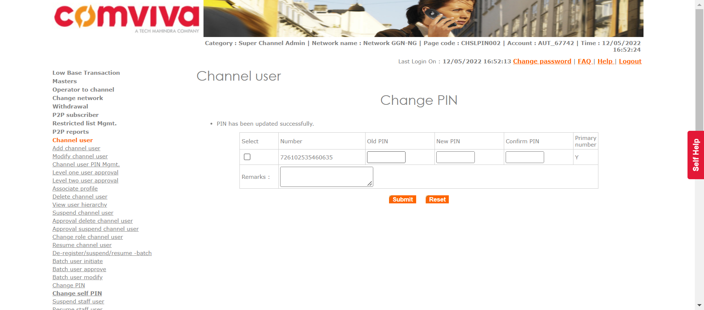
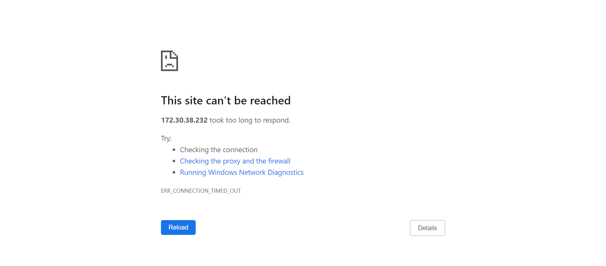

Tests
39 test(s) passed
2 test(s) failed, 5 others
Steps
2 step(s) passed
4 step(s) failed, 3,337 others
Tests
-
[Pre-Requisite]Division Management May 12, 2022 04:51:04 PM passMay 12, 2022 04:51:04 PM May 12, 2022 04:51:18 PM 0h 0m 13s+783ms
-
PDIVMGMT1: To verify that superadmin is able to add division in the system.May 12, 2022 04:51:05 PM 0h 0m 6s+887ms passPre-Requisite
Status Timestamp Details info_outline 4:51:05 PM Entered divisionManagement() info_outline 4:51:05 PM Trying to get User with Access: DIVISIONMGMT low_priority 4:51:05 PM java.lang.NullPointerException at com.utils.ExcelUtility.getCellData(ExcelUtility.java:311) at com.classes.UserAccess.getUserWithAccess(UserAccess.java:63) at com.Features.DivisionDeptManagment.divisionManagement(DivisionDeptManagment.java:79) at com.testscripts.prerequisites.PreRequisite_DivisionManagment.Test_AddDivisionDepartment(PreRequisite_DivisionManagment.java:27) at sun.reflect.NativeMethodAccessorImpl.invoke0(Native Method) at sun.reflect.NativeMethodAccessorImpl.invoke(Unknown Source) at sun.reflect.DelegatingMethodAccessorImpl.invoke(Unknown Source) at java.lang.reflect.Method.invoke(Unknown Source) at org.testng.internal.MethodInvocationHelper.invokeMethod(MethodInvocationHelper.java:124) at org.testng.internal.Invoker.invokeMethod(Invoker.java:580) at org.testng.internal.Invoker.invokeTestMethod(Invoker.java:716) at org.testng.internal.Invoker.invokeTestMethods(Invoker.java:988) at org.testng.internal.TestMethodWorker.invokeTestMethods(TestMethodWorker.java:125) at org.testng.internal.TestMethodWorker.run(TestMethodWorker.java:109) at org.testng.TestRunner.privateRun(TestRunner.java:648) at org.testng.TestRunner.run(TestRunner.java:505) at org.testng.SuiteRunner.runTest(SuiteRunner.java:455) at org.testng.SuiteRunner.runSequentially(SuiteRunner.java:450) at org.testng.SuiteRunner.privateRun(SuiteRunner.java:415) at org.testng.SuiteRunner.run(SuiteRunner.java:364) at org.testng.SuiteRunnerWorker.runSuite(SuiteRunnerWorker.java:52) at org.testng.SuiteRunnerWorker.run(SuiteRunnerWorker.java:84) at org.testng.TestNG.runSuitesSequentially(TestNG.java:1208) at org.testng.TestNG.runSuitesLocally(TestNG.java:1137) at org.testng.TestNG.runSuites(TestNG.java:1049) at org.testng.TestNG.run(TestNG.java:1017) at org.testng.remote.AbstractRemoteTestNG.run(AbstractRemoteTestNG.java:115) at org.testng.remote.RemoteTestNG.initAndRun(RemoteTestNG.java:251) at org.testng.remote.RemoteTestNG.main(RemoteTestNG.java:77)
low_priority 4:51:05 PM java.lang.NullPointerException at com.utils.ExcelUtility.getCellData(ExcelUtility.java:311) at com.classes.UserAccess.getUserWithAccess(UserAccess.java:64) at com.Features.DivisionDeptManagment.divisionManagement(DivisionDeptManagment.java:79) at com.testscripts.prerequisites.PreRequisite_DivisionManagment.Test_AddDivisionDepartment(PreRequisite_DivisionManagment.java:27) at sun.reflect.NativeMethodAccessorImpl.invoke0(Native Method) at sun.reflect.NativeMethodAccessorImpl.invoke(Unknown Source) at sun.reflect.DelegatingMethodAccessorImpl.invoke(Unknown Source) at java.lang.reflect.Method.invoke(Unknown Source) at org.testng.internal.MethodInvocationHelper.invokeMethod(MethodInvocationHelper.java:124) at org.testng.internal.Invoker.invokeMethod(Invoker.java:580) at org.testng.internal.Invoker.invokeTestMethod(Invoker.java:716) at org.testng.internal.Invoker.invokeTestMethods(Invoker.java:988) at org.testng.internal.TestMethodWorker.invokeTestMethods(TestMethodWorker.java:125) at org.testng.internal.TestMethodWorker.run(TestMethodWorker.java:109) at org.testng.TestRunner.privateRun(TestRunner.java:648) at org.testng.TestRunner.run(TestRunner.java:505) at org.testng.SuiteRunner.runTest(SuiteRunner.java:455) at org.testng.SuiteRunner.runSequentially(SuiteRunner.java:450) at org.testng.SuiteRunner.privateRun(SuiteRunner.java:415) at org.testng.SuiteRunner.run(SuiteRunner.java:364) at org.testng.SuiteRunnerWorker.runSuite(SuiteRunnerWorker.java:52) at org.testng.SuiteRunnerWorker.run(SuiteRunnerWorker.java:84) at org.testng.TestNG.runSuitesSequentially(TestNG.java:1208) at org.testng.TestNG.runSuitesLocally(TestNG.java:1137) at org.testng.TestNG.runSuites(TestNG.java:1049) at org.testng.TestNG.run(TestNG.java:1017) at org.testng.remote.AbstractRemoteTestNG.run(AbstractRemoteTestNG.java:115) at org.testng.remote.RemoteTestNG.initAndRun(RemoteTestNG.java:251) at org.testng.remote.RemoteTestNG.main(RemoteTestNG.java:77)
info_outline 4:51:05 PM Entered :: getUserNameByLogin() info_outline 4:51:05 PM select USER_NAME from users where LOGIN_ID = 'superadmin' info_outline 4:51:05 PM Query Repository Returns: USER_NAME (Super Admin) info_outline 4:51:05 PM UserAccess Returns: PARENT_NAME(Super Admin) | CATEGORY_NAME(Super Admin) | USER_NAME(Super Admin) | LOGIN_ID(superadmin) | PASSWORD(1357) info_outline 4:51:05 PM Trying to select Language info_outline 4:51:05 PM Language selected successfully as: English info_outline 4:51:05 PM Trying to enter Login ID info_outline 4:51:05 PM Login ID entered successfully as: superadmin info_outline 4:51:05 PM Trying to enter Password info_outline 4:51:05 PM Password entered successfully as: 1357 info_outline 4:51:05 PM Trying to click Submit Button info_outline 4:51:07 PM Submit button clicked successfully info_outline 4:51:07 PM Trying to click Relogin Button info_outline 4:51:07 PM Relogin Button Not Found info_outline 4:51:07 PM Multiple Networks page exists: true info_outline 4:51:08 PM Trying to click Masters link info_outline 4:51:08 PM Master Link clicked successfully info_outline 4:51:08 PM Trying to click Division Management link info_outline 4:51:09 PM Division Management link clicked successfully info_outline 4:51:09 PM Trying to click Add Button info_outline 4:51:10 PM Add Button clicked successfully info_outline 4:51:10 PM Trying to select Division Type info_outline 4:51:10 PM Division Type selected as OPERATOR info_outline 4:51:10 PM Trying to enter Division Name info_outline 4:51:10 PM Division Name entered as: AUTDIV09165 info_outline 4:51:10 PM Trying to enter Division Short Code info_outline 4:51:10 PM Division Short Code entered as: AUTDIV09165 info_outline 4:51:10 PM Trying to select Status info_outline 4:51:10 PM Status selected successfully info_outline 4:51:10 PM Trying to click Submit Button info_outline 4:51:11 PM Submit Button clicked successfully info_outline 4:51:11 PM Trying to click Confirm Button info_outline 4:51:11 PM Confirm Button clicked successfully info_outline 4:51:11 PM Trying to fetch Success Message info_outline 4:51:11 PM Success Message Returned: Divison added successfully info_outline 4:51:11 PM Exited divisionManagement() -
PDIVMGMT2: To verify that superadmin is able to add department in the system.May 12, 2022 04:51:11 PM 0h 0m 6s+847ms passPre-Requisite
Status Timestamp Details info_outline 4:51:11 PM Entered departmentManagement() info_outline 4:51:11 PM Trying to get User with Access: DIVISIONMGMT low_priority 4:51:11 PM java.lang.NullPointerException at com.utils.ExcelUtility.getCellData(ExcelUtility.java:311) at com.classes.UserAccess.getUserWithAccess(UserAccess.java:63) at com.Features.DivisionDeptManagment.departmentManagement(DivisionDeptManagment.java:159) at com.testscripts.prerequisites.PreRequisite_DivisionManagment.Test_AddDivisionDepartment(PreRequisite_DivisionManagment.java:31) at sun.reflect.NativeMethodAccessorImpl.invoke0(Native Method) at sun.reflect.NativeMethodAccessorImpl.invoke(Unknown Source) at sun.reflect.DelegatingMethodAccessorImpl.invoke(Unknown Source) at java.lang.reflect.Method.invoke(Unknown Source) at org.testng.internal.MethodInvocationHelper.invokeMethod(MethodInvocationHelper.java:124) at org.testng.internal.Invoker.invokeMethod(Invoker.java:580) at org.testng.internal.Invoker.invokeTestMethod(Invoker.java:716) at org.testng.internal.Invoker.invokeTestMethods(Invoker.java:988) at org.testng.internal.TestMethodWorker.invokeTestMethods(TestMethodWorker.java:125) at org.testng.internal.TestMethodWorker.run(TestMethodWorker.java:109) at org.testng.TestRunner.privateRun(TestRunner.java:648) at org.testng.TestRunner.run(TestRunner.java:505) at org.testng.SuiteRunner.runTest(SuiteRunner.java:455) at org.testng.SuiteRunner.runSequentially(SuiteRunner.java:450) at org.testng.SuiteRunner.privateRun(SuiteRunner.java:415) at org.testng.SuiteRunner.run(SuiteRunner.java:364) at org.testng.SuiteRunnerWorker.runSuite(SuiteRunnerWorker.java:52) at org.testng.SuiteRunnerWorker.run(SuiteRunnerWorker.java:84) at org.testng.TestNG.runSuitesSequentially(TestNG.java:1208) at org.testng.TestNG.runSuitesLocally(TestNG.java:1137) at org.testng.TestNG.runSuites(TestNG.java:1049) at org.testng.TestNG.run(TestNG.java:1017) at org.testng.remote.AbstractRemoteTestNG.run(AbstractRemoteTestNG.java:115) at org.testng.remote.RemoteTestNG.initAndRun(RemoteTestNG.java:251) at org.testng.remote.RemoteTestNG.main(RemoteTestNG.java:77)
low_priority 4:51:12 PM java.lang.NullPointerException at com.utils.ExcelUtility.getCellData(ExcelUtility.java:311) at com.classes.UserAccess.getUserWithAccess(UserAccess.java:64) at com.Features.DivisionDeptManagment.departmentManagement(DivisionDeptManagment.java:159) at com.testscripts.prerequisites.PreRequisite_DivisionManagment.Test_AddDivisionDepartment(PreRequisite_DivisionManagment.java:31) at sun.reflect.NativeMethodAccessorImpl.invoke0(Native Method) at sun.reflect.NativeMethodAccessorImpl.invoke(Unknown Source) at sun.reflect.DelegatingMethodAccessorImpl.invoke(Unknown Source) at java.lang.reflect.Method.invoke(Unknown Source) at org.testng.internal.MethodInvocationHelper.invokeMethod(MethodInvocationHelper.java:124) at org.testng.internal.Invoker.invokeMethod(Invoker.java:580) at org.testng.internal.Invoker.invokeTestMethod(Invoker.java:716) at org.testng.internal.Invoker.invokeTestMethods(Invoker.java:988) at org.testng.internal.TestMethodWorker.invokeTestMethods(TestMethodWorker.java:125) at org.testng.internal.TestMethodWorker.run(TestMethodWorker.java:109) at org.testng.TestRunner.privateRun(TestRunner.java:648) at org.testng.TestRunner.run(TestRunner.java:505) at org.testng.SuiteRunner.runTest(SuiteRunner.java:455) at org.testng.SuiteRunner.runSequentially(SuiteRunner.java:450) at org.testng.SuiteRunner.privateRun(SuiteRunner.java:415) at org.testng.SuiteRunner.run(SuiteRunner.java:364) at org.testng.SuiteRunnerWorker.runSuite(SuiteRunnerWorker.java:52) at org.testng.SuiteRunnerWorker.run(SuiteRunnerWorker.java:84) at org.testng.TestNG.runSuitesSequentially(TestNG.java:1208) at org.testng.TestNG.runSuitesLocally(TestNG.java:1137) at org.testng.TestNG.runSuites(TestNG.java:1049) at org.testng.TestNG.run(TestNG.java:1017) at org.testng.remote.AbstractRemoteTestNG.run(AbstractRemoteTestNG.java:115) at org.testng.remote.RemoteTestNG.initAndRun(RemoteTestNG.java:251) at org.testng.remote.RemoteTestNG.main(RemoteTestNG.java:77)
info_outline 4:51:12 PM Entered :: getUserNameByLogin() info_outline 4:51:12 PM select USER_NAME from users where LOGIN_ID = 'superadmin' info_outline 4:51:12 PM Query Repository Returns: USER_NAME (Super Admin) info_outline 4:51:12 PM UserAccess Returns: PARENT_NAME(Super Admin) | CATEGORY_NAME(Super Admin) | USER_NAME(Super Admin) | LOGIN_ID(superadmin) | PASSWORD(1357) info_outline 4:51:12 PM Trying to select Language info_outline 4:51:12 PM Language selected successfully as: English info_outline 4:51:12 PM Trying to enter Login ID info_outline 4:51:12 PM Login ID entered successfully as: superadmin info_outline 4:51:12 PM Trying to enter Password info_outline 4:51:12 PM Password entered successfully as: 1357 info_outline 4:51:12 PM Trying to click Submit Button info_outline 4:51:13 PM Submit button clicked successfully info_outline 4:51:13 PM Trying to click Relogin Button info_outline 4:51:13 PM Relogin Button Not Found info_outline 4:51:13 PM Multiple Networks page exists: true info_outline 4:51:14 PM Trying to click Masters link info_outline 4:51:15 PM Master Link clicked successfully info_outline 4:51:15 PM Trying to click Department Managament link info_outline 4:51:15 PM Department management link clicked successfully info_outline 4:51:15 PM Trying to select Division Type info_outline 4:51:15 PM Division Type OPERATOR selected successfully info_outline 4:51:15 PM Trying to select Division info_outline 4:51:15 PM Division selected as: AUTDIV09165 info_outline 4:51:15 PM Trying to click Submit Button info_outline 4:51:16 PM Submit Button clicked successfully info_outline 4:51:16 PM Trying to click Add Button info_outline 4:51:17 PM Add Button clicked successfully info_outline 4:51:17 PM Trying to enter Department Name info_outline 4:51:17 PM Department name entered as: AUTDEPT916401 info_outline 4:51:17 PM Trying to enter Department Short Code info_outline 4:51:17 PM Department Short Code entered as: AUT3559 info_outline 4:51:17 PM Trying to click Submit Button info_outline 4:51:18 PM Submit Button clicked successfully info_outline 4:51:18 PM Trying to click Confirm Button info_outline 4:51:18 PM Confirm Button clicked successfully info_outline 4:51:18 PM Trying to fetch Success Message info_outline 4:51:18 PM Success Message Returned: Department added successfully info_outline 4:51:18 PM Exited departmentManagement()
-
-
[Pre-Requisite]Network Admin Creation May 12, 2022 04:51:23 PM passMay 12, 2022 04:51:23 PM May 12, 2022 04:52:26 PM 0h 1m 3s+263ms
-
PNETWORKADMINCREATION1: To verify Super Admin is able to initiate Network AdminMay 12, 2022 04:51:23 PM 0h 0m 51s+667ms passPre-Requisite
Status Timestamp Details info_outline 4:51:23 PM Entered operatorUserInitiate(Super Admin, Network Admin) info_outline 4:51:23 PM Login ID Found as: superadmin info_outline 4:51:23 PM Password Found as: 1357 info_outline 4:51:23 PM Trying to select Language info_outline 4:51:23 PM Language selected successfully as: English info_outline 4:51:23 PM Trying to enter Login ID info_outline 4:51:24 PM Login ID entered successfully as: superadmin info_outline 4:51:24 PM Trying to enter Password info_outline 4:51:24 PM Password entered successfully as: 1357 info_outline 4:51:24 PM Trying to click Submit Button info_outline 4:51:25 PM Submit button clicked successfully info_outline 4:51:25 PM Trying to click Relogin Button info_outline 4:51:25 PM Relogin Button Not Found info_outline 4:51:25 PM Multiple Networks page exists: true info_outline 4:51:26 PM User clicked Operator Users. info_outline 4:51:26 PM Trying to click add Operator User Link info_outline 4:51:27 PM Add Operator User link clicked successfully info_outline 4:51:27 PM Trying to select Category info_outline 4:51:27 PM Category selected successfully info_outline 4:51:27 PM Trying to click Submit Button info_outline 4:51:28 PM Submit Button clicked successfully info_outline 4:51:28 PM Trying to enter First Name info_outline 4:51:28 PM First Name entered as: AUTFN1716 info_outline 4:51:28 PM Trying to enter Last Name info_outline 4:51:28 PM Last Name entered as: AUTLN9575 info_outline 4:51:28 PM Trying to enter User Name info_outline 4:51:28 PM User Name field not found info_outline 4:51:28 PM Trying to enter Short Name info_outline 4:51:28 PM Short Name entered as: AUTSN8634 info_outline 4:51:28 PM Trying to select User Name Prefix info_outline 4:51:28 PM User Name prefix selected successfully info_outline 4:51:28 PM Trying to enter Subscriber Code info_outline 4:51:28 PM Subscriber Code entered as: 366912 info_outline 4:51:28 PM Trying to select Status info_outline 4:51:28 PM Status drop down not found info_outline 4:51:28 PM GenerateMSISDN class Returns: Remaining MSISDNLength (13) info_outline 4:51:28 PM The generated MSISDN is ::724989525775089 info_outline 4:51:28 PM Entered :: checkForUniqueMSISDN() info_outline 4:51:29 PM Query Repository Returns: MSISDNStatus (N) info_outline 4:51:29 PM The generated External Code is ::259598152 info_outline 4:51:29 PM Entered :: checkForUniqueEXTCODE() info_outline 4:51:29 PM Query Repository Returns: ExternalCodeStatus (N) info_outline 4:51:29 PM Trying to enter External Code info_outline 4:51:29 PM External Code entered as: 259598152 info_outline 4:51:29 PM Trying to enter MobileNumber info_outline 4:51:29 PM Mobile Number entered as: 724989525775089 info_outline 4:51:29 PM Trying to enter Contact Number info_outline 4:51:29 PM Contact No. entered as: 302846 info_outline 4:51:29 PM Trying to select Division info_outline 4:51:29 PM Division selected as: AUTDIV09165 info_outline 4:51:29 PM Trying to select Department info_outline 4:51:29 PM Department selected as: AUTDEPT916401 info_outline 4:51:29 PM Trying to enter Address1 info_outline 4:51:29 PM Address1 entered as: Add16614 info_outline 4:51:29 PM Trying to enter Address2 info_outline 4:51:29 PM Address2 entered as: Add26295 info_outline 4:51:29 PM Trying to enter City info_outline 4:51:29 PM City entered as: City8917 info_outline 4:51:29 PM Trying to enter State info_outline 4:51:30 PM State entered as: State5678 info_outline 4:51:30 PM Trying to enter Country info_outline 4:51:30 PM Country entered as: Country41 info_outline 4:51:30 PM Trying to enter Email ID info_outline 4:51:30 PM Email ID entered as: 15o5k@mail.com info_outline 4:51:30 PM The generated Login ID is ::AUT_73262 info_outline 4:51:30 PM Entered :: checkForUniqueLoginID() info_outline 4:51:30 PM Query Repository Returns: LoginIDStatus (N) info_outline 4:51:30 PM Trying to enter Login ID info_outline 4:51:30 PM Login ID entered as: AUT_73262 info_outline 4:51:30 PM Trying to check if Assign Geographies link exist info_outline 4:51:30 PM Assign Geographies link found info_outline 4:51:30 PM Trying to click Assign Geographies link info_outline 4:51:30 PM Assign Geographies link clicked successfully info_outline 4:51:34 PM Trying to select Geography info_outline 4:51:34 PM Geography selected successfully info_outline 4:51:34 PM Trying to click Add button info_outline 4:51:34 PM Add button for geography clicked successfully info_outline 4:51:34 PM Geographies has been assigned to the user. info_outline 4:51:35 PM ---- Window Handler ----
Switched Window ID - CDwindow-E8F4E809DBD0653FDD6306CF60F0BB8E
Current Window ID - CDwindow-22AB1F45D6EAE7DE0841C6FFD99AE6C1
Window Switched to: http://172.30.38.232:6789/pretups/login.doinfo_outline 4:51:37 PM Trying to check if Assign Network link exists info_outline 4:51:37 PM Assign Network link not found info_outline 4:51:38 PM Assign Network Link not found info_outline 4:51:38 PM ---- Window Handler ----
Switched Window ID - CDwindow-22AB1F45D6EAE7DE0841C6FFD99AE6C1
Current Window ID - CDwindow-22AB1F45D6EAE7DE0841C6FFD99AE6C1
Window ID Matched
Window is already closed or close link not exist
Window Switched to: http://172.30.38.232:6789/pretups/login.doinfo_outline 4:51:40 PM Trying to check if Assign Roles link exist info_outline 4:51:40 PM Trying to click Assign Roles info_outline 4:51:40 PM Assign Roles clicked successfully info_outline 4:51:41 PM Trying to check ALL option for assign Roles info_outline 4:51:43 PM ALL option selected for Assign Roles info_outline 4:51:43 PM Trying to click Add button info_outline 4:51:46 PM Add button clicked successfully info_outline 4:51:46 PM ---- Window Handler ----
Switched Window ID - CDwindow-475C0F45185967568721CDE95AA44CA1
Current Window ID - CDwindow-22AB1F45D6EAE7DE0841C6FFD99AE6C1
Window Switched to: http://172.30.38.232:6789/pretups/login.doinfo_outline 4:51:48 PM Trying to check if Assign Domain link exists info_outline 4:51:48 PM Assign Domains link not found info_outline 4:51:49 PM Assign Domains link not found info_outline 4:51:49 PM ---- Window Handler ----
Switched Window ID - CDwindow-22AB1F45D6EAE7DE0841C6FFD99AE6C1
Current Window ID - CDwindow-22AB1F45D6EAE7DE0841C6FFD99AE6C1
Window ID Matched
Window is already closed or close link not exist
Window Switched to: http://172.30.38.232:6789/pretups/login.doinfo_outline 4:51:51 PM Trying to check if Assign Products link exist info_outline 4:51:51 PM Assign Products link not found info_outline 4:51:52 PM Assign Products link not found info_outline 4:51:52 PM ---- Window Handler ----
Switched Window ID - CDwindow-22AB1F45D6EAE7DE0841C6FFD99AE6C1
Current Window ID - CDwindow-22AB1F45D6EAE7DE0841C6FFD99AE6C1
Window ID Matched
Window is already closed or close link not exist
Window Switched to: http://172.30.38.232:6789/pretups/login.doinfo_outline 4:51:54 PM Trying to click 'assign voucher type' link. info_outline 4:51:55 PM 'assign voucher type' link clicked successfully info_outline 4:51:55 PM Trying to check ALL option for voucher type. info_outline 4:51:55 PM ALL option for Voucher types selected successfully info_outline 4:51:55 PM Trying to click Add button info_outline 4:51:56 PM Add button clicked successfully info_outline 4:51:56 PM ---- Window Handler ----
Switched Window ID - CDwindow-801C424E95877D49BFBFAB0A85444F04
Current Window ID - CDwindow-22AB1F45D6EAE7DE0841C6FFD99AE6C1
Window Switched to: http://172.30.38.232:6789/pretups/login.doinfo_outline 4:51:58 PM Trying to check if Assign Phone Number link exist info_outline 4:51:58 PM Assign phone number link not found info_outline 4:51:59 PM Assign Phone Numbers link not found info_outline 4:51:59 PM ---- Window Handler ----
Switched Window ID - CDwindow-22AB1F45D6EAE7DE0841C6FFD99AE6C1
Current Window ID - CDwindow-22AB1F45D6EAE7DE0841C6FFD99AE6C1
Window ID Matched
Window is already closed or close link not exist
Window Switched to: http://172.30.38.232:6789/pretups/login.doinfo_outline 4:52:01 PM Trying to check if Assign Services exists info_outline 4:52:01 PM Assign Services link not found info_outline 4:52:02 PM Assign Services link not found info_outline 4:52:02 PM ---- Window Handler ----
Switched Window ID - CDwindow-22AB1F45D6EAE7DE0841C6FFD99AE6C1
Current Window ID - CDwindow-22AB1F45D6EAE7DE0841C6FFD99AE6C1
Window ID Matched
Window is already closed or close link not exist
Window Switched to: http://172.30.38.232:6789/pretups/login.doinfo_outline 4:52:04 PM Trying to click Assign Voucher Type link info_outline 4:52:05 PM Assign voucher Type link clicked successfully info_outline 4:52:05 PM Trying to click ALL Voucher Type info_outline 4:52:05 PM All Voucher Types clicked successfully for Assign Voucher Type info_outline 4:52:05 PM Trying to click Add button for Assign Voucher Type info_outline 4:52:06 PM Add button for assign voucher Type clicked successfully info_outline 4:52:07 PM ---- Window Handler ----
Switched Window ID - CDwindow-EF181186334C4514BE63057E2D5AC1C0
Current Window ID - CDwindow-22AB1F45D6EAE7DE0841C6FFD99AE6C1
Window Switched to: http://172.30.38.232:6789/pretups/login.doinfo_outline 4:52:09 PM Trying to click Voucher Segment Type link info_outline 4:52:09 PM Assign voucher Segment link clicked successfully info_outline 4:52:10 PM Trying to click ALL Voucher Segment info_outline 4:52:10 PM All Voucher Segments clicked successfully for Assign Voucher Type info_outline 4:52:10 PM Trying to click Add button for Assign Voucher Type info_outline 4:52:10 PM Add button for assign voucher Segment clicked successfully info_outline 4:52:11 PM ---- Window Handler ----
Switched Window ID - CDwindow-753B27C4D1B97F46D0078097E621B944
Current Window ID - CDwindow-22AB1F45D6EAE7DE0841C6FFD99AE6C1
Window Switched to: http://172.30.38.232:6789/pretups/login.doinfo_outline 4:52:13 PM Trying to check if Enter Password field exist info_outline 4:52:13 PM Enter Password field found info_outline 4:52:13 PM Trying to enter Password info_outline 4:52:13 PM Password Entered as: Com@1357 info_outline 4:52:13 PM Trying to enter Confirm Password info_outline 4:52:13 PM Confirm Password Entered as: Com@1357 info_outline 4:52:13 PM Trying to click Save button info_outline 4:52:14 PM Save Button clicked successfully info_outline 4:52:14 PM Trying to click Confirm button. info_outline 4:52:14 PM Confirm Button clicked successfully info_outline 4:52:14 PM Trying to fetch success or reject message. info_outline 4:52:14 PM Message fetched as :: Operator user AUTFN1716 AUTLN9575 request successfully accepted info_outline 4:52:14 PM Exited operatorUserInitiate() info_outline 4:52:14 PM assertNotNull: Message Found. info_outline 4:52:15 PM -
PNETWORKADMINCREATION2: To verify Super Admin is able to approve Network AdminMay 12, 2022 04:52:15 PM 0h 0m 6s+834ms passPre-Requisite
Status Timestamp Details info_outline 4:52:15 PM Entered approveUser(Super Admin) info_outline 4:52:15 PM Entered :: getSystemPreference(OPT_USR_APRL_LEVEL) info_outline 4:52:15 PM Query Repository Returns: DEFAULT_VALUE (1) info_outline 4:52:15 PM Login ID Found as: superadmin info_outline 4:52:15 PM Password Found as: 1357 info_outline 4:52:15 PM Trying to select Language info_outline 4:52:15 PM Language selected successfully as: English info_outline 4:52:15 PM Trying to enter Login ID info_outline 4:52:15 PM Login ID entered successfully as: superadmin info_outline 4:52:15 PM Trying to enter Password info_outline 4:52:15 PM Password entered successfully as: 1357 info_outline 4:52:15 PM Trying to click Submit Button info_outline 4:52:16 PM Submit button clicked successfully info_outline 4:52:16 PM Trying to click Relogin Button info_outline 4:52:16 PM Relogin Button Not Found info_outline 4:52:16 PM Multiple Networks page exists: true info_outline 4:52:17 PM User clicked Operator Users. info_outline 4:52:17 PM Trying to click Operator User Approval Link info_outline 4:52:18 PM Operator User approval link clicked successfully info_outline 4:52:18 PM Trying to Enter intiated Login ID: AUT_73262 info_outline 4:52:18 PM Login ID entered successfully info_outline 4:52:18 PM Trying to click approval submit button info_outline 4:52:19 PM First Submit button clicked successfully info_outline 4:52:19 PM Trying to click Submit button info_outline 4:52:19 PM Second Submit button clicked successfully info_outline 4:52:19 PM Tring to click Approve button info_outline 4:52:20 PM Approve button clicked successfully info_outline 4:52:20 PM Tring to click Confirm button info_outline 4:52:21 PM Confirm button clicked successfully info_outline 4:52:21 PM Trying to fetch success or reject message. info_outline 4:52:21 PM Message fetched as :: User AUTFN1716 AUTLN9575 successfully approved. info_outline 4:52:21 PM User clicked Logout. info_outline 4:52:21 PM Exited approveUser() -
PNETWORKADMINCREATION3: To verify that Network Admin is prompted for password change on first login.May 12, 2022 04:52:21 PM 0h 0m 4s+695ms passPre-Requisite
Status Timestamp Details info_outline 4:52:22 PM Entered changeUserFirstTimePassword() info_outline 4:52:22 PM Entered :: getSystemPreference(AUTO_PWD_GENERATE_ALLOW) info_outline 4:52:22 PM Query Repository Returns: DEFAULT_VALUE (false) info_outline 4:52:22 PM Password field exist info_outline 4:52:22 PM Trying to select Language info_outline 4:52:22 PM Language selected successfully as: English info_outline 4:52:22 PM Trying to enter Login ID info_outline 4:52:22 PM Login ID entered successfully as: AUT_73262 info_outline 4:52:22 PM Trying to enter Password info_outline 4:52:22 PM Password entered successfully as: Com@1357 info_outline 4:52:22 PM Trying to click Submit Button info_outline 4:52:23 PM Submit button clicked successfully info_outline 4:52:23 PM Trying to click Relogin Button info_outline 4:52:23 PM Relogin Button Not Found info_outline 4:52:23 PM Trying to enter Old Password info_outline 4:52:25 PM Old Password Entered successfully:Com@1357 info_outline 4:52:25 PM Trying to enter New Password info_outline 4:52:25 PM New Password Entered successfully:Com@2468 info_outline 4:52:25 PM Trying to enter Confirm Password info_outline 4:52:25 PM Confirm Password Entered successfully:Com@2468 info_outline 4:52:25 PM Trying to click Submit Button info_outline 4:52:26 PM Submit Button clicked successfully info_outline 4:52:26 PM Exited changeUserFirstTimePassword() info_outline 4:52:26 PM Trying to fetch success message. info_outline 4:52:26 PM Message fetched as :: Successfully changed password info_outline 4:52:26 PM Expected: Successfully changed password
Found: Successfully changed passwordinfo_outline 4:52:26 PM Message Validation Success info_outline 4:52:26 PM
-
-
[Pre-Requisite]Geographical Domain Management May 12, 2022 04:52:30 PM passMay 12, 2022 04:52:30 PM May 12, 2022 04:52:54 PM 0h 0m 23s+894ms
-
PGEODOMAINMGMT1: To verify that Operator User is able to create Zone.May 12, 2022 04:52:30 PM 0h 0m 7s+970ms passPre-Requisite
Status Timestamp Details info_outline 4:52:30 PM Entered addGeographicalDomain(Zone, Zone) info_outline 4:52:30 PM Trying to get User with Access: VIEWGRPHDOMAIN low_priority 4:52:30 PM java.lang.NullPointerException at com.utils.ExcelUtility.getCellData(ExcelUtility.java:311) at com.classes.UserAccess.getUserWithAccess(UserAccess.java:64) at com.Features.GeogaphicalDomainManagement.addGeographicalDomain(GeogaphicalDomainManagement.java:89) at com.testscripts.prerequisites.PreRequisite_GeographicalDomainManagement.Test_AddGeographicalDomain(PreRequisite_GeographicalDomainManagement.java:46) at sun.reflect.NativeMethodAccessorImpl.invoke0(Native Method) at sun.reflect.NativeMethodAccessorImpl.invoke(Unknown Source) at sun.reflect.DelegatingMethodAccessorImpl.invoke(Unknown Source) at java.lang.reflect.Method.invoke(Unknown Source) at org.testng.internal.MethodInvocationHelper.invokeMethod(MethodInvocationHelper.java:124) at org.testng.internal.Invoker.invokeMethod(Invoker.java:580) at org.testng.internal.Invoker.invokeTestMethod(Invoker.java:716) at org.testng.internal.Invoker.invokeTestMethods(Invoker.java:988) at org.testng.internal.TestMethodWorker.invokeTestMethods(TestMethodWorker.java:125) at org.testng.internal.TestMethodWorker.run(TestMethodWorker.java:109) at org.testng.TestRunner.privateRun(TestRunner.java:648) at org.testng.TestRunner.run(TestRunner.java:505) at org.testng.SuiteRunner.runTest(SuiteRunner.java:455) at org.testng.SuiteRunner.runSequentially(SuiteRunner.java:450) at org.testng.SuiteRunner.privateRun(SuiteRunner.java:415) at org.testng.SuiteRunner.run(SuiteRunner.java:364) at org.testng.SuiteRunnerWorker.runSuite(SuiteRunnerWorker.java:52) at org.testng.SuiteRunnerWorker.run(SuiteRunnerWorker.java:84) at org.testng.TestNG.runSuitesSequentially(TestNG.java:1208) at org.testng.TestNG.runSuitesLocally(TestNG.java:1137) at org.testng.TestNG.runSuites(TestNG.java:1049) at org.testng.TestNG.run(TestNG.java:1017) at org.testng.remote.AbstractRemoteTestNG.run(AbstractRemoteTestNG.java:115) at org.testng.remote.RemoteTestNG.initAndRun(RemoteTestNG.java:251) at org.testng.remote.RemoteTestNG.main(RemoteTestNG.java:77)
info_outline 4:52:30 PM Entered :: getUserNameByLogin() info_outline 4:52:30 PM select USER_NAME from users where LOGIN_ID = 'AUT_73262' info_outline 4:52:30 PM Query Repository Returns: USER_NAME (AUTFN1716 AUTLN9575) info_outline 4:52:30 PM UserAccess Returns: PARENT_NAME(Super Admin) | CATEGORY_NAME(Network Admin) | USER_NAME(AUTFN1716 AUTLN9575) | LOGIN_ID(AUT_73262) | PASSWORD(Com@2468) info_outline 4:52:30 PM Trying to select Language info_outline 4:52:30 PM Language selected successfully as: English info_outline 4:52:30 PM Trying to enter Login ID info_outline 4:52:31 PM Login ID entered successfully as: AUT_73262 info_outline 4:52:31 PM Trying to enter Password info_outline 4:52:31 PM Password entered successfully as: Com@2468 info_outline 4:52:31 PM Trying to click Submit Button info_outline 4:52:32 PM Submit button clicked successfully info_outline 4:52:32 PM Trying to click Relogin Button info_outline 4:52:32 PM Relogin Button Not Found info_outline 4:52:32 PM Multiple Networks page exists: false info_outline 4:52:32 PM Only single Network code exist: NG info_outline 4:52:32 PM Multiple Networks page exists: false info_outline 4:52:32 PM Only single Network code exist: NG info_outline 4:52:33 PM User clicked Masters. info_outline 4:52:34 PM User clicked Geographical Domain Management. info_outline 4:52:34 PM User selected Domain:Zone info_outline 4:52:35 PM User clicked submit Button info_outline 4:52:35 PM User clicked Add Button. info_outline 4:52:35 PM The generated Domain Code is ::AUT6g7G info_outline 4:52:35 PM The generated Domain Name is ::AUTF5MlC info_outline 4:52:35 PM The generated Domain Short Name is ::AUTAKF info_outline 4:52:35 PM Entered :: checkUniqueDomain() info_outline 4:52:35 PM Query Repository Returns: Unique Domain Code / Name / ShortName Status (N) info_outline 4:52:36 PM User entered GrphDomainCode: AUT6g7G info_outline 4:52:36 PM User entered GrphDomainName: AUTF5MlC info_outline 4:52:36 PM User entered GrphDomainShortName: AUTAKF info_outline 4:52:36 PM User entered Description: domainType Name info_outline 4:52:36 PM 'Is Default' Selected info_outline 4:52:37 PM User clicked Add Button. info_outline 4:52:38 PM User clicked Confirm Button. info_outline 4:52:38 PM No error Message found: org.openqa.selenium.NoSuchElementException: no such element: Unable to locate element: {"method":"xpath","selector":"//tr/td/ol/li"} (Session info: chrome=101.0.4951.54) For documentation on this error, please visit: http://seleniumhq.org/exceptions/no_such_element.html Build info: version: '3.10.0', revision: '176b4a9', time: '2018-03-02T19:03:16.397Z' System info: host: 'MCKL-20005142', ip: '192.168.1.40', os.name: 'Windows 10', os.arch: 'amd64', os.version: '10.0', java.version: '1.8.0_291' Driver info: org.openqa.selenium.chrome.ChromeDriver Capabilities {acceptInsecureCerts: false, browserName: chrome, browserVersion: 101.0.4951.54, chrome: {chromedriverVersion: 101.0.4951.41 (93c720db8323..., userDataDir: C:\Users\SOURAB~1.AWA\AppDa...}, goog:chromeOptions: {debuggerAddress: localhost:62975}, javascriptEnabled: true, networkConnectionEnabled: false, pageLoadStrategy: normal, platform: WINDOWS, platformName: WINDOWS, proxy: Proxy(), setWindowRect: true, strictFileInteractability: false, timeouts: {implicit: 0, pageLoad: 300000, script: 30000}, unhandledPromptBehavior: dismiss and notify, webauthn:extension:credBlob: true, webauthn:extension:largeBlob: true, webauthn:virtualAuthenticators: true} Session ID: 8384eea90c1bfc939fc0cbecc83d2d60 *** Element info: {Using=xpath, value=//tr/td/ol/li} info_outline 4:52:38 PM Added a: Zone info_outline 4:52:38 PM Exited addGeographicalDomain() -
PGEODOMAINMGMT1: To verify that Operator User is able to create Area.May 12, 2022 04:52:38 PM 0h 0m 8s+6ms passPre-Requisite
Status Timestamp Details info_outline 4:52:38 PM Entered addGeographicalDomain(Zone, Area) info_outline 4:52:38 PM Trying to get User with Access: VIEWGRPHDOMAIN low_priority 4:52:38 PM java.lang.NullPointerException at com.utils.ExcelUtility.getCellData(ExcelUtility.java:311) at com.classes.UserAccess.getUserWithAccess(UserAccess.java:64) at com.Features.GeogaphicalDomainManagement.addGeographicalDomain(GeogaphicalDomainManagement.java:89) at com.testscripts.prerequisites.PreRequisite_GeographicalDomainManagement.Test_AddGeographicalDomain(PreRequisite_GeographicalDomainManagement.java:46) at sun.reflect.NativeMethodAccessorImpl.invoke0(Native Method) at sun.reflect.NativeMethodAccessorImpl.invoke(Unknown Source) at sun.reflect.DelegatingMethodAccessorImpl.invoke(Unknown Source) at java.lang.reflect.Method.invoke(Unknown Source) at org.testng.internal.MethodInvocationHelper.invokeMethod(MethodInvocationHelper.java:124) at org.testng.internal.Invoker.invokeMethod(Invoker.java:580) at org.testng.internal.Invoker.invokeTestMethod(Invoker.java:716) at org.testng.internal.Invoker.invokeTestMethods(Invoker.java:988) at org.testng.internal.TestMethodWorker.invokeTestMethods(TestMethodWorker.java:125) at org.testng.internal.TestMethodWorker.run(TestMethodWorker.java:109) at org.testng.TestRunner.privateRun(TestRunner.java:648) at org.testng.TestRunner.run(TestRunner.java:505) at org.testng.SuiteRunner.runTest(SuiteRunner.java:455) at org.testng.SuiteRunner.runSequentially(SuiteRunner.java:450) at org.testng.SuiteRunner.privateRun(SuiteRunner.java:415) at org.testng.SuiteRunner.run(SuiteRunner.java:364) at org.testng.SuiteRunnerWorker.runSuite(SuiteRunnerWorker.java:52) at org.testng.SuiteRunnerWorker.run(SuiteRunnerWorker.java:84) at org.testng.TestNG.runSuitesSequentially(TestNG.java:1208) at org.testng.TestNG.runSuitesLocally(TestNG.java:1137) at org.testng.TestNG.runSuites(TestNG.java:1049) at org.testng.TestNG.run(TestNG.java:1017) at org.testng.remote.AbstractRemoteTestNG.run(AbstractRemoteTestNG.java:115) at org.testng.remote.RemoteTestNG.initAndRun(RemoteTestNG.java:251) at org.testng.remote.RemoteTestNG.main(RemoteTestNG.java:77)
info_outline 4:52:38 PM Entered :: getUserNameByLogin() info_outline 4:52:38 PM select USER_NAME from users where LOGIN_ID = 'AUT_73262' info_outline 4:52:38 PM Query Repository Returns: USER_NAME (AUTFN1716 AUTLN9575) info_outline 4:52:38 PM UserAccess Returns: PARENT_NAME(Super Admin) | CATEGORY_NAME(Network Admin) | USER_NAME(AUTFN1716 AUTLN9575) | LOGIN_ID(AUT_73262) | PASSWORD(Com@2468) info_outline 4:52:39 PM Trying to select Language info_outline 4:52:39 PM Language selected successfully as: English info_outline 4:52:39 PM Trying to enter Login ID info_outline 4:52:39 PM Login ID entered successfully as: AUT_73262 info_outline 4:52:39 PM Trying to enter Password info_outline 4:52:39 PM Password entered successfully as: Com@2468 info_outline 4:52:39 PM Trying to click Submit Button info_outline 4:52:40 PM Submit button clicked successfully info_outline 4:52:40 PM Trying to click Relogin Button info_outline 4:52:40 PM Relogin Button Not Found info_outline 4:52:40 PM Multiple Networks page exists: false info_outline 4:52:40 PM Only single Network code exist: NG info_outline 4:52:40 PM Multiple Networks page exists: false info_outline 4:52:40 PM Only single Network code exist: NG info_outline 4:52:41 PM User clicked Masters. info_outline 4:52:42 PM User clicked Geographical Domain Management. info_outline 4:52:42 PM User selected Domain:Area info_outline 4:52:42 PM User clicked submit Button info_outline 4:52:43 PM User clicked submit Button info_outline 4:52:44 PM User clicked Add Button. info_outline 4:52:44 PM The generated Domain Code is ::AUTJHNo info_outline 4:52:44 PM The generated Domain Name is ::AUTJKm5d info_outline 4:52:44 PM The generated Domain Short Name is ::AUTdFG info_outline 4:52:44 PM Entered :: checkUniqueDomain() info_outline 4:52:44 PM Query Repository Returns: Unique Domain Code / Name / ShortName Status (N) info_outline 4:52:44 PM User entered GrphDomainCode: AUTJHNo info_outline 4:52:44 PM User entered GrphDomainName: AUTJKm5d info_outline 4:52:44 PM User entered GrphDomainShortName: AUTdFG info_outline 4:52:45 PM User entered Description: domainType Name info_outline 4:52:45 PM 'Is Default' Selected info_outline 4:52:45 PM User clicked Add Button. info_outline 4:52:46 PM User clicked Confirm Button. info_outline 4:52:46 PM No error Message found: org.openqa.selenium.NoSuchElementException: no such element: Unable to locate element: {"method":"xpath","selector":"//tr/td/ol/li"} (Session info: chrome=101.0.4951.54) For documentation on this error, please visit: http://seleniumhq.org/exceptions/no_such_element.html Build info: version: '3.10.0', revision: '176b4a9', time: '2018-03-02T19:03:16.397Z' System info: host: 'MCKL-20005142', ip: '192.168.1.40', os.name: 'Windows 10', os.arch: 'amd64', os.version: '10.0', java.version: '1.8.0_291' Driver info: org.openqa.selenium.chrome.ChromeDriver Capabilities {acceptInsecureCerts: false, browserName: chrome, browserVersion: 101.0.4951.54, chrome: {chromedriverVersion: 101.0.4951.41 (93c720db8323..., userDataDir: C:\Users\SOURAB~1.AWA\AppDa...}, goog:chromeOptions: {debuggerAddress: localhost:62975}, javascriptEnabled: true, networkConnectionEnabled: false, pageLoadStrategy: normal, platform: WINDOWS, platformName: WINDOWS, proxy: Proxy(), setWindowRect: true, strictFileInteractability: false, timeouts: {implicit: 0, pageLoad: 300000, script: 30000}, unhandledPromptBehavior: dismiss and notify, webauthn:extension:credBlob: true, webauthn:extension:largeBlob: true, webauthn:virtualAuthenticators: true} Session ID: 8384eea90c1bfc939fc0cbecc83d2d60 *** Element info: {Using=xpath, value=//tr/td/ol/li} info_outline 4:52:46 PM Added a: Area info_outline 4:52:46 PM Exited addGeographicalDomain() -
PGEODOMAINMGMT1: To verify that Operator User is able to create Sub Area.May 12, 2022 04:52:46 PM 0h 0m 7s+535ms passPre-Requisite
Status Timestamp Details info_outline 4:52:46 PM Entered addGeographicalDomain(Zone, Sub Area) info_outline 4:52:46 PM Trying to get User with Access: VIEWGRPHDOMAIN low_priority 4:52:46 PM java.lang.NullPointerException at com.utils.ExcelUtility.getCellData(ExcelUtility.java:311) at com.classes.UserAccess.getUserWithAccess(UserAccess.java:64) at com.Features.GeogaphicalDomainManagement.addGeographicalDomain(GeogaphicalDomainManagement.java:89) at com.testscripts.prerequisites.PreRequisite_GeographicalDomainManagement.Test_AddGeographicalDomain(PreRequisite_GeographicalDomainManagement.java:46) at sun.reflect.NativeMethodAccessorImpl.invoke0(Native Method) at sun.reflect.NativeMethodAccessorImpl.invoke(Unknown Source) at sun.reflect.DelegatingMethodAccessorImpl.invoke(Unknown Source) at java.lang.reflect.Method.invoke(Unknown Source) at org.testng.internal.MethodInvocationHelper.invokeMethod(MethodInvocationHelper.java:124) at org.testng.internal.Invoker.invokeMethod(Invoker.java:580) at org.testng.internal.Invoker.invokeTestMethod(Invoker.java:716) at org.testng.internal.Invoker.invokeTestMethods(Invoker.java:988) at org.testng.internal.TestMethodWorker.invokeTestMethods(TestMethodWorker.java:125) at org.testng.internal.TestMethodWorker.run(TestMethodWorker.java:109) at org.testng.TestRunner.privateRun(TestRunner.java:648) at org.testng.TestRunner.run(TestRunner.java:505) at org.testng.SuiteRunner.runTest(SuiteRunner.java:455) at org.testng.SuiteRunner.runSequentially(SuiteRunner.java:450) at org.testng.SuiteRunner.privateRun(SuiteRunner.java:415) at org.testng.SuiteRunner.run(SuiteRunner.java:364) at org.testng.SuiteRunnerWorker.runSuite(SuiteRunnerWorker.java:52) at org.testng.SuiteRunnerWorker.run(SuiteRunnerWorker.java:84) at org.testng.TestNG.runSuitesSequentially(TestNG.java:1208) at org.testng.TestNG.runSuitesLocally(TestNG.java:1137) at org.testng.TestNG.runSuites(TestNG.java:1049) at org.testng.TestNG.run(TestNG.java:1017) at org.testng.remote.AbstractRemoteTestNG.run(AbstractRemoteTestNG.java:115) at org.testng.remote.RemoteTestNG.initAndRun(RemoteTestNG.java:251) at org.testng.remote.RemoteTestNG.main(RemoteTestNG.java:77)
info_outline 4:52:46 PM Entered :: getUserNameByLogin() info_outline 4:52:46 PM select USER_NAME from users where LOGIN_ID = 'AUT_73262' info_outline 4:52:46 PM Query Repository Returns: USER_NAME (AUTFN1716 AUTLN9575) info_outline 4:52:46 PM UserAccess Returns: PARENT_NAME(Super Admin) | CATEGORY_NAME(Network Admin) | USER_NAME(AUTFN1716 AUTLN9575) | LOGIN_ID(AUT_73262) | PASSWORD(Com@2468) info_outline 4:52:47 PM Trying to select Language info_outline 4:52:47 PM Language selected successfully as: English info_outline 4:52:47 PM Trying to enter Login ID info_outline 4:52:47 PM Login ID entered successfully as: AUT_73262 info_outline 4:52:47 PM Trying to enter Password info_outline 4:52:47 PM Password entered successfully as: Com@2468 info_outline 4:52:47 PM Trying to click Submit Button info_outline 4:52:48 PM Submit button clicked successfully info_outline 4:52:48 PM Trying to click Relogin Button info_outline 4:52:48 PM Relogin Button Not Found info_outline 4:52:48 PM Multiple Networks page exists: false info_outline 4:52:48 PM Only single Network code exist: NG info_outline 4:52:48 PM Multiple Networks page exists: false info_outline 4:52:48 PM Only single Network code exist: NG info_outline 4:52:49 PM User clicked Masters. info_outline 4:52:50 PM User clicked Geographical Domain Management. info_outline 4:52:50 PM User selected Domain:Sub Area info_outline 4:52:50 PM User clicked submit Button info_outline 4:52:51 PM User clicked submit Button info_outline 4:52:52 PM User clicked Add Button. info_outline 4:52:52 PM The generated Domain Code is ::AUT2Oi1 info_outline 4:52:52 PM The generated Domain Name is ::AUT7abGk info_outline 4:52:52 PM The generated Domain Short Name is ::AUTbCe info_outline 4:52:52 PM Entered :: checkUniqueDomain() info_outline 4:52:52 PM Query Repository Returns: Unique Domain Code / Name / ShortName Status (N) info_outline 4:52:52 PM User entered GrphDomainCode: AUT2Oi1 info_outline 4:52:52 PM User entered GrphDomainName: AUT7abGk info_outline 4:52:52 PM User entered GrphDomainShortName: AUTbCe info_outline 4:52:52 PM User entered Description: domainType Name info_outline 4:52:52 PM 'Is Default' Selected info_outline 4:52:53 PM User clicked Add Button. info_outline 4:52:54 PM User clicked Confirm Button. info_outline 4:52:54 PM No error Message found: org.openqa.selenium.NoSuchElementException: no such element: Unable to locate element: {"method":"xpath","selector":"//tr/td/ol/li"} (Session info: chrome=101.0.4951.54) For documentation on this error, please visit: http://seleniumhq.org/exceptions/no_such_element.html Build info: version: '3.10.0', revision: '176b4a9', time: '2018-03-02T19:03:16.397Z' System info: host: 'MCKL-20005142', ip: '192.168.1.40', os.name: 'Windows 10', os.arch: 'amd64', os.version: '10.0', java.version: '1.8.0_291' Driver info: org.openqa.selenium.chrome.ChromeDriver Capabilities {acceptInsecureCerts: false, browserName: chrome, browserVersion: 101.0.4951.54, chrome: {chromedriverVersion: 101.0.4951.41 (93c720db8323..., userDataDir: C:\Users\SOURAB~1.AWA\AppDa...}, goog:chromeOptions: {debuggerAddress: localhost:62975}, javascriptEnabled: true, networkConnectionEnabled: false, pageLoadStrategy: normal, platform: WINDOWS, platformName: WINDOWS, proxy: Proxy(), setWindowRect: true, strictFileInteractability: false, timeouts: {implicit: 0, pageLoad: 300000, script: 30000}, unhandledPromptBehavior: dismiss and notify, webauthn:extension:credBlob: true, webauthn:extension:largeBlob: true, webauthn:virtualAuthenticators: true} Session ID: 8384eea90c1bfc939fc0cbecc83d2d60 *** Element info: {Using=xpath, value=//tr/td/ol/li} info_outline 4:52:54 PM Added a: Sub Area info_outline 4:52:54 PM Exited addGeographicalDomain()
-
-
[Pre-Requisite]Operator User Creation May 12, 2022 04:52:57 PM passMay 12, 2022 04:52:57 PM May 12, 2022 05:04:00 PM 0h 11m 2s+666ms
-
POPTCREATION1: To verify that Super Admin is able to create Super Customer Care.May 12, 2022 04:52:57 PM 0h 0m 55s+481ms passPre-Requisite
Status Timestamp Details info_outline 4:52:57 PM Entered operatorUserInitiate(Super Admin, Super Customer Care) info_outline 4:52:57 PM Login ID Found as: superadmin info_outline 4:52:57 PM Password Found as: 1357 info_outline 4:52:58 PM Trying to select Language info_outline 4:52:58 PM Language selected successfully as: English info_outline 4:52:58 PM Trying to enter Login ID info_outline 4:52:58 PM Login ID entered successfully as: superadmin info_outline 4:52:58 PM Trying to enter Password info_outline 4:52:58 PM Password entered successfully as: 1357 info_outline 4:52:58 PM Trying to click Submit Button info_outline 4:52:59 PM Submit button clicked successfully info_outline 4:52:59 PM Trying to click Relogin Button info_outline 4:52:59 PM Relogin Button Not Found info_outline 4:53:00 PM Multiple Networks page exists: true info_outline 4:53:01 PM User clicked Operator Users. info_outline 4:53:01 PM Trying to click add Operator User Link info_outline 4:53:01 PM Add Operator User link clicked successfully info_outline 4:53:01 PM Trying to select Category info_outline 4:53:01 PM Category selected successfully info_outline 4:53:01 PM Trying to click Submit Button info_outline 4:53:02 PM Submit Button clicked successfully info_outline 4:53:02 PM Trying to enter First Name info_outline 4:53:02 PM First Name entered as: AUTFN9029 info_outline 4:53:02 PM Trying to enter Last Name info_outline 4:53:02 PM Last Name entered as: AUTLN8015 info_outline 4:53:02 PM Trying to enter User Name info_outline 4:53:02 PM User Name field not found info_outline 4:53:02 PM Trying to enter Short Name info_outline 4:53:02 PM Short Name entered as: AUTSN3126 info_outline 4:53:02 PM Trying to select User Name Prefix info_outline 4:53:02 PM User Name prefix selected successfully info_outline 4:53:02 PM Trying to enter Subscriber Code info_outline 4:53:03 PM Subscriber Code entered as: 804448 info_outline 4:53:03 PM Trying to select Status info_outline 4:53:03 PM Status drop down not found info_outline 4:53:03 PM GenerateMSISDN class Returns: Remaining MSISDNLength (13) info_outline 4:53:03 PM The generated MSISDN is ::725002321889826 info_outline 4:53:03 PM Entered :: checkForUniqueMSISDN() info_outline 4:53:03 PM Query Repository Returns: MSISDNStatus (N) info_outline 4:53:03 PM The generated External Code is ::678318055 info_outline 4:53:03 PM Entered :: checkForUniqueEXTCODE() info_outline 4:53:03 PM Query Repository Returns: ExternalCodeStatus (N) info_outline 4:53:03 PM Trying to enter External Code info_outline 4:53:03 PM External Code entered as: 678318055 info_outline 4:53:03 PM Trying to enter MobileNumber info_outline 4:53:03 PM Mobile Number entered as: 725002321889826 info_outline 4:53:03 PM Trying to enter Contact Number info_outline 4:53:03 PM Contact No. entered as: 374532 info_outline 4:53:03 PM Trying to select Division info_outline 4:53:03 PM Division selected as: AUTDIV09165 info_outline 4:53:03 PM Trying to select Department info_outline 4:53:03 PM Department selected as: AUTDEPT916401 info_outline 4:53:03 PM Trying to enter Address1 info_outline 4:53:04 PM Address1 entered as: Add12964 info_outline 4:53:04 PM Trying to enter Address2 info_outline 4:53:04 PM Address2 entered as: Add22868 info_outline 4:53:04 PM Trying to enter City info_outline 4:53:04 PM City entered as: City5274 info_outline 4:53:04 PM Trying to enter State info_outline 4:53:04 PM State entered as: State3077 info_outline 4:53:04 PM Trying to enter Country info_outline 4:53:04 PM Country entered as: Country37 info_outline 4:53:04 PM Trying to enter Email ID info_outline 4:53:04 PM Email ID entered as: o0o6b@mail.com info_outline 4:53:04 PM The generated Login ID is ::AUT_65665 info_outline 4:53:04 PM Entered :: checkForUniqueLoginID() info_outline 4:53:04 PM Query Repository Returns: LoginIDStatus (N) info_outline 4:53:04 PM Trying to enter Login ID info_outline 4:53:04 PM Login ID entered as: AUT_65665 info_outline 4:53:04 PM Trying to check if Assign Geographies link exist info_outline 4:53:04 PM Assign geographies link not found info_outline 4:53:05 PM Assign Geographies link not found info_outline 4:53:05 PM ---- Window Handler ----
Switched Window ID - CDwindow-D00DA35B9F1DF2B24FBC134297495CE9
Current Window ID - CDwindow-D00DA35B9F1DF2B24FBC134297495CE9
Window ID Matched
Window is already closed or close link not exist
Window Switched to: http://172.30.38.232:6789/pretups/login.doinfo_outline 4:53:07 PM Trying to check if Assign Network link exists info_outline 4:53:07 PM Assign Network link found info_outline 4:53:07 PM Trying to click Assign Network info_outline 4:53:08 PM User clicked Assign Network. info_outline 4:53:08 PM Trying to select ALL option for assign network info_outline 4:53:08 PM ALL option for Assign Networks selected successfully info_outline 4:53:09 PM Trying to click Add button info_outline 4:53:09 PM Add button clicked successfully info_outline 4:53:09 PM ---- Window Handler ----
Switched Window ID - CDwindow-83645AA80C335FE2D0F9275B2D8545AF
Current Window ID - CDwindow-D00DA35B9F1DF2B24FBC134297495CE9
Window Switched to: http://172.30.38.232:6789/pretups/login.doinfo_outline 4:53:11 PM Trying to check if Assign Roles link exist info_outline 4:53:12 PM Trying to click Assign Roles info_outline 4:53:12 PM Assign Roles clicked successfully info_outline 4:53:12 PM Trying to check ALL option for assign Roles info_outline 4:53:15 PM ALL option selected for Assign Roles info_outline 4:53:15 PM Trying to click Add button info_outline 4:53:17 PM Add button clicked successfully info_outline 4:53:18 PM ---- Window Handler ----
Switched Window ID - CDwindow-41EADF53E3B14578E4C1891356E5D01D
Current Window ID - CDwindow-D00DA35B9F1DF2B24FBC134297495CE9
Window Switched to: http://172.30.38.232:6789/pretups/login.doinfo_outline 4:53:20 PM Trying to check if Assign Domain link exists info_outline 4:53:20 PM Assign Domains link not found info_outline 4:53:21 PM Assign Domains link not found info_outline 4:53:21 PM ---- Window Handler ----
Switched Window ID - CDwindow-D00DA35B9F1DF2B24FBC134297495CE9
Current Window ID - CDwindow-D00DA35B9F1DF2B24FBC134297495CE9
Window ID Matched
Window is already closed or close link not exist
Window Switched to: http://172.30.38.232:6789/pretups/login.doinfo_outline 4:53:23 PM Trying to check if Assign Products link exist info_outline 4:53:23 PM Assign Products link not found info_outline 4:53:24 PM Assign Products link not found info_outline 4:53:24 PM ---- Window Handler ----
Switched Window ID - CDwindow-D00DA35B9F1DF2B24FBC134297495CE9
Current Window ID - CDwindow-D00DA35B9F1DF2B24FBC134297495CE9
Window ID Matched
Window is already closed or close link not exist
Window Switched to: http://172.30.38.232:6789/pretups/login.doinfo_outline 4:53:26 PM Trying to click 'assign voucher type' link. info_outline 4:53:26 PM 'assign voucher type' link clicked successfully info_outline 4:53:27 PM Trying to check ALL option for voucher type. info_outline 4:53:27 PM ALL option for Voucher types selected successfully info_outline 4:53:27 PM Trying to click Add button info_outline 4:53:27 PM Add button clicked successfully info_outline 4:53:28 PM ---- Window Handler ----
Switched Window ID - CDwindow-8239472E4490FE0FDE9C85CAC884D2CF
Current Window ID - CDwindow-D00DA35B9F1DF2B24FBC134297495CE9
Window Switched to: http://172.30.38.232:6789/pretups/login.doinfo_outline 4:53:30 PM Trying to check if Assign Phone Number link exist info_outline 4:53:30 PM Assign phone number link not found info_outline 4:53:31 PM Assign Phone Numbers link not found info_outline 4:53:31 PM ---- Window Handler ----
Switched Window ID - CDwindow-D00DA35B9F1DF2B24FBC134297495CE9
Current Window ID - CDwindow-D00DA35B9F1DF2B24FBC134297495CE9
Window ID Matched
Window is already closed or close link not exist
Window Switched to: http://172.30.38.232:6789/pretups/login.doinfo_outline 4:53:33 PM Trying to check if Assign Services exists info_outline 4:53:33 PM Assign Services link not found info_outline 4:53:34 PM Assign Services link not found info_outline 4:53:34 PM ---- Window Handler ----
Switched Window ID - CDwindow-D00DA35B9F1DF2B24FBC134297495CE9
Current Window ID - CDwindow-D00DA35B9F1DF2B24FBC134297495CE9
Window ID Matched
Window is already closed or close link not exist
Window Switched to: http://172.30.38.232:6789/pretups/login.doinfo_outline 4:53:36 PM Trying to click Assign Voucher Type link info_outline 4:53:36 PM Assign voucher Type link clicked successfully info_outline 4:53:37 PM Trying to click ALL Voucher Type info_outline 4:53:37 PM All Voucher Types clicked successfully for Assign Voucher Type info_outline 4:53:37 PM Trying to click Add button for Assign Voucher Type info_outline 4:53:37 PM Add button for assign voucher Type clicked successfully info_outline 4:53:38 PM ---- Window Handler ----
Switched Window ID - CDwindow-9FFE7A3E6364900A7929C47D6A2540C8
Current Window ID - CDwindow-D00DA35B9F1DF2B24FBC134297495CE9
Window Switched to: http://172.30.38.232:6789/pretups/login.doinfo_outline 4:53:40 PM Trying to click Voucher Segment Type link info_outline 4:53:40 PM Assign voucher Segment link not exist info_outline 4:53:41 PM Assign Voucher Segment link not found info_outline 4:53:41 PM ---- Window Handler ----
Switched Window ID - CDwindow-D00DA35B9F1DF2B24FBC134297495CE9
Current Window ID - CDwindow-D00DA35B9F1DF2B24FBC134297495CE9
Window ID Matched
Window is already closed or close link not exist
Window Switched to: http://172.30.38.232:6789/pretups/login.doinfo_outline 4:53:43 PM Trying to check if Enter Password field exist info_outline 4:53:43 PM Enter Password field found info_outline 4:53:43 PM Trying to enter Password info_outline 4:53:43 PM Password Entered as: Com@1357 info_outline 4:53:43 PM Trying to enter Confirm Password info_outline 4:53:43 PM Confirm Password Entered as: Com@1357 info_outline 4:53:43 PM Trying to click Save button info_outline 4:53:44 PM Save Button clicked successfully info_outline 4:53:44 PM Trying to click Confirm button. info_outline 4:53:45 PM Confirm Button clicked successfully info_outline 4:53:45 PM Trying to fetch success or reject message. info_outline 4:53:45 PM Message fetched as :: Operator user AUTFN9029 AUTLN8015 request successfully accepted info_outline 4:53:45 PM Exited operatorUserInitiate() info_outline 4:53:45 PM Entered approveUser(Super Admin) info_outline 4:53:45 PM Entered :: getSystemPreference(OPT_USR_APRL_LEVEL) info_outline 4:53:45 PM Query Repository Returns: DEFAULT_VALUE (1) info_outline 4:53:45 PM Login ID Found as: superadmin info_outline 4:53:45 PM Password Found as: 1357 info_outline 4:53:45 PM Trying to select Language info_outline 4:53:45 PM Language selected successfully as: English info_outline 4:53:45 PM Trying to enter Login ID info_outline 4:53:46 PM Login ID entered successfully as: superadmin info_outline 4:53:46 PM Trying to enter Password info_outline 4:53:46 PM Password entered successfully as: 1357 info_outline 4:53:46 PM Trying to click Submit Button info_outline 4:53:46 PM Submit button clicked successfully info_outline 4:53:46 PM Trying to click Relogin Button info_outline 4:53:46 PM Relogin Button Not Found info_outline 4:53:47 PM Multiple Networks page exists: true info_outline 4:53:48 PM User clicked Operator Users. info_outline 4:53:48 PM Trying to click Operator User Approval Link info_outline 4:53:48 PM Operator User approval link clicked successfully info_outline 4:53:48 PM Trying to Enter intiated Login ID: AUT_65665 info_outline 4:53:48 PM Login ID entered successfully info_outline 4:53:48 PM Trying to click approval submit button info_outline 4:53:49 PM First Submit button clicked successfully info_outline 4:53:49 PM Trying to click Submit button info_outline 4:53:50 PM Second Submit button clicked successfully info_outline 4:53:50 PM Tring to click Approve button info_outline 4:53:51 PM Approve button clicked successfully info_outline 4:53:51 PM Tring to click Confirm button info_outline 4:53:52 PM Confirm button clicked successfully info_outline 4:53:52 PM Trying to fetch success or reject message. info_outline 4:53:52 PM Message fetched as :: User AUTFN9029 AUTLN8015 successfully approved. info_outline 4:53:53 PM User clicked Logout. info_outline 4:53:53 PM Exited approveUser() -
POPTCREATION2: To verify that newly created Super Customer Care is prompted to change password after successful login for the first attempt and also able to change password.May 12, 2022 04:53:53 PM 0h 0m 5s+779ms passPre-Requisite
Status Timestamp Details info_outline 4:53:53 PM Entered changeUserFirstTimePassword() info_outline 4:53:53 PM Entered :: getSystemPreference(AUTO_PWD_GENERATE_ALLOW) info_outline 4:53:53 PM Query Repository Returns: DEFAULT_VALUE (false) info_outline 4:53:53 PM Password field exist info_outline 4:53:54 PM Trying to select Language info_outline 4:53:54 PM Language selected successfully as: English info_outline 4:53:54 PM Trying to enter Login ID info_outline 4:53:54 PM Login ID entered successfully as: AUT_65665 info_outline 4:53:54 PM Trying to enter Password info_outline 4:53:54 PM Password entered successfully as: Com@1357 info_outline 4:53:54 PM Trying to click Submit Button info_outline 4:53:55 PM Submit button clicked successfully info_outline 4:53:55 PM Trying to click Relogin Button info_outline 4:53:55 PM Relogin Button Not Found info_outline 4:53:55 PM Trying to enter Old Password info_outline 4:53:57 PM Old Password Entered successfully:Com@1357 info_outline 4:53:57 PM Trying to enter New Password info_outline 4:53:57 PM New Password Entered successfully:Com@2468 info_outline 4:53:57 PM Trying to enter Confirm Password info_outline 4:53:57 PM Confirm Password Entered successfully:Com@2468 info_outline 4:53:57 PM Trying to click Submit Button info_outline 4:53:58 PM Submit Button clicked successfully info_outline 4:53:58 PM Exited changeUserFirstTimePassword() info_outline 4:53:58 PM Trying to fetch success message. info_outline 4:53:58 PM Success message not found. info_outline 4:53:58 PM No message found on screen. info_outline 4:53:58 PM Entered :: fetchUserPassword() info_outline 4:53:58 PM Entered :: getSystemPreference(PINPAS_EN_DE_CRYPTION_TYPE) info_outline 4:53:58 PM Query Repository Returns: DEFAULT_VALUE (DES) info_outline 4:53:58 PM Encrypted value is :: 7eda411be5ea4a90917de90f9b1b8df5 info_outline 4:53:58 PM Decrypted value returned as: Com@2468 info_outline 4:53:58 PM Query Repository Returns: DecryptedPassword (Com@2468) info_outline 4:53:58 PM Expected: Com@2468
Found: Com@2468info_outline 4:53:58 PM Message Validation Success info_outline 4:53:59 PM check_circle 4:53:59 PM Password changed successfully but no message appeared on application. info_outline 4:53:59 PM Pin Change is not required. -
POPTCREATION1: To verify that Super Admin is able to create Sub Super Admin.May 12, 2022 04:54:00 PM 0h 0m 58s+458ms passPre-Requisite
Status Timestamp Details info_outline 4:54:00 PM Entered operatorUserInitiate(Super Admin, Sub Super Admin) info_outline 4:54:00 PM Login ID Found as: superadmin info_outline 4:54:00 PM Password Found as: 1357 info_outline 4:54:00 PM Trying to select Language info_outline 4:54:00 PM Language selected successfully as: English info_outline 4:54:00 PM Trying to enter Login ID info_outline 4:54:00 PM Login ID entered successfully as: superadmin info_outline 4:54:00 PM Trying to enter Password info_outline 4:54:00 PM Password entered successfully as: 1357 info_outline 4:54:00 PM Trying to click Submit Button info_outline 4:54:01 PM Submit button clicked successfully info_outline 4:54:01 PM Trying to click Relogin Button info_outline 4:54:01 PM Relogin Button Not Found info_outline 4:54:01 PM Multiple Networks page exists: true info_outline 4:54:02 PM User clicked Operator Users. info_outline 4:54:02 PM Trying to click add Operator User Link info_outline 4:54:03 PM Add Operator User link clicked successfully info_outline 4:54:03 PM Trying to select Category info_outline 4:54:03 PM Category selected successfully info_outline 4:54:03 PM Trying to click Submit Button info_outline 4:54:04 PM Submit Button clicked successfully info_outline 4:54:04 PM Trying to enter First Name info_outline 4:54:04 PM First Name entered as: AUTFN4637 info_outline 4:54:04 PM Trying to enter Last Name info_outline 4:54:04 PM Last Name entered as: AUTLN1519 info_outline 4:54:04 PM Trying to enter User Name info_outline 4:54:04 PM User Name field not found info_outline 4:54:04 PM Trying to enter Short Name info_outline 4:54:04 PM Short Name entered as: AUTSN2642 info_outline 4:54:04 PM Trying to select User Name Prefix info_outline 4:54:04 PM User Name prefix selected successfully info_outline 4:54:04 PM Trying to enter Subscriber Code info_outline 4:54:04 PM Subscriber Code entered as: 125132 info_outline 4:54:04 PM Trying to select Status info_outline 4:54:04 PM Status drop down not found info_outline 4:54:04 PM GenerateMSISDN class Returns: Remaining MSISDNLength (13) info_outline 4:54:04 PM The generated MSISDN is ::720633691228223 info_outline 4:54:04 PM Entered :: checkForUniqueMSISDN() info_outline 4:54:05 PM Query Repository Returns: MSISDNStatus (N) info_outline 4:54:05 PM The generated External Code is ::584763320 info_outline 4:54:05 PM Entered :: checkForUniqueEXTCODE() info_outline 4:54:05 PM Query Repository Returns: ExternalCodeStatus (N) info_outline 4:54:05 PM Trying to enter External Code info_outline 4:54:05 PM External Code entered as: 584763320 info_outline 4:54:05 PM Trying to enter MobileNumber info_outline 4:54:05 PM Mobile Number entered as: 720633691228223 info_outline 4:54:05 PM Trying to enter Contact Number info_outline 4:54:05 PM Contact No. entered as: 427457 info_outline 4:54:05 PM Trying to select Division info_outline 4:54:05 PM Division selected as: AUTDIV09165 info_outline 4:54:05 PM Trying to select Department info_outline 4:54:05 PM Department selected as: AUTDEPT916401 info_outline 4:54:05 PM Trying to enter Address1 info_outline 4:54:05 PM Address1 entered as: Add10605 info_outline 4:54:05 PM Trying to enter Address2 info_outline 4:54:06 PM Address2 entered as: Add26843 info_outline 4:54:06 PM Trying to enter City info_outline 4:54:06 PM City entered as: City3266 info_outline 4:54:06 PM Trying to enter State info_outline 4:54:06 PM State entered as: State0258 info_outline 4:54:06 PM Trying to enter Country info_outline 4:54:06 PM Country entered as: Country76 info_outline 4:54:06 PM Trying to enter Email ID info_outline 4:54:06 PM Email ID entered as: mjmae@mail.com info_outline 4:54:06 PM The generated Login ID is ::AUT_29680 info_outline 4:54:06 PM Entered :: checkForUniqueLoginID() info_outline 4:54:06 PM Query Repository Returns: LoginIDStatus (N) info_outline 4:54:06 PM Trying to enter Login ID info_outline 4:54:06 PM Login ID entered as: AUT_29680 info_outline 4:54:06 PM Trying to check if Assign Geographies link exist info_outline 4:54:06 PM Assign Geographies link found info_outline 4:54:06 PM Trying to click Assign Geographies link info_outline 4:54:06 PM Assign Geographies link clicked successfully info_outline 4:54:10 PM Trying to select Geography info_outline 4:54:11 PM Geography selected successfully info_outline 4:54:11 PM Trying to click Add button info_outline 4:54:11 PM Add button for geography clicked successfully info_outline 4:54:11 PM Geographies has been assigned to the user. info_outline 4:54:12 PM ---- Window Handler ----
Switched Window ID - CDwindow-1F0A8CF376C21BA8D54E61075C0DBE6A
Current Window ID - CDwindow-D00DA35B9F1DF2B24FBC134297495CE9
Window Switched to: http://172.30.38.232:6789/pretups/login.doinfo_outline 4:54:14 PM Trying to check if Assign Network link exists info_outline 4:54:14 PM Assign Network link not found info_outline 4:54:15 PM Assign Network Link not found info_outline 4:54:15 PM ---- Window Handler ----
Switched Window ID - CDwindow-D00DA35B9F1DF2B24FBC134297495CE9
Current Window ID - CDwindow-D00DA35B9F1DF2B24FBC134297495CE9
Window ID Matched
Window is already closed or close link not exist
Window Switched to: http://172.30.38.232:6789/pretups/login.doinfo_outline 4:54:17 PM Trying to check if Assign Roles link exist info_outline 4:54:17 PM Trying to click Assign Roles info_outline 4:54:17 PM Assign Roles clicked successfully info_outline 4:54:18 PM Trying to check ALL option for assign Roles info_outline 4:54:20 PM ALL option selected for Assign Roles info_outline 4:54:20 PM Trying to click Add button info_outline 4:54:22 PM Add button clicked successfully info_outline 4:54:23 PM ---- Window Handler ----
Switched Window ID - CDwindow-03AA4F39E706024AB9835EAA47B07C1E
Current Window ID - CDwindow-D00DA35B9F1DF2B24FBC134297495CE9
Window Switched to: http://172.30.38.232:6789/pretups/login.doinfo_outline 4:54:25 PM Trying to check if Assign Domain link exists info_outline 4:54:25 PM Assign Domains link not found info_outline 4:54:26 PM Assign Domains link not found info_outline 4:54:26 PM ---- Window Handler ----
Switched Window ID - CDwindow-D00DA35B9F1DF2B24FBC134297495CE9
Current Window ID - CDwindow-D00DA35B9F1DF2B24FBC134297495CE9
Window ID Matched
Window is already closed or close link not exist
Window Switched to: http://172.30.38.232:6789/pretups/login.doinfo_outline 4:54:28 PM Trying to check if Assign Products link exist info_outline 4:54:28 PM Assign Products link not found info_outline 4:54:29 PM Assign Products link not found info_outline 4:54:29 PM ---- Window Handler ----
Switched Window ID - CDwindow-D00DA35B9F1DF2B24FBC134297495CE9
Current Window ID - CDwindow-D00DA35B9F1DF2B24FBC134297495CE9
Window ID Matched
Window is already closed or close link not exist
Window Switched to: http://172.30.38.232:6789/pretups/login.doinfo_outline 4:54:31 PM Trying to click 'assign voucher type' link. info_outline 4:54:31 PM 'assign voucher type' link clicked successfully info_outline 4:54:32 PM Trying to check ALL option for voucher type. info_outline 4:54:32 PM ALL option for Voucher types selected successfully info_outline 4:54:32 PM Trying to click Add button info_outline 4:54:32 PM Add button clicked successfully info_outline 4:54:33 PM ---- Window Handler ----
Switched Window ID - CDwindow-C3FB28F5C48B8A4450BC714D28E93570
Current Window ID - CDwindow-D00DA35B9F1DF2B24FBC134297495CE9
Window Switched to: http://172.30.38.232:6789/pretups/login.doinfo_outline 4:54:35 PM Trying to check if Assign Phone Number link exist info_outline 4:54:35 PM Assign phone number link not found info_outline 4:54:36 PM Assign Phone Numbers link not found info_outline 4:54:36 PM ---- Window Handler ----
Switched Window ID - CDwindow-D00DA35B9F1DF2B24FBC134297495CE9
Current Window ID - CDwindow-D00DA35B9F1DF2B24FBC134297495CE9
Window ID Matched
Window is already closed or close link not exist
Window Switched to: http://172.30.38.232:6789/pretups/login.doinfo_outline 4:54:38 PM Trying to check if Assign Services exists info_outline 4:54:38 PM Assign Services link not found info_outline 4:54:39 PM Assign Services link not found info_outline 4:54:39 PM ---- Window Handler ----
Switched Window ID - CDwindow-D00DA35B9F1DF2B24FBC134297495CE9
Current Window ID - CDwindow-D00DA35B9F1DF2B24FBC134297495CE9
Window ID Matched
Window is already closed or close link not exist
Window Switched to: http://172.30.38.232:6789/pretups/login.doinfo_outline 4:54:41 PM Trying to click Assign Voucher Type link info_outline 4:54:41 PM Assign voucher Type link clicked successfully info_outline 4:54:42 PM Trying to click ALL Voucher Type info_outline 4:54:42 PM All Voucher Types clicked successfully for Assign Voucher Type info_outline 4:54:42 PM Trying to click Add button for Assign Voucher Type info_outline 4:54:43 PM Add button for assign voucher Type clicked successfully info_outline 4:54:43 PM ---- Window Handler ----
Switched Window ID - CDwindow-0B6A2ECB32C83C6E76BEF055CC7FD060
Current Window ID - CDwindow-D00DA35B9F1DF2B24FBC134297495CE9
Window Switched to: http://172.30.38.232:6789/pretups/login.doinfo_outline 4:54:45 PM Trying to click Voucher Segment Type link info_outline 4:54:46 PM Assign voucher Segment link clicked successfully info_outline 4:54:47 PM Trying to click ALL Voucher Segment info_outline 4:54:47 PM All Voucher Segments clicked successfully for Assign Voucher Type info_outline 4:54:47 PM Trying to click Add button for Assign Voucher Type info_outline 4:54:47 PM Add button for assign voucher Segment clicked successfully info_outline 4:54:47 PM ---- Window Handler ----
Switched Window ID - CDwindow-E1B55BAED975F59C6B1FDE9E64912A8C
Current Window ID - CDwindow-D00DA35B9F1DF2B24FBC134297495CE9
Window Switched to: http://172.30.38.232:6789/pretups/login.doinfo_outline 4:54:49 PM Trying to check if Enter Password field exist info_outline 4:54:50 PM Enter Password field found info_outline 4:54:50 PM Trying to enter Password info_outline 4:54:50 PM Password Entered as: Com@1357 info_outline 4:54:50 PM Trying to enter Confirm Password info_outline 4:54:50 PM Confirm Password Entered as: Com@1357 info_outline 4:54:50 PM Trying to click Save button info_outline 4:54:50 PM Save Button clicked successfully info_outline 4:54:50 PM Trying to click Confirm button. info_outline 4:54:51 PM Confirm Button clicked successfully info_outline 4:54:51 PM Trying to fetch success or reject message. info_outline 4:54:51 PM Message fetched as :: Operator user AUTFN4637 AUTLN1519 request successfully accepted info_outline 4:54:51 PM Exited operatorUserInitiate() info_outline 4:54:51 PM Entered approveUser(Super Admin) info_outline 4:54:51 PM Entered :: getSystemPreference(OPT_USR_APRL_LEVEL) info_outline 4:54:51 PM Query Repository Returns: DEFAULT_VALUE (1) info_outline 4:54:51 PM Login ID Found as: superadmin info_outline 4:54:51 PM Password Found as: 1357 info_outline 4:54:52 PM Trying to select Language info_outline 4:54:52 PM Language selected successfully as: English info_outline 4:54:52 PM Trying to enter Login ID info_outline 4:54:52 PM Login ID entered successfully as: superadmin info_outline 4:54:52 PM Trying to enter Password info_outline 4:54:52 PM Password entered successfully as: 1357 info_outline 4:54:52 PM Trying to click Submit Button info_outline 4:54:53 PM Submit button clicked successfully info_outline 4:54:53 PM Trying to click Relogin Button info_outline 4:54:53 PM Relogin Button Not Found info_outline 4:54:53 PM Multiple Networks page exists: true info_outline 4:54:54 PM User clicked Operator Users. info_outline 4:54:54 PM Trying to click Operator User Approval Link info_outline 4:54:55 PM Operator User approval link clicked successfully info_outline 4:54:55 PM Trying to Enter intiated Login ID: AUT_29680 info_outline 4:54:55 PM Login ID entered successfully info_outline 4:54:55 PM Trying to click approval submit button info_outline 4:54:55 PM First Submit button clicked successfully info_outline 4:54:55 PM Trying to click Submit button info_outline 4:54:56 PM Second Submit button clicked successfully info_outline 4:54:56 PM Tring to click Approve button info_outline 4:54:57 PM Approve button clicked successfully info_outline 4:54:57 PM Tring to click Confirm button info_outline 4:54:58 PM Confirm button clicked successfully info_outline 4:54:58 PM Trying to fetch success or reject message. info_outline 4:54:58 PM Message fetched as :: User AUTFN4637 AUTLN1519 successfully approved. info_outline 4:54:58 PM User clicked Logout. info_outline 4:54:58 PM Exited approveUser() -
POPTCREATION2: To verify that newly created Sub Super Admin is prompted to change password after successful login for the first attempt and also able to change password.May 12, 2022 04:54:58 PM 0h 0m 4s+440ms passPre-Requisite
Status Timestamp Details info_outline 4:54:58 PM Entered changeUserFirstTimePassword() info_outline 4:54:58 PM Entered :: getSystemPreference(AUTO_PWD_GENERATE_ALLOW) info_outline 4:54:58 PM Query Repository Returns: DEFAULT_VALUE (false) info_outline 4:54:58 PM Password field exist info_outline 4:54:58 PM Trying to select Language info_outline 4:54:58 PM Language selected successfully as: English info_outline 4:54:58 PM Trying to enter Login ID info_outline 4:54:59 PM Login ID entered successfully as: AUT_29680 info_outline 4:54:59 PM Trying to enter Password info_outline 4:54:59 PM Password entered successfully as: Com@1357 info_outline 4:54:59 PM Trying to click Submit Button info_outline 4:54:59 PM Submit button clicked successfully info_outline 4:54:59 PM Trying to click Relogin Button info_outline 4:54:59 PM Relogin Button Not Found info_outline 4:54:59 PM Trying to enter Old Password info_outline 4:55:02 PM Old Password Entered successfully:Com@1357 info_outline 4:55:02 PM Trying to enter New Password info_outline 4:55:02 PM New Password Entered successfully:Com@2468 info_outline 4:55:02 PM Trying to enter Confirm Password info_outline 4:55:02 PM Confirm Password Entered successfully:Com@2468 info_outline 4:55:02 PM Trying to click Submit Button info_outline 4:55:02 PM Submit Button clicked successfully info_outline 4:55:02 PM Exited changeUserFirstTimePassword() info_outline 4:55:02 PM Trying to fetch success message. info_outline 4:55:02 PM Message fetched as :: Successfully changed password info_outline 4:55:03 PM Pin Change is not required. -
POPTCREATION1: To verify that Super Admin is able to create MonitorServer.May 12, 2022 04:55:03 PM 0h 0m 50s+474ms passPre-Requisite
Status Timestamp Details info_outline 4:55:03 PM Entered operatorUserInitiate(Super Admin, MonitorServer) info_outline 4:55:03 PM Login ID Found as: superadmin info_outline 4:55:03 PM Password Found as: 1357 info_outline 4:55:03 PM Trying to select Language info_outline 4:55:04 PM Language selected successfully as: English info_outline 4:55:04 PM Trying to enter Login ID info_outline 4:55:04 PM Login ID entered successfully as: superadmin info_outline 4:55:04 PM Trying to enter Password info_outline 4:55:04 PM Password entered successfully as: 1357 info_outline 4:55:04 PM Trying to click Submit Button info_outline 4:55:05 PM Submit button clicked successfully info_outline 4:55:05 PM Trying to click Relogin Button info_outline 4:55:05 PM Relogin Button Not Found info_outline 4:55:05 PM Multiple Networks page exists: true info_outline 4:55:06 PM User clicked Operator Users. info_outline 4:55:06 PM Trying to click add Operator User Link info_outline 4:55:06 PM Add Operator User link clicked successfully info_outline 4:55:06 PM Trying to select Category info_outline 4:55:06 PM Category selected successfully info_outline 4:55:06 PM Trying to click Submit Button info_outline 4:55:07 PM Submit Button clicked successfully info_outline 4:55:07 PM Trying to enter First Name info_outline 4:55:07 PM First Name entered as: AUTFN8822 info_outline 4:55:07 PM Trying to enter Last Name info_outline 4:55:07 PM Last Name entered as: AUTLN2783 info_outline 4:55:07 PM Trying to enter User Name info_outline 4:55:07 PM User Name field not found info_outline 4:55:07 PM Trying to enter Short Name info_outline 4:55:07 PM Short Name entered as: AUTSN8616 info_outline 4:55:07 PM Trying to select User Name Prefix info_outline 4:55:08 PM User Name prefix selected successfully info_outline 4:55:08 PM Trying to enter Subscriber Code info_outline 4:55:08 PM Subscriber Code entered as: 064965 info_outline 4:55:08 PM Trying to select Status info_outline 4:55:08 PM Status drop down not found info_outline 4:55:08 PM GenerateMSISDN class Returns: Remaining MSISDNLength (13) info_outline 4:55:08 PM The generated MSISDN is ::724640254957316 info_outline 4:55:08 PM Entered :: checkForUniqueMSISDN() info_outline 4:55:08 PM Query Repository Returns: MSISDNStatus (N) info_outline 4:55:08 PM The generated External Code is ::674522462 info_outline 4:55:08 PM Entered :: checkForUniqueEXTCODE() info_outline 4:55:08 PM Query Repository Returns: ExternalCodeStatus (N) info_outline 4:55:08 PM Trying to enter External Code info_outline 4:55:08 PM External Code entered as: 674522462 info_outline 4:55:08 PM Trying to enter MobileNumber info_outline 4:55:08 PM Mobile Number entered as: 724640254957316 info_outline 4:55:08 PM Trying to enter Contact Number info_outline 4:55:08 PM Contact No. entered as: 409153 info_outline 4:55:08 PM Trying to select Division info_outline 4:55:08 PM Division selected as: AUTDIV09165 info_outline 4:55:08 PM Trying to select Department info_outline 4:55:09 PM Department selected as: AUTDEPT916401 info_outline 4:55:09 PM Trying to enter Address1 info_outline 4:55:09 PM Address1 entered as: Add16918 info_outline 4:55:09 PM Trying to enter Address2 info_outline 4:55:09 PM Address2 entered as: Add26493 info_outline 4:55:09 PM Trying to enter City info_outline 4:55:09 PM City entered as: City5399 info_outline 4:55:09 PM Trying to enter State info_outline 4:55:09 PM State entered as: State4331 info_outline 4:55:09 PM Trying to enter Country info_outline 4:55:09 PM Country entered as: Country42 info_outline 4:55:09 PM Trying to enter Email ID info_outline 4:55:09 PM Email ID entered as: jm3k3@mail.com info_outline 4:55:09 PM The generated Login ID is ::AUT_56671 info_outline 4:55:09 PM Entered :: checkForUniqueLoginID() info_outline 4:55:09 PM Query Repository Returns: LoginIDStatus (N) info_outline 4:55:09 PM Trying to enter Login ID info_outline 4:55:09 PM Login ID entered as: AUT_56671 info_outline 4:55:09 PM Trying to check if Assign Geographies link exist info_outline 4:55:09 PM Assign Geographies link found info_outline 4:55:09 PM Trying to click Assign Geographies link info_outline 4:55:09 PM Assign Geographies link clicked successfully info_outline 4:55:13 PM Trying to select Geography info_outline 4:55:13 PM Geography selected successfully info_outline 4:55:13 PM Trying to click Add button info_outline 4:55:14 PM Add button for geography clicked successfully info_outline 4:55:14 PM Geographies has been assigned to the user. info_outline 4:55:14 PM ---- Window Handler ----
Switched Window ID - CDwindow-24126856852B5C5CD2FA527A11369EC4
Current Window ID - CDwindow-D00DA35B9F1DF2B24FBC134297495CE9
Window Switched to: http://172.30.38.232:6789/pretups/login.doinfo_outline 4:55:16 PM Trying to check if Assign Network link exists info_outline 4:55:17 PM Assign Network link not found info_outline 4:55:17 PM Assign Network Link not found info_outline 4:55:17 PM ---- Window Handler ----
Switched Window ID - CDwindow-D00DA35B9F1DF2B24FBC134297495CE9
Current Window ID - CDwindow-D00DA35B9F1DF2B24FBC134297495CE9
Window ID Matched
Window is already closed or close link not exist
Window Switched to: http://172.30.38.232:6789/pretups/login.doinfo_outline 4:55:19 PM Trying to check if Assign Roles link exist info_outline 4:55:20 PM Assign Roles link not found info_outline 4:55:20 PM Assign Roles link not found info_outline 4:55:20 PM ---- Window Handler ----
Switched Window ID - CDwindow-D00DA35B9F1DF2B24FBC134297495CE9
Current Window ID - CDwindow-D00DA35B9F1DF2B24FBC134297495CE9
Window ID Matched
Window is already closed or close link not exist
Window Switched to: http://172.30.38.232:6789/pretups/login.doinfo_outline 4:55:22 PM Trying to check if Assign Domain link exists info_outline 4:55:23 PM Assign Domains link not found info_outline 4:55:23 PM Assign Domains link not found info_outline 4:55:23 PM ---- Window Handler ----
Switched Window ID - CDwindow-D00DA35B9F1DF2B24FBC134297495CE9
Current Window ID - CDwindow-D00DA35B9F1DF2B24FBC134297495CE9
Window ID Matched
Window is already closed or close link not exist
Window Switched to: http://172.30.38.232:6789/pretups/login.doinfo_outline 4:55:25 PM Trying to check if Assign Products link exist info_outline 4:55:25 PM Assign Products link not found info_outline 4:55:26 PM Assign Products link not found info_outline 4:55:26 PM ---- Window Handler ----
Switched Window ID - CDwindow-D00DA35B9F1DF2B24FBC134297495CE9
Current Window ID - CDwindow-D00DA35B9F1DF2B24FBC134297495CE9
Window ID Matched
Window is already closed or close link not exist
Window Switched to: http://172.30.38.232:6789/pretups/login.doinfo_outline 4:55:28 PM Trying to click 'assign voucher type' link. info_outline 4:55:29 PM 'assign voucher type' link clicked successfully info_outline 4:55:30 PM Trying to check ALL option for voucher type. info_outline 4:55:30 PM ALL option for Voucher types selected successfully info_outline 4:55:30 PM Trying to click Add button info_outline 4:55:30 PM Add button clicked successfully info_outline 4:55:30 PM ---- Window Handler ----
Switched Window ID - CDwindow-F20B5E939BD9972A989FB5F5C20A4D00
Current Window ID - CDwindow-D00DA35B9F1DF2B24FBC134297495CE9
Window Switched to: http://172.30.38.232:6789/pretups/login.doinfo_outline 4:55:33 PM Trying to check if Assign Phone Number link exist info_outline 4:55:33 PM Assign phone number link not found info_outline 4:55:33 PM Assign Phone Numbers link not found info_outline 4:55:33 PM ---- Window Handler ----
Switched Window ID - CDwindow-D00DA35B9F1DF2B24FBC134297495CE9
Current Window ID - CDwindow-D00DA35B9F1DF2B24FBC134297495CE9
Window ID Matched
Window is already closed or close link not exist
Window Switched to: http://172.30.38.232:6789/pretups/login.doinfo_outline 4:55:35 PM Trying to check if Assign Services exists info_outline 4:55:35 PM Assign Services link not found info_outline 4:55:36 PM Assign Services link not found info_outline 4:55:36 PM ---- Window Handler ----
Switched Window ID - CDwindow-D00DA35B9F1DF2B24FBC134297495CE9
Current Window ID - CDwindow-D00DA35B9F1DF2B24FBC134297495CE9
Window ID Matched
Window is already closed or close link not exist
Window Switched to: http://172.30.38.232:6789/pretups/login.doinfo_outline 4:55:38 PM Trying to click Assign Voucher Type link info_outline 4:55:39 PM Assign voucher Type link clicked successfully info_outline 4:55:39 PM Trying to click ALL Voucher Type info_outline 4:55:40 PM All Voucher Types clicked successfully for Assign Voucher Type info_outline 4:55:40 PM Trying to click Add button for Assign Voucher Type info_outline 4:55:40 PM Add button for assign voucher Type clicked successfully info_outline 4:55:40 PM ---- Window Handler ----
Switched Window ID - CDwindow-B9D7047B867507531423DE5650E343BC
Current Window ID - CDwindow-D00DA35B9F1DF2B24FBC134297495CE9
Window Switched to: http://172.30.38.232:6789/pretups/login.doinfo_outline 4:55:42 PM Trying to click Voucher Segment Type link info_outline 4:55:42 PM Assign voucher Segment link not exist info_outline 4:55:43 PM Assign Voucher Segment link not found info_outline 4:55:43 PM ---- Window Handler ----
Switched Window ID - CDwindow-D00DA35B9F1DF2B24FBC134297495CE9
Current Window ID - CDwindow-D00DA35B9F1DF2B24FBC134297495CE9
Window ID Matched
Window is already closed or close link not exist
Window Switched to: http://172.30.38.232:6789/pretups/login.doinfo_outline 4:55:45 PM Trying to check if Enter Password field exist info_outline 4:55:45 PM Enter Password field found info_outline 4:55:45 PM Trying to enter Password info_outline 4:55:46 PM Password Entered as: Com@1357 info_outline 4:55:46 PM Trying to enter Confirm Password info_outline 4:55:46 PM Confirm Password Entered as: Com@1357 info_outline 4:55:46 PM Trying to click Save button info_outline 4:55:46 PM Save Button clicked successfully info_outline 4:55:46 PM Trying to click Confirm button. info_outline 4:55:47 PM Confirm Button clicked successfully info_outline 4:55:47 PM Trying to fetch success or reject message. info_outline 4:55:47 PM Message fetched as :: Operator user AUTFN8822 AUTLN2783 request successfully accepted info_outline 4:55:47 PM Exited operatorUserInitiate() info_outline 4:55:47 PM Entered approveUser(Super Admin) info_outline 4:55:47 PM Entered :: getSystemPreference(OPT_USR_APRL_LEVEL) info_outline 4:55:47 PM Query Repository Returns: DEFAULT_VALUE (1) info_outline 4:55:47 PM Login ID Found as: superadmin info_outline 4:55:47 PM Password Found as: 1357 info_outline 4:55:47 PM Trying to select Language info_outline 4:55:48 PM Language selected successfully as: English info_outline 4:55:48 PM Trying to enter Login ID info_outline 4:55:48 PM Login ID entered successfully as: superadmin info_outline 4:55:48 PM Trying to enter Password info_outline 4:55:48 PM Password entered successfully as: 1357 info_outline 4:55:48 PM Trying to click Submit Button info_outline 4:55:49 PM Submit button clicked successfully info_outline 4:55:49 PM Trying to click Relogin Button info_outline 4:55:49 PM Relogin Button Not Found info_outline 4:55:49 PM Multiple Networks page exists: true info_outline 4:55:50 PM User clicked Operator Users. info_outline 4:55:50 PM Trying to click Operator User Approval Link info_outline 4:55:51 PM Operator User approval link clicked successfully info_outline 4:55:51 PM Trying to Enter intiated Login ID: AUT_56671 info_outline 4:55:51 PM Login ID entered successfully info_outline 4:55:51 PM Trying to click approval submit button info_outline 4:55:51 PM First Submit button clicked successfully info_outline 4:55:51 PM Trying to click Submit button info_outline 4:55:52 PM Second Submit button clicked successfully info_outline 4:55:52 PM Tring to click Approve button info_outline 4:55:53 PM Approve button clicked successfully info_outline 4:55:53 PM Tring to click Confirm button info_outline 4:55:53 PM Confirm button clicked successfully info_outline 4:55:53 PM Trying to fetch success or reject message. info_outline 4:55:53 PM Message fetched as :: User AUTFN8822 AUTLN2783 successfully approved. info_outline 4:55:54 PM User clicked Logout. info_outline 4:55:54 PM Exited approveUser() -
POPTCREATION2: To verify that newly created MonitorServer is prompted to change password after successful login for the first attempt and also able to change password.May 12, 2022 04:55:54 PM 0h 0m 4s+351ms passPre-Requisite
Status Timestamp Details info_outline 4:55:54 PM Entered changeUserFirstTimePassword() info_outline 4:55:54 PM Entered :: getSystemPreference(AUTO_PWD_GENERATE_ALLOW) info_outline 4:55:54 PM Query Repository Returns: DEFAULT_VALUE (false) info_outline 4:55:54 PM Password field exist info_outline 4:55:54 PM Trying to select Language info_outline 4:55:54 PM Language selected successfully as: English info_outline 4:55:54 PM Trying to enter Login ID info_outline 4:55:54 PM Login ID entered successfully as: AUT_56671 info_outline 4:55:54 PM Trying to enter Password info_outline 4:55:54 PM Password entered successfully as: Com@1357 info_outline 4:55:54 PM Trying to click Submit Button info_outline 4:55:55 PM Submit button clicked successfully info_outline 4:55:55 PM Trying to click Relogin Button info_outline 4:55:55 PM Relogin Button Not Found info_outline 4:55:55 PM Trying to enter Old Password info_outline 4:55:57 PM Old Password Entered successfully:Com@1357 info_outline 4:55:57 PM Trying to enter New Password info_outline 4:55:57 PM New Password Entered successfully:Com@2468 info_outline 4:55:57 PM Trying to enter Confirm Password info_outline 4:55:58 PM Confirm Password Entered successfully:Com@2468 info_outline 4:55:58 PM Trying to click Submit Button info_outline 4:55:58 PM Submit Button clicked successfully info_outline 4:55:58 PM Exited changeUserFirstTimePassword() info_outline 4:55:58 PM Trying to fetch success message. info_outline 4:55:58 PM Message fetched as :: Successfully changed password info_outline 4:55:58 PM Pin Change is not required. -
POPTCREATION1: To verify that Super Admin is able to create Super Network Admin.May 12, 2022 04:55:59 PM 0h 0m 54s+510ms passPre-Requisite
Status Timestamp Details info_outline 4:55:59 PM Entered operatorUserInitiate(Super Admin, Super Network Admin) info_outline 4:55:59 PM Login ID Found as: superadmin info_outline 4:55:59 PM Password Found as: 1357 info_outline 4:55:59 PM Trying to select Language info_outline 4:55:59 PM Language selected successfully as: English info_outline 4:55:59 PM Trying to enter Login ID info_outline 4:55:59 PM Login ID entered successfully as: superadmin info_outline 4:55:59 PM Trying to enter Password info_outline 4:55:59 PM Password entered successfully as: 1357 info_outline 4:55:59 PM Trying to click Submit Button info_outline 4:56:00 PM Submit button clicked successfully info_outline 4:56:00 PM Trying to click Relogin Button info_outline 4:56:00 PM Relogin Button Not Found info_outline 4:56:00 PM Multiple Networks page exists: true info_outline 4:56:02 PM User clicked Operator Users. info_outline 4:56:02 PM Trying to click add Operator User Link info_outline 4:56:02 PM Add Operator User link clicked successfully info_outline 4:56:02 PM Trying to select Category info_outline 4:56:02 PM Category selected successfully info_outline 4:56:02 PM Trying to click Submit Button info_outline 4:56:03 PM Submit Button clicked successfully info_outline 4:56:03 PM Trying to enter First Name info_outline 4:56:03 PM First Name entered as: AUTFN3877 info_outline 4:56:03 PM Trying to enter Last Name info_outline 4:56:03 PM Last Name entered as: AUTLN3409 info_outline 4:56:03 PM Trying to enter User Name info_outline 4:56:03 PM User Name field not found info_outline 4:56:03 PM Trying to enter Short Name info_outline 4:56:03 PM Short Name entered as: AUTSN8330 info_outline 4:56:03 PM Trying to select User Name Prefix info_outline 4:56:03 PM User Name prefix selected successfully info_outline 4:56:03 PM Trying to enter Subscriber Code info_outline 4:56:03 PM Subscriber Code entered as: 282333 info_outline 4:56:03 PM Trying to select Status info_outline 4:56:03 PM Status drop down not found info_outline 4:56:03 PM GenerateMSISDN class Returns: Remaining MSISDNLength (13) info_outline 4:56:03 PM The generated MSISDN is ::721464761387968 info_outline 4:56:03 PM Entered :: checkForUniqueMSISDN() info_outline 4:56:03 PM Query Repository Returns: MSISDNStatus (N) info_outline 4:56:03 PM The generated External Code is ::658111807 info_outline 4:56:03 PM Entered :: checkForUniqueEXTCODE() info_outline 4:56:04 PM Query Repository Returns: ExternalCodeStatus (N) info_outline 4:56:04 PM Trying to enter External Code info_outline 4:56:04 PM External Code entered as: 658111807 info_outline 4:56:04 PM Trying to enter MobileNumber info_outline 4:56:04 PM Mobile Number entered as: 721464761387968 info_outline 4:56:04 PM Trying to enter Contact Number info_outline 4:56:04 PM Contact No. entered as: 738386 info_outline 4:56:04 PM Trying to select Division info_outline 4:56:04 PM Division selected as: AUTDIV09165 info_outline 4:56:04 PM Trying to select Department info_outline 4:56:04 PM Department selected as: AUTDEPT916401 info_outline 4:56:04 PM Trying to enter Address1 info_outline 4:56:04 PM Address1 entered as: Add10802 info_outline 4:56:04 PM Trying to enter Address2 info_outline 4:56:04 PM Address2 entered as: Add21916 info_outline 4:56:04 PM Trying to enter City info_outline 4:56:04 PM City entered as: City8792 info_outline 4:56:04 PM Trying to enter State info_outline 4:56:04 PM State entered as: State8998 info_outline 4:56:04 PM Trying to enter Country info_outline 4:56:04 PM Country entered as: Country69 info_outline 4:56:04 PM Trying to enter Email ID info_outline 4:56:05 PM Email ID entered as: c28jj@mail.com info_outline 4:56:05 PM The generated Login ID is ::AUT_79687 info_outline 4:56:05 PM Entered :: checkForUniqueLoginID() info_outline 4:56:05 PM Query Repository Returns: LoginIDStatus (N) info_outline 4:56:05 PM Trying to enter Login ID info_outline 4:56:05 PM Login ID entered as: AUT_79687 info_outline 4:56:05 PM Trying to check if Assign Geographies link exist info_outline 4:56:05 PM Assign geographies link not found info_outline 4:56:06 PM Assign Geographies link not found info_outline 4:56:06 PM ---- Window Handler ----
Switched Window ID - CDwindow-D00DA35B9F1DF2B24FBC134297495CE9
Current Window ID - CDwindow-D00DA35B9F1DF2B24FBC134297495CE9
Window ID Matched
Window is already closed or close link not exist
Window Switched to: http://172.30.38.232:6789/pretups/login.doinfo_outline 4:56:08 PM Trying to check if Assign Network link exists info_outline 4:56:08 PM Assign Network link found info_outline 4:56:08 PM Trying to click Assign Network info_outline 4:56:08 PM User clicked Assign Network. info_outline 4:56:09 PM Trying to select ALL option for assign network info_outline 4:56:09 PM ALL option for Assign Networks selected successfully info_outline 4:56:09 PM Trying to click Add button info_outline 4:56:09 PM Add button clicked successfully info_outline 4:56:10 PM ---- Window Handler ----
Switched Window ID - CDwindow-FC231997EEE29FE546154839D534D93E
Current Window ID - CDwindow-D00DA35B9F1DF2B24FBC134297495CE9
Window Switched to: http://172.30.38.232:6789/pretups/login.doinfo_outline 4:56:12 PM Trying to check if Assign Roles link exist info_outline 4:56:12 PM Trying to click Assign Roles info_outline 4:56:12 PM Assign Roles clicked successfully info_outline 4:56:13 PM Trying to check ALL option for assign Roles info_outline 4:56:15 PM ALL option selected for Assign Roles info_outline 4:56:15 PM Trying to click Add button info_outline 4:56:17 PM Add button clicked successfully info_outline 4:56:18 PM ---- Window Handler ----
Switched Window ID - CDwindow-DDA71F4F3CB378F1765E80F58EE3B2BD
Current Window ID - CDwindow-D00DA35B9F1DF2B24FBC134297495CE9
Window Switched to: http://172.30.38.232:6789/pretups/login.doinfo_outline 4:56:20 PM Trying to check if Assign Domain link exists info_outline 4:56:20 PM Assign Domains link not found info_outline 4:56:21 PM Assign Domains link not found info_outline 4:56:21 PM ---- Window Handler ----
Switched Window ID - CDwindow-D00DA35B9F1DF2B24FBC134297495CE9
Current Window ID - CDwindow-D00DA35B9F1DF2B24FBC134297495CE9
Window ID Matched
Window is already closed or close link not exist
Window Switched to: http://172.30.38.232:6789/pretups/login.doinfo_outline 4:56:23 PM Trying to check if Assign Products link exist info_outline 4:56:23 PM Assign Products link not found info_outline 4:56:24 PM Assign Products link not found info_outline 4:56:24 PM ---- Window Handler ----
Switched Window ID - CDwindow-D00DA35B9F1DF2B24FBC134297495CE9
Current Window ID - CDwindow-D00DA35B9F1DF2B24FBC134297495CE9
Window ID Matched
Window is already closed or close link not exist
Window Switched to: http://172.30.38.232:6789/pretups/login.doinfo_outline 4:56:26 PM Trying to click 'assign voucher type' link. info_outline 4:56:26 PM 'assign voucher type' link clicked successfully info_outline 4:56:27 PM Trying to check ALL option for voucher type. info_outline 4:56:27 PM ALL option for Voucher types selected successfully info_outline 4:56:27 PM Trying to click Add button info_outline 4:56:28 PM Add button clicked successfully info_outline 4:56:28 PM ---- Window Handler ----
Switched Window ID - CDwindow-81E75E6D2F0F75E0EFB86701BD5C596A
Current Window ID - CDwindow-D00DA35B9F1DF2B24FBC134297495CE9
Window Switched to: http://172.30.38.232:6789/pretups/login.doinfo_outline 4:56:30 PM Trying to check if Assign Phone Number link exist info_outline 4:56:30 PM Assign phone number link not found info_outline 4:56:31 PM Assign Phone Numbers link not found info_outline 4:56:31 PM ---- Window Handler ----
Switched Window ID - CDwindow-D00DA35B9F1DF2B24FBC134297495CE9
Current Window ID - CDwindow-D00DA35B9F1DF2B24FBC134297495CE9
Window ID Matched
Window is already closed or close link not exist
Window Switched to: http://172.30.38.232:6789/pretups/login.doinfo_outline 4:56:33 PM Trying to check if Assign Services exists info_outline 4:56:33 PM Assign Services link not found info_outline 4:56:34 PM Assign Services link not found info_outline 4:56:34 PM ---- Window Handler ----
Switched Window ID - CDwindow-D00DA35B9F1DF2B24FBC134297495CE9
Current Window ID - CDwindow-D00DA35B9F1DF2B24FBC134297495CE9
Window ID Matched
Window is already closed or close link not exist
Window Switched to: http://172.30.38.232:6789/pretups/login.doinfo_outline 4:56:36 PM Trying to click Assign Voucher Type link info_outline 4:56:37 PM Assign voucher Type link clicked successfully info_outline 4:56:37 PM Trying to click ALL Voucher Type info_outline 4:56:38 PM All Voucher Types clicked successfully for Assign Voucher Type info_outline 4:56:38 PM Trying to click Add button for Assign Voucher Type info_outline 4:56:38 PM Add button for assign voucher Type clicked successfully info_outline 4:56:39 PM ---- Window Handler ----
Switched Window ID - CDwindow-43FBD176AED74D819FB02C5DD91F64FD
Current Window ID - CDwindow-D00DA35B9F1DF2B24FBC134297495CE9
Window Switched to: http://172.30.38.232:6789/pretups/login.doinfo_outline 4:56:41 PM Trying to click Voucher Segment Type link info_outline 4:56:41 PM Assign voucher Segment link clicked successfully info_outline 4:56:42 PM Trying to click ALL Voucher Segment info_outline 4:56:42 PM All Voucher Segments clicked successfully for Assign Voucher Type info_outline 4:56:42 PM Trying to click Add button for Assign Voucher Type info_outline 4:56:42 PM Add button for assign voucher Segment clicked successfully info_outline 4:56:43 PM ---- Window Handler ----
Switched Window ID - CDwindow-CC77E71E25FB9B53D4912523D4034A6C
Current Window ID - CDwindow-D00DA35B9F1DF2B24FBC134297495CE9
Window Switched to: http://172.30.38.232:6789/pretups/login.doinfo_outline 4:56:45 PM Trying to check if Enter Password field exist info_outline 4:56:45 PM Enter Password field found info_outline 4:56:45 PM Trying to enter Password info_outline 4:56:45 PM Password Entered as: Com@1357 info_outline 4:56:45 PM Trying to enter Confirm Password info_outline 4:56:45 PM Confirm Password Entered as: Com@1357 info_outline 4:56:45 PM Trying to click Save button info_outline 4:56:46 PM Save Button clicked successfully info_outline 4:56:46 PM Trying to click Confirm button. info_outline 4:56:46 PM Confirm Button clicked successfully info_outline 4:56:46 PM Trying to fetch success or reject message. info_outline 4:56:47 PM Message fetched as :: Operator user AUTFN3877 AUTLN3409 request successfully accepted info_outline 4:56:47 PM Exited operatorUserInitiate() info_outline 4:56:47 PM Entered approveUser(Super Admin) info_outline 4:56:47 PM Entered :: getSystemPreference(OPT_USR_APRL_LEVEL) info_outline 4:56:47 PM Query Repository Returns: DEFAULT_VALUE (1) info_outline 4:56:47 PM Login ID Found as: superadmin info_outline 4:56:47 PM Password Found as: 1357 info_outline 4:56:47 PM Trying to select Language info_outline 4:56:47 PM Language selected successfully as: English info_outline 4:56:47 PM Trying to enter Login ID info_outline 4:56:47 PM Login ID entered successfully as: superadmin info_outline 4:56:47 PM Trying to enter Password info_outline 4:56:47 PM Password entered successfully as: 1357 info_outline 4:56:47 PM Trying to click Submit Button info_outline 4:56:48 PM Submit button clicked successfully info_outline 4:56:48 PM Trying to click Relogin Button info_outline 4:56:48 PM Relogin Button Not Found info_outline 4:56:48 PM Multiple Networks page exists: true info_outline 4:56:50 PM User clicked Operator Users. info_outline 4:56:50 PM Trying to click Operator User Approval Link info_outline 4:56:50 PM Operator User approval link clicked successfully info_outline 4:56:50 PM Trying to Enter intiated Login ID: AUT_79687 info_outline 4:56:50 PM Login ID entered successfully info_outline 4:56:50 PM Trying to click approval submit button info_outline 4:56:51 PM First Submit button clicked successfully info_outline 4:56:51 PM Trying to click Submit button info_outline 4:56:52 PM Second Submit button clicked successfully info_outline 4:56:52 PM Tring to click Approve button info_outline 4:56:52 PM Approve button clicked successfully info_outline 4:56:52 PM Tring to click Confirm button info_outline 4:56:53 PM Confirm button clicked successfully info_outline 4:56:53 PM Trying to fetch success or reject message. info_outline 4:56:53 PM Message fetched as :: User AUTFN3877 AUTLN3409 successfully approved. info_outline 4:56:53 PM User clicked Logout. info_outline 4:56:53 PM Exited approveUser() -
POPTCREATION2: To verify that newly created Super Network Admin is prompted to change password after successful login for the first attempt and also able to change password.May 12, 2022 04:56:53 PM 0h 0m 4s+985ms passPre-Requisite
Status Timestamp Details info_outline 4:56:53 PM Entered changeUserFirstTimePassword() info_outline 4:56:53 PM Entered :: getSystemPreference(AUTO_PWD_GENERATE_ALLOW) info_outline 4:56:53 PM Query Repository Returns: DEFAULT_VALUE (false) info_outline 4:56:53 PM Password field exist info_outline 4:56:54 PM Trying to select Language info_outline 4:56:54 PM Language selected successfully as: English info_outline 4:56:54 PM Trying to enter Login ID info_outline 4:56:54 PM Login ID entered successfully as: AUT_79687 info_outline 4:56:54 PM Trying to enter Password info_outline 4:56:54 PM Password entered successfully as: Com@1357 info_outline 4:56:54 PM Trying to click Submit Button info_outline 4:56:55 PM Submit button clicked successfully info_outline 4:56:55 PM Trying to click Relogin Button info_outline 4:56:55 PM Relogin Button Not Found info_outline 4:56:55 PM Trying to enter Old Password info_outline 4:56:57 PM Old Password Entered successfully:Com@1357 info_outline 4:56:57 PM Trying to enter New Password info_outline 4:56:57 PM New Password Entered successfully:Com@2468 info_outline 4:56:57 PM Trying to enter Confirm Password info_outline 4:56:57 PM Confirm Password Entered successfully:Com@2468 info_outline 4:56:57 PM Trying to click Submit Button info_outline 4:56:58 PM Submit Button clicked successfully info_outline 4:56:58 PM Exited changeUserFirstTimePassword() info_outline 4:56:58 PM Trying to fetch success message. info_outline 4:56:58 PM Success message not found. info_outline 4:56:58 PM No message found on screen. info_outline 4:56:58 PM Entered :: fetchUserPassword() info_outline 4:56:58 PM Entered :: getSystemPreference(PINPAS_EN_DE_CRYPTION_TYPE) info_outline 4:56:58 PM Query Repository Returns: DEFAULT_VALUE (DES) info_outline 4:56:58 PM Encrypted value is :: 7eda411be5ea4a90917de90f9b1b8df5 info_outline 4:56:58 PM Decrypted value returned as: Com@2468 info_outline 4:56:58 PM Query Repository Returns: DecryptedPassword (Com@2468) info_outline 4:56:58 PM Expected: Com@2468
Found: Com@2468info_outline 4:56:58 PM Message Validation Success info_outline 4:56:58 PM check_circle 4:56:58 PM Password changed successfully but no message appeared on application. info_outline 4:56:58 PM Pin Change is not required. -
POPTCREATION1: To verify that Super Admin is able to create Super Channel Admin.May 12, 2022 04:56:59 PM 0h 1m 4s+551ms passPre-Requisite
Status Timestamp Details info_outline 4:56:59 PM Entered operatorUserInitiate(Super Admin, Super Channel Admin) info_outline 4:56:59 PM Login ID Found as: superadmin info_outline 4:56:59 PM Password Found as: 1357 info_outline 4:56:59 PM Trying to select Language info_outline 4:56:59 PM Language selected successfully as: English info_outline 4:56:59 PM Trying to enter Login ID info_outline 4:56:59 PM Login ID entered successfully as: superadmin info_outline 4:56:59 PM Trying to enter Password info_outline 4:57:00 PM Password entered successfully as: 1357 info_outline 4:57:00 PM Trying to click Submit Button info_outline 4:57:00 PM Submit button clicked successfully info_outline 4:57:00 PM Trying to click Relogin Button info_outline 4:57:00 PM Relogin Button Not Found info_outline 4:57:00 PM Multiple Networks page exists: true info_outline 4:57:01 PM User clicked Operator Users. info_outline 4:57:01 PM Trying to click add Operator User Link info_outline 4:57:02 PM Add Operator User link clicked successfully info_outline 4:57:02 PM Trying to select Category info_outline 4:57:02 PM Category selected successfully info_outline 4:57:02 PM Trying to click Submit Button info_outline 4:57:03 PM Submit Button clicked successfully info_outline 4:57:03 PM Trying to enter First Name info_outline 4:57:03 PM First Name entered as: AUTFN5599 info_outline 4:57:03 PM Trying to enter Last Name info_outline 4:57:03 PM Last Name entered as: AUTLN7421 info_outline 4:57:03 PM Trying to enter User Name info_outline 4:57:03 PM User Name field not found info_outline 4:57:03 PM Trying to enter Short Name info_outline 4:57:03 PM Short Name entered as: AUTSN1336 info_outline 4:57:03 PM Trying to select User Name Prefix info_outline 4:57:03 PM User Name prefix selected successfully info_outline 4:57:03 PM Trying to enter Subscriber Code info_outline 4:57:03 PM Subscriber Code entered as: 349699 info_outline 4:57:03 PM Trying to select Status info_outline 4:57:03 PM Status drop down not found info_outline 4:57:03 PM GenerateMSISDN class Returns: Remaining MSISDNLength (13) info_outline 4:57:03 PM The generated MSISDN is ::726102535460635 info_outline 4:57:03 PM Entered :: checkForUniqueMSISDN() info_outline 4:57:03 PM Query Repository Returns: MSISDNStatus (N) info_outline 4:57:03 PM The generated External Code is ::255391841 info_outline 4:57:03 PM Entered :: checkForUniqueEXTCODE() info_outline 4:57:03 PM Query Repository Returns: ExternalCodeStatus (N) info_outline 4:57:03 PM Trying to enter External Code info_outline 4:57:03 PM External Code entered as: 255391841 info_outline 4:57:03 PM Trying to enter MobileNumber info_outline 4:57:03 PM Mobile Number field not found info_outline 4:57:03 PM Trying to enter Contact Number info_outline 4:57:03 PM Contact No. entered as: 909496 info_outline 4:57:03 PM Trying to select Division info_outline 4:57:04 PM Division selected as: AUTDIV09165 info_outline 4:57:04 PM Trying to select Department info_outline 4:57:04 PM Department selected as: AUTDEPT916401 info_outline 4:57:04 PM Trying to enter Address1 info_outline 4:57:04 PM Address1 entered as: Add16809 info_outline 4:57:04 PM Trying to enter Address2 info_outline 4:57:04 PM Address2 entered as: Add29306 info_outline 4:57:04 PM Trying to enter City info_outline 4:57:04 PM City entered as: City8121 info_outline 4:57:04 PM Trying to enter State info_outline 4:57:04 PM State entered as: State8463 info_outline 4:57:04 PM Trying to enter Country info_outline 4:57:04 PM Country entered as: Country61 info_outline 4:57:04 PM Trying to enter Email ID info_outline 4:57:04 PM Email ID entered as: 4h63n@mail.com info_outline 4:57:04 PM The generated Login ID is ::AUT_67742 info_outline 4:57:04 PM Entered :: checkForUniqueLoginID() info_outline 4:57:04 PM Query Repository Returns: LoginIDStatus (N) info_outline 4:57:04 PM Trying to enter Login ID info_outline 4:57:04 PM Login ID entered as: AUT_67742 info_outline 4:57:04 PM Trying to check if Assign Geographies link exist info_outline 4:57:04 PM Assign Geographies link found info_outline 4:57:04 PM Trying to click Assign Geographies link info_outline 4:57:05 PM Assign Geographies link clicked successfully info_outline 4:57:09 PM Trying to select Geography info_outline 4:57:09 PM Geogrpahical codes checked: AUT6G7G info_outline 4:57:09 PM Trying to click Add button info_outline 4:57:09 PM Add button for geography clicked successfully info_outline 4:57:09 PM Geographies has been assigned to the user. info_outline 4:57:10 PM ---- Window Handler ----
Switched Window ID - CDwindow-2A1144AA5688AFB535ACEE61FC01841D
Current Window ID - CDwindow-D00DA35B9F1DF2B24FBC134297495CE9
Window Switched to: http://172.30.38.232:6789/pretups/login.doinfo_outline 4:57:12 PM Trying to check if Assign Network link exists info_outline 4:57:12 PM Assign Network link not found info_outline 4:57:13 PM Assign Network Link not found info_outline 4:57:13 PM ---- Window Handler ----
Switched Window ID - CDwindow-D00DA35B9F1DF2B24FBC134297495CE9
Current Window ID - CDwindow-D00DA35B9F1DF2B24FBC134297495CE9
Window ID Matched
Window is already closed or close link not exist
Window Switched to: http://172.30.38.232:6789/pretups/login.doinfo_outline 4:57:15 PM Trying to check if Assign Roles link exist info_outline 4:57:15 PM Trying to click Assign Roles info_outline 4:57:15 PM Assign Roles clicked successfully info_outline 4:57:16 PM Trying to check ALL option for assign Roles info_outline 4:57:18 PM ALL option selected for Assign Roles info_outline 4:57:18 PM Trying to click Add button info_outline 4:57:20 PM Add button clicked successfully info_outline 4:57:21 PM ---- Window Handler ----
Switched Window ID - CDwindow-FF5C6936577E9D9DFFB02296F4895EED
Current Window ID - CDwindow-D00DA35B9F1DF2B24FBC134297495CE9
Window Switched to: http://172.30.38.232:6789/pretups/login.doinfo_outline 4:57:23 PM Trying to check if Assign Domain link exists info_outline 4:57:23 PM Assign Domains link found info_outline 4:57:23 PM Trying to click Assign Domains info_outline 4:57:23 PM Assign Domains link clicked successfully info_outline 4:57:24 PM Trying to check ALL option for assign domain info_outline 4:57:24 PM ALL option for Assign Domains selected successfully info_outline 4:57:24 PM Trying to click Add button info_outline 4:57:24 PM Add button clicked successfully info_outline 4:57:25 PM ---- Window Handler ----
Switched Window ID - CDwindow-CFE7D68F0E5F119E375A53FA33D1A1E3
Current Window ID - CDwindow-D00DA35B9F1DF2B24FBC134297495CE9
Window Switched to: http://172.30.38.232:6789/pretups/login.doinfo_outline 4:57:27 PM Trying to check if Assign Products link exist info_outline 4:57:27 PM Assign Products link found info_outline 4:57:27 PM Trying to click Assign Products info_outline 4:57:29 PM Assign Products clicked successfully info_outline 4:57:30 PM Trying to check ALL option for assign Products info_outline 4:57:30 PM ALL option for Assign Products selected successfully info_outline 4:57:30 PM Trying to click Add button info_outline 4:57:32 PM Add button clicked successfully info_outline 4:57:33 PM ---- Window Handler ----
Switched Window ID - CDwindow-5820971492BBEDA940060C766D3C489A
Current Window ID - CDwindow-D00DA35B9F1DF2B24FBC134297495CE9
Window Switched to: http://172.30.38.232:6789/pretups/login.doinfo_outline 4:57:35 PM Trying to click 'assign voucher type' link. info_outline 4:57:35 PM 'assign voucher type' link clicked successfully info_outline 4:57:36 PM Trying to check ALL option for voucher type. info_outline 4:57:36 PM ALL option for Voucher types selected successfully info_outline 4:57:36 PM Trying to click Add button info_outline 4:57:37 PM Add button clicked successfully info_outline 4:57:37 PM ---- Window Handler ----
Switched Window ID - CDwindow-EF80D748A21B603E9408D0B108E1967B
Current Window ID - CDwindow-D00DA35B9F1DF2B24FBC134297495CE9
Window Switched to: http://172.30.38.232:6789/pretups/login.doinfo_outline 4:57:39 PM Trying to check if Assign Phone Number link exist info_outline 4:57:39 PM Assign Phone Number link found info_outline 4:57:39 PM Trying to click Assign Phone number link info_outline 4:57:40 PM Assign Phone number link clicked successfully info_outline 4:57:40 PM Trying to enter Mobile Number info_outline 4:57:40 PM Mobile Number entered as: 726102535460635 info_outline 4:57:40 PM Entered :: getSystemPreference(AUTO_PIN_GENERATE_ALLOW) info_outline 4:57:41 PM Query Repository Returns: DEFAULT_VALUE (false) info_outline 4:57:41 PM Trying to enter PIN info_outline 4:57:41 PM PIN Number entered as: 1357 info_outline 4:57:41 PM Trying to Enter Confirm PIN info_outline 4:57:41 PM Confirm PIN Number entered as: 1357 info_outline 4:57:41 PM Trying to select Phone Profile info_outline 4:57:41 PM Phone Profile selected successfully info_outline 4:57:41 PM Trying to enter description info_outline 4:57:41 PM Description entered successfully info_outline 4:57:41 PM Trying to click add button for phone number info_outline 4:57:41 PM Add button for phone number clicked successfully info_outline 4:57:41 PM Window is already closed or close link not exist info_outline 4:57:42 PM ---- Window Handler ----
Switched Window ID - CDwindow-6F2DDE0F7BFEEE4E99537B7F4CFED808
Current Window ID - CDwindow-D00DA35B9F1DF2B24FBC134297495CE9
Window Switched to: http://172.30.38.232:6789/pretups/login.doinfo_outline 4:57:44 PM Trying to check if Assign Services exists info_outline 4:57:44 PM Assign Services link found info_outline 4:57:44 PM Trying to click Assign Services info_outline 4:57:44 PM Assign Services link clicked successfully info_outline 4:57:45 PM Trying to click ALL assign services info_outline 4:57:45 PM All services clicked successfully for Assign Services info_outline 4:57:45 PM Trying to click Add button for Assign Services info_outline 4:57:45 PM Add button for assign services clicked successfully info_outline 4:57:46 PM ---- Window Handler ----
Switched Window ID - CDwindow-38E579CA3BD2E6399EA26607BC3B089D
Current Window ID - CDwindow-D00DA35B9F1DF2B24FBC134297495CE9
Window Switched to: http://172.30.38.232:6789/pretups/login.doinfo_outline 4:57:48 PM Trying to click Assign Voucher Type link info_outline 4:57:48 PM Assign voucher Type link clicked successfully info_outline 4:57:49 PM Trying to click ALL Voucher Type info_outline 4:57:49 PM All Voucher Types clicked successfully for Assign Voucher Type info_outline 4:57:49 PM Trying to click Add button for Assign Voucher Type info_outline 4:57:49 PM Add button for assign voucher Type clicked successfully info_outline 4:57:50 PM ---- Window Handler ----
Switched Window ID - CDwindow-53AC9F13CB1B2C59EAC600131BF8DA61
Current Window ID - CDwindow-D00DA35B9F1DF2B24FBC134297495CE9
Window Switched to: http://172.30.38.232:6789/pretups/login.doinfo_outline 4:57:52 PM Trying to click Voucher Segment Type link info_outline 4:57:52 PM Assign voucher Segment link not exist info_outline 4:57:53 PM Assign Voucher Segment link not found info_outline 4:57:53 PM ---- Window Handler ----
Switched Window ID - CDwindow-D00DA35B9F1DF2B24FBC134297495CE9
Current Window ID - CDwindow-D00DA35B9F1DF2B24FBC134297495CE9
Window ID Matched
Window is already closed or close link not exist
Window Switched to: http://172.30.38.232:6789/pretups/login.doinfo_outline 4:57:55 PM Trying to check if Enter Password field exist info_outline 4:57:55 PM Enter Password field found info_outline 4:57:55 PM Trying to enter Password info_outline 4:57:55 PM Password Entered as: Com@1357 info_outline 4:57:55 PM Trying to enter Confirm Password info_outline 4:57:55 PM Confirm Password Entered as: Com@1357 info_outline 4:57:55 PM Trying to click Save button info_outline 4:57:56 PM Save Button clicked successfully info_outline 4:57:56 PM Trying to click Confirm button. info_outline 4:57:57 PM Confirm Button clicked successfully info_outline 4:57:57 PM Trying to fetch success or reject message. info_outline 4:57:57 PM Message fetched as :: Operator user AUTFN5599 AUTLN7421 request successfully accepted info_outline 4:57:57 PM Exited operatorUserInitiate() info_outline 4:57:57 PM Entered approveUser(Super Admin) info_outline 4:57:57 PM Entered :: getSystemPreference(OPT_USR_APRL_LEVEL) info_outline 4:57:57 PM Query Repository Returns: DEFAULT_VALUE (1) info_outline 4:57:57 PM Login ID Found as: superadmin info_outline 4:57:57 PM Password Found as: 1357 info_outline 4:57:57 PM Trying to select Language info_outline 4:57:57 PM Language selected successfully as: English info_outline 4:57:57 PM Trying to enter Login ID info_outline 4:57:58 PM Login ID entered successfully as: superadmin info_outline 4:57:58 PM Trying to enter Password info_outline 4:57:58 PM Password entered successfully as: 1357 info_outline 4:57:58 PM Trying to click Submit Button info_outline 4:57:58 PM Submit button clicked successfully info_outline 4:57:58 PM Trying to click Relogin Button info_outline 4:57:58 PM Relogin Button Not Found info_outline 4:57:58 PM Multiple Networks page exists: true info_outline 4:58:00 PM User clicked Operator Users. info_outline 4:58:00 PM Trying to click Operator User Approval Link info_outline 4:58:00 PM Operator User approval link clicked successfully info_outline 4:58:00 PM Trying to Enter intiated Login ID: AUT_67742 info_outline 4:58:00 PM Login ID entered successfully info_outline 4:58:00 PM Trying to click approval submit button info_outline 4:58:01 PM First Submit button clicked successfully info_outline 4:58:01 PM Trying to click Submit button info_outline 4:58:02 PM Second Submit button clicked successfully info_outline 4:58:02 PM Tring to click Approve button info_outline 4:58:02 PM Approve button clicked successfully info_outline 4:58:02 PM Tring to click Confirm button info_outline 4:58:03 PM Confirm button clicked successfully info_outline 4:58:03 PM Trying to fetch success or reject message. info_outline 4:58:03 PM Message fetched as :: User AUTFN5599 AUTLN7421 successfully approved. info_outline 4:58:04 PM User clicked Logout. info_outline 4:58:04 PM Exited approveUser() -
POPTCREATION2: To verify that newly created Super Channel Admin is prompted to change password after successful login for the first attempt and also able to change password.May 12, 2022 04:58:04 PM 0h 0m 4s+374ms passPre-Requisite
Status Timestamp Details info_outline 4:58:04 PM Entered changeUserFirstTimePassword() info_outline 4:58:04 PM Entered :: getSystemPreference(AUTO_PWD_GENERATE_ALLOW) info_outline 4:58:04 PM Query Repository Returns: DEFAULT_VALUE (false) info_outline 4:58:04 PM Password field exist info_outline 4:58:04 PM Trying to select Language info_outline 4:58:04 PM Language selected successfully as: English info_outline 4:58:04 PM Trying to enter Login ID info_outline 4:58:04 PM Login ID entered successfully as: AUT_67742 info_outline 4:58:04 PM Trying to enter Password info_outline 4:58:04 PM Password entered successfully as: Com@1357 info_outline 4:58:04 PM Trying to click Submit Button info_outline 4:58:05 PM Submit button clicked successfully info_outline 4:58:05 PM Trying to click Relogin Button info_outline 4:58:05 PM Relogin Button Not Found info_outline 4:58:05 PM Trying to enter Old Password info_outline 4:58:07 PM Old Password Entered successfully:Com@1357 info_outline 4:58:07 PM Trying to enter New Password info_outline 4:58:07 PM New Password Entered successfully:Com@2468 info_outline 4:58:07 PM Trying to enter Confirm Password info_outline 4:58:07 PM Confirm Password Entered successfully:Com@2468 info_outline 4:58:07 PM Trying to click Submit Button info_outline 4:58:08 PM Submit Button clicked successfully info_outline 4:58:08 PM Exited changeUserFirstTimePassword() info_outline 4:58:08 PM Trying to fetch success message. info_outline 4:58:08 PM Message fetched as :: Successfully changed password -
POPTCREATION3: To verify that newly created Super Channel Admin is able to change pin.May 12, 2022 04:58:08 PM 0h 0m 7s+267ms passPre-Requisite
Status Timestamp Details info_outline 4:58:08 PM Entered changeUserFirstTimePIN() info_outline 4:58:08 PM Entered :: getSystemPreference(AUTO_PIN_GENERATE_ALLOW) info_outline 4:58:08 PM Query Repository Returns: DEFAULT_VALUE (false) info_outline 4:58:09 PM Trying to select Language info_outline 4:58:09 PM Language selected successfully as: English info_outline 4:58:09 PM Trying to enter Login ID info_outline 4:58:09 PM Login ID entered successfully as: AUT_67742 info_outline 4:58:09 PM Trying to enter Password info_outline 4:58:09 PM Password entered successfully as: Com@2468 info_outline 4:58:09 PM Trying to click Submit Button info_outline 4:58:10 PM Submit button clicked successfully info_outline 4:58:10 PM Trying to click Relogin Button info_outline 4:58:10 PM Relogin Button Not Found info_outline 4:58:10 PM Multiple Networks page exists: false info_outline 4:58:10 PM Only single Network code exist: NG info_outline 4:58:10 PM Trying to click Channel User link info_outline 4:58:13 PM Channel User link clicked successfully info_outline 4:58:13 PM Trying to click ChangeSelfPIN link info_outline 4:58:13 PM ChangeSelfPIN link clicked successfully info_outline 4:58:13 PM Entered :: getSystemPreference(AUTO_PIN_GENERATE_ALLOW) info_outline 4:58:14 PM Query Repository Returns: DEFAULT_VALUE (false) info_outline 4:58:14 PM Trying to enter Old Pin info_outline 4:58:14 PM Old Pin Entered successfully.[1357] info_outline 4:58:14 PM Trying to enter New Pin info_outline 4:58:14 PM New Pin Entered successfully.[2468] info_outline 4:58:14 PM Trying to enter Confirm Pin info_outline 4:58:14 PM Confirm Pin Entered successfully.[2468] info_outline 4:58:14 PM Trying to click CheckBox info_outline 4:58:14 PM CheckBox clicked successfully. info_outline 4:58:14 PM Trying to enter Remarks info_outline 4:58:14 PM Remarks entered successfully. info_outline 4:58:14 PM Trying to click Submit Button info_outline 4:58:15 PM Submit Button clicked successfully. info_outline 4:58:15 PM Trying to click Confirm Button info_outline 4:58:15 PM Confirm Button clicked successfully. info_outline 4:58:15 PM Trying to fetch success message. info_outline 4:58:15 PM Message fetched as :: PIN has been updated successfully. info_outline 4:58:15 PM Exited changeUserFirstTimePIN() info_outline 4:58:15 PM Trying to fetch Message using the Key: user.changepin.msg.updatesuccess info_outline 4:58:15 PM Message fetched as: PIN has been updated successfully. info_outline 4:58:15 PM Preparing Expected Message info_outline 4:58:15 PM Prepared Message: PIN has been updated successfully. info_outline 4:58:15 PM Expected: PIN has been updated successfully.
Found: PIN has been updated successfully.info_outline 4:58:15 PM Message Validation Success info_outline 4:58:15 PM  -
POPTCREATION1: To verify that Sub Super Admin is able to create Network Admin.May 12, 2022 04:58:16 PM 0h 0m 55s+429ms passPre-Requisite
Status Timestamp Details info_outline 4:58:16 PM Entered operatorUserInitiate(Sub Super Admin, Network Admin) info_outline 4:58:16 PM Login ID Found as: AUT_29680 info_outline 4:58:16 PM Password Found as: Com@2468 info_outline 4:58:16 PM Trying to select Language info_outline 4:58:16 PM Language selected successfully as: English info_outline 4:58:16 PM Trying to enter Login ID info_outline 4:58:17 PM Login ID entered successfully as: AUT_29680 info_outline 4:58:17 PM Trying to enter Password info_outline 4:58:17 PM Password entered successfully as: Com@2468 info_outline 4:58:17 PM Trying to click Submit Button info_outline 4:58:18 PM Submit button clicked successfully info_outline 4:58:18 PM Trying to click Relogin Button info_outline 4:58:18 PM Relogin Button Not Found info_outline 4:58:18 PM Multiple Networks page exists: false info_outline 4:58:18 PM Only single Network code exist: NG info_outline 4:58:18 PM User clicked Operator Users. info_outline 4:58:18 PM Trying to click add Operator User Link info_outline 4:58:19 PM Add Operator User link clicked successfully info_outline 4:58:19 PM Trying to select Category info_outline 4:58:19 PM Category selected successfully info_outline 4:58:19 PM Trying to click Submit Button info_outline 4:58:20 PM Submit Button clicked successfully info_outline 4:58:20 PM Trying to enter First Name info_outline 4:58:20 PM First Name entered as: AUTFN3461 info_outline 4:58:20 PM Trying to enter Last Name info_outline 4:58:20 PM Last Name entered as: AUTLN3554 info_outline 4:58:20 PM Trying to enter User Name info_outline 4:58:20 PM User Name field not found info_outline 4:58:20 PM Trying to enter Short Name info_outline 4:58:20 PM Short Name entered as: AUTSN5130 info_outline 4:58:20 PM Trying to select User Name Prefix info_outline 4:58:20 PM User Name prefix selected successfully info_outline 4:58:20 PM Trying to enter Subscriber Code info_outline 4:58:20 PM Subscriber Code entered as: 684669 info_outline 4:58:20 PM Trying to select Status info_outline 4:58:20 PM Status drop down not found info_outline 4:58:20 PM GenerateMSISDN class Returns: Remaining MSISDNLength (13) info_outline 4:58:20 PM The generated MSISDN is ::724203675589192 info_outline 4:58:20 PM Entered :: checkForUniqueMSISDN() info_outline 4:58:20 PM Query Repository Returns: MSISDNStatus (N) info_outline 4:58:20 PM The generated External Code is ::292157349 info_outline 4:58:20 PM Entered :: checkForUniqueEXTCODE() info_outline 4:58:20 PM Query Repository Returns: ExternalCodeStatus (N) info_outline 4:58:20 PM Trying to enter External Code info_outline 4:58:20 PM External Code entered as: 292157349 info_outline 4:58:20 PM Trying to enter MobileNumber info_outline 4:58:20 PM Mobile Number entered as: 724203675589192 info_outline 4:58:20 PM Trying to enter Contact Number info_outline 4:58:20 PM Contact No. entered as: 974837 info_outline 4:58:20 PM Trying to select Division info_outline 4:58:21 PM Division selected as: AUTDIV09165 info_outline 4:58:21 PM Trying to select Department info_outline 4:58:21 PM Department selected as: AUTDEPT916401 info_outline 4:58:21 PM Trying to enter Address1 info_outline 4:58:21 PM Address1 entered as: Add11506 info_outline 4:58:21 PM Trying to enter Address2 info_outline 4:58:21 PM Address2 entered as: Add25065 info_outline 4:58:21 PM Trying to enter City info_outline 4:58:21 PM City entered as: City7136 info_outline 4:58:21 PM Trying to enter State info_outline 4:58:21 PM State entered as: State8632 info_outline 4:58:21 PM Trying to enter Country info_outline 4:58:21 PM Country entered as: Country77 info_outline 4:58:21 PM Trying to enter Email ID info_outline 4:58:21 PM Email ID entered as: 6m1an@mail.com info_outline 4:58:21 PM The generated Login ID is ::AUT_54704 info_outline 4:58:21 PM Entered :: checkForUniqueLoginID() info_outline 4:58:21 PM Query Repository Returns: LoginIDStatus (Y) info_outline 4:58:21 PM The generated Login ID is ::AUT_69853 info_outline 4:58:21 PM Entered :: checkForUniqueLoginID() info_outline 4:58:21 PM Query Repository Returns: LoginIDStatus (N) info_outline 4:58:21 PM Trying to enter Login ID info_outline 4:58:21 PM Login ID entered as: AUT_69853 info_outline 4:58:21 PM Trying to check if Assign Geographies link exist info_outline 4:58:22 PM Assign Geographies link found info_outline 4:58:22 PM Trying to click Assign Geographies link info_outline 4:58:22 PM Assign Geographies link clicked successfully info_outline 4:58:26 PM Trying to select Geography info_outline 4:58:26 PM Geography selected successfully info_outline 4:58:26 PM Trying to click Add button info_outline 4:58:26 PM Add button for geography clicked successfully info_outline 4:58:26 PM Geographies has been assigned to the user. info_outline 4:58:27 PM ---- Window Handler ----
Switched Window ID - CDwindow-34B17C8EB8D5BA82DFD34BA2859DA458
Current Window ID - CDwindow-D00DA35B9F1DF2B24FBC134297495CE9
Window Switched to: http://172.30.38.232:6789/pretups/loggedin.do?method=homepageinfo_outline 4:58:29 PM Trying to check if Assign Network link exists info_outline 4:58:29 PM Assign Network link not found info_outline 4:58:29 PM Assign Network Link not found info_outline 4:58:30 PM ---- Window Handler ----
Switched Window ID - CDwindow-D00DA35B9F1DF2B24FBC134297495CE9
Current Window ID - CDwindow-D00DA35B9F1DF2B24FBC134297495CE9
Window ID Matched
Window is already closed or close link not exist
Window Switched to: http://172.30.38.232:6789/pretups/loggedin.do?method=homepageinfo_outline 4:58:32 PM Trying to check if Assign Roles link exist info_outline 4:58:32 PM Trying to click Assign Roles info_outline 4:58:32 PM Assign Roles clicked successfully info_outline 4:58:33 PM Trying to check ALL option for assign Roles info_outline 4:58:35 PM ALL option selected for Assign Roles info_outline 4:58:35 PM Trying to click Add button info_outline 4:58:37 PM Add button clicked successfully info_outline 4:58:38 PM ---- Window Handler ----
Switched Window ID - CDwindow-3B9046C180446BA0EC11DA76C579FC2A
Current Window ID - CDwindow-D00DA35B9F1DF2B24FBC134297495CE9
Window Switched to: http://172.30.38.232:6789/pretups/loggedin.do?method=homepageinfo_outline 4:58:40 PM Trying to check if Assign Domain link exists info_outline 4:58:40 PM Assign Domains link not found info_outline 4:58:41 PM Assign Domains link not found info_outline 4:58:41 PM ---- Window Handler ----
Switched Window ID - CDwindow-D00DA35B9F1DF2B24FBC134297495CE9
Current Window ID - CDwindow-D00DA35B9F1DF2B24FBC134297495CE9
Window ID Matched
Window is already closed or close link not exist
Window Switched to: http://172.30.38.232:6789/pretups/loggedin.do?method=homepageinfo_outline 4:58:43 PM Trying to check if Assign Products link exist info_outline 4:58:43 PM Assign Products link not found info_outline 4:58:44 PM Assign Products link not found info_outline 4:58:44 PM ---- Window Handler ----
Switched Window ID - CDwindow-D00DA35B9F1DF2B24FBC134297495CE9
Current Window ID - CDwindow-D00DA35B9F1DF2B24FBC134297495CE9
Window ID Matched
Window is already closed or close link not exist
Window Switched to: http://172.30.38.232:6789/pretups/loggedin.do?method=homepageinfo_outline 4:58:46 PM Trying to click 'assign voucher type' link. info_outline 4:58:46 PM 'assign voucher type' link clicked successfully info_outline 4:58:47 PM Trying to check ALL option for voucher type. info_outline 4:58:47 PM ALL option for Voucher types selected successfully info_outline 4:58:47 PM Trying to click Add button info_outline 4:58:47 PM Add button clicked successfully info_outline 4:58:48 PM ---- Window Handler ----
Switched Window ID - CDwindow-1431C96777547757A0DD218F549229FC
Current Window ID - CDwindow-D00DA35B9F1DF2B24FBC134297495CE9
Window Switched to: http://172.30.38.232:6789/pretups/loggedin.do?method=homepageinfo_outline 4:58:50 PM Trying to check if Assign Phone Number link exist info_outline 4:58:50 PM Assign phone number link not found info_outline 4:58:51 PM Assign Phone Numbers link not found info_outline 4:58:51 PM ---- Window Handler ----
Switched Window ID - CDwindow-D00DA35B9F1DF2B24FBC134297495CE9
Current Window ID - CDwindow-D00DA35B9F1DF2B24FBC134297495CE9
Window ID Matched
Window is already closed or close link not exist
Window Switched to: http://172.30.38.232:6789/pretups/loggedin.do?method=homepageinfo_outline 4:58:53 PM Trying to check if Assign Services exists info_outline 4:58:53 PM Assign Services link not found info_outline 4:58:54 PM Assign Services link not found info_outline 4:58:54 PM ---- Window Handler ----
Switched Window ID - CDwindow-D00DA35B9F1DF2B24FBC134297495CE9
Current Window ID - CDwindow-D00DA35B9F1DF2B24FBC134297495CE9
Window ID Matched
Window is already closed or close link not exist
Window Switched to: http://172.30.38.232:6789/pretups/loggedin.do?method=homepageinfo_outline 4:58:56 PM Trying to click Assign Voucher Type link info_outline 4:58:56 PM Assign voucher Type link clicked successfully info_outline 4:58:57 PM Trying to click ALL Voucher Type info_outline 4:58:57 PM All Voucher Types clicked successfully for Assign Voucher Type info_outline 4:58:57 PM Trying to click Add button for Assign Voucher Type info_outline 4:58:57 PM Add button for assign voucher Type clicked successfully info_outline 4:58:58 PM ---- Window Handler ----
Switched Window ID - CDwindow-FDDD41B560E62DF92D648F1AE63E623A
Current Window ID - CDwindow-D00DA35B9F1DF2B24FBC134297495CE9
Window Switched to: http://172.30.38.232:6789/pretups/loggedin.do?method=homepageinfo_outline 4:59:00 PM Trying to click Voucher Segment Type link info_outline 4:59:00 PM Assign voucher Segment link clicked successfully info_outline 4:59:01 PM Trying to click ALL Voucher Segment info_outline 4:59:01 PM All Voucher Segments clicked successfully for Assign Voucher Type info_outline 4:59:01 PM Trying to click Add button for Assign Voucher Type info_outline 4:59:01 PM Add button for assign voucher Segment clicked successfully info_outline 4:59:02 PM ---- Window Handler ----
Switched Window ID - CDwindow-740571F23C33D2B056A1F319CC525D0B
Current Window ID - CDwindow-D00DA35B9F1DF2B24FBC134297495CE9
Window Switched to: http://172.30.38.232:6789/pretups/loggedin.do?method=homepageinfo_outline 4:59:04 PM Trying to check if Enter Password field exist info_outline 4:59:04 PM Enter Password field found info_outline 4:59:04 PM Trying to enter Password info_outline 4:59:04 PM Password Entered as: Com@1357 info_outline 4:59:04 PM Trying to enter Confirm Password info_outline 4:59:04 PM Confirm Password Entered as: Com@1357 info_outline 4:59:04 PM Trying to click Save button info_outline 4:59:05 PM Save Button clicked successfully info_outline 4:59:05 PM Trying to click Confirm button. info_outline 4:59:06 PM Confirm Button clicked successfully info_outline 4:59:06 PM Trying to fetch success or reject message. info_outline 4:59:06 PM Message fetched as :: Operator user AUTFN3461 AUTLN3554 request successfully accepted info_outline 4:59:06 PM Exited operatorUserInitiate() info_outline 4:59:06 PM Entered approveUser(Sub Super Admin) info_outline 4:59:06 PM Entered :: getSystemPreference(OPT_USR_APRL_LEVEL) info_outline 4:59:06 PM Query Repository Returns: DEFAULT_VALUE (1) info_outline 4:59:06 PM Login ID Found as: AUT_29680 info_outline 4:59:06 PM Password Found as: Com@2468 info_outline 4:59:06 PM Trying to select Language info_outline 4:59:06 PM Language selected successfully as: English info_outline 4:59:06 PM Trying to enter Login ID info_outline 4:59:06 PM Login ID entered successfully as: AUT_29680 info_outline 4:59:06 PM Trying to enter Password info_outline 4:59:06 PM Password entered successfully as: Com@2468 info_outline 4:59:06 PM Trying to click Submit Button info_outline 4:59:08 PM Submit button clicked successfully info_outline 4:59:08 PM Trying to click Relogin Button info_outline 4:59:08 PM Relogin Button Not Found info_outline 4:59:08 PM Multiple Networks page exists: false info_outline 4:59:08 PM Only single Network code exist: NG info_outline 4:59:08 PM User clicked Operator Users. info_outline 4:59:08 PM Trying to click Operator User Approval Link info_outline 4:59:09 PM Operator User approval link clicked successfully info_outline 4:59:09 PM Trying to Enter intiated Login ID: AUT_69853 info_outline 4:59:09 PM Login ID entered successfully info_outline 4:59:09 PM Trying to click approval submit button info_outline 4:59:09 PM First Submit button clicked successfully info_outline 4:59:09 PM Trying to click Submit button info_outline 4:59:10 PM Second Submit button clicked successfully info_outline 4:59:10 PM Tring to click Approve button info_outline 4:59:11 PM Approve button clicked successfully info_outline 4:59:11 PM Tring to click Confirm button info_outline 4:59:11 PM Confirm button clicked successfully info_outline 4:59:11 PM Trying to fetch success or reject message. info_outline 4:59:11 PM Message fetched as :: User AUTFN3461 AUTLN3554 successfully approved. info_outline 4:59:12 PM User clicked Logout. info_outline 4:59:12 PM Exited approveUser() -
POPTCREATION2: To verify that newly created Network Admin is prompted to change password after successful login for the first attempt and also able to change password.May 12, 2022 04:59:12 PM 0h 0m 4s+862ms passPre-Requisite
Status Timestamp Details info_outline 4:59:12 PM Entered changeUserFirstTimePassword() info_outline 4:59:12 PM Entered :: getSystemPreference(AUTO_PWD_GENERATE_ALLOW) info_outline 4:59:12 PM Query Repository Returns: DEFAULT_VALUE (false) info_outline 4:59:12 PM Password field exist info_outline 4:59:12 PM Trying to select Language info_outline 4:59:12 PM Language selected successfully as: English info_outline 4:59:12 PM Trying to enter Login ID info_outline 4:59:12 PM Login ID entered successfully as: AUT_69853 info_outline 4:59:12 PM Trying to enter Password info_outline 4:59:12 PM Password entered successfully as: Com@1357 info_outline 4:59:12 PM Trying to click Submit Button info_outline 4:59:13 PM Submit button clicked successfully info_outline 4:59:13 PM Trying to click Relogin Button info_outline 4:59:13 PM Relogin Button Not Found info_outline 4:59:13 PM Trying to enter Old Password info_outline 4:59:15 PM Old Password Entered successfully:Com@1357 info_outline 4:59:15 PM Trying to enter New Password info_outline 4:59:15 PM New Password Entered successfully:Com@2468 info_outline 4:59:15 PM Trying to enter Confirm Password info_outline 4:59:15 PM Confirm Password Entered successfully:Com@2468 info_outline 4:59:15 PM Trying to click Submit Button info_outline 4:59:16 PM Submit Button clicked successfully info_outline 4:59:16 PM Exited changeUserFirstTimePassword() info_outline 4:59:16 PM Trying to fetch success message. info_outline 4:59:16 PM Message fetched as :: Successfully changed password info_outline 4:59:17 PM Pin Change is not required. -
POPTCREATION1: To verify that Super Network Admin is able to create Channel Admin.May 12, 2022 04:59:17 PM 0h 1m 8s+973ms passPre-Requisite
Status Timestamp Details info_outline 4:59:17 PM Entered operatorUserInitiate(Super Network Admin, Channel Admin) info_outline 4:59:17 PM Login ID Found as: AUT_79687 info_outline 4:59:17 PM Password Found as: Com@2468 info_outline 4:59:17 PM Trying to select Language info_outline 4:59:18 PM Language selected successfully as: English info_outline 4:59:18 PM Trying to enter Login ID info_outline 4:59:18 PM Login ID entered successfully as: AUT_79687 info_outline 4:59:18 PM Trying to enter Password info_outline 4:59:18 PM Password entered successfully as: Com@2468 info_outline 4:59:18 PM Trying to click Submit Button info_outline 4:59:20 PM Submit button clicked successfully info_outline 4:59:20 PM Trying to click Relogin Button info_outline 4:59:20 PM Relogin Button Not Found info_outline 4:59:20 PM Multiple Networks page exists: true info_outline 4:59:21 PM User clicked Operator Users. info_outline 4:59:21 PM Trying to click add Operator User Link info_outline 4:59:21 PM Add Operator User link clicked successfully info_outline 4:59:21 PM Trying to select Category info_outline 4:59:22 PM Category selected successfully info_outline 4:59:22 PM Trying to click Submit Button info_outline 4:59:22 PM Submit Button clicked successfully info_outline 4:59:22 PM Trying to enter First Name info_outline 4:59:22 PM First Name entered as: AUTFN8343 info_outline 4:59:22 PM Trying to enter Last Name info_outline 4:59:22 PM Last Name entered as: AUTLN0165 info_outline 4:59:22 PM Trying to enter User Name info_outline 4:59:23 PM User Name field not found info_outline 4:59:23 PM Trying to enter Short Name info_outline 4:59:23 PM Short Name entered as: AUTSN2910 info_outline 4:59:23 PM Trying to select User Name Prefix info_outline 4:59:23 PM User Name prefix selected successfully info_outline 4:59:23 PM Trying to enter Subscriber Code info_outline 4:59:23 PM Subscriber Code entered as: 760150 info_outline 4:59:23 PM Trying to select Status info_outline 4:59:23 PM Status drop down not found info_outline 4:59:23 PM GenerateMSISDN class Returns: Remaining MSISDNLength (13) info_outline 4:59:23 PM The generated MSISDN is ::727355937794249 info_outline 4:59:23 PM Entered :: checkForUniqueMSISDN() info_outline 4:59:23 PM Query Repository Returns: MSISDNStatus (N) info_outline 4:59:23 PM The generated External Code is ::925919697 info_outline 4:59:23 PM Entered :: checkForUniqueEXTCODE() info_outline 4:59:23 PM Query Repository Returns: ExternalCodeStatus (N) info_outline 4:59:23 PM Trying to enter External Code info_outline 4:59:23 PM External Code entered as: 925919697 info_outline 4:59:23 PM Trying to enter MobileNumber info_outline 4:59:23 PM Mobile Number field not found info_outline 4:59:23 PM Trying to enter Contact Number info_outline 4:59:23 PM Contact No. entered as: 890170 info_outline 4:59:23 PM Trying to select Division info_outline 4:59:23 PM Division selected as: AUTDIV09165 info_outline 4:59:23 PM Trying to select Department info_outline 4:59:24 PM Department selected as: AUTDEPT916401 info_outline 4:59:24 PM Trying to enter Address1 info_outline 4:59:24 PM Address1 entered as: Add18721 info_outline 4:59:24 PM Trying to enter Address2 info_outline 4:59:24 PM Address2 entered as: Add21423 info_outline 4:59:24 PM Trying to enter City info_outline 4:59:24 PM City entered as: City8461 info_outline 4:59:24 PM Trying to enter State info_outline 4:59:24 PM State entered as: State8454 info_outline 4:59:24 PM Trying to enter Country info_outline 4:59:24 PM Country entered as: Country23 info_outline 4:59:24 PM Trying to enter Email ID info_outline 4:59:24 PM Email ID entered as: hhmdb@mail.com info_outline 4:59:24 PM The generated Login ID is ::AUT_75153 info_outline 4:59:24 PM Entered :: checkForUniqueLoginID() info_outline 4:59:24 PM Query Repository Returns: LoginIDStatus (N) info_outline 4:59:24 PM Trying to enter Login ID info_outline 4:59:24 PM Login ID entered as: AUT_75153 info_outline 4:59:24 PM Trying to check if Assign Geographies link exist info_outline 4:59:24 PM Assign Geographies link found info_outline 4:59:24 PM Trying to click Assign Geographies link info_outline 4:59:24 PM Assign Geographies link clicked successfully info_outline 4:59:28 PM Trying to select Geography info_outline 4:59:28 PM Geogrpahical codes checked: AUT6G7G info_outline 4:59:28 PM Trying to click Add button info_outline 4:59:29 PM Add button for geography clicked successfully info_outline 4:59:29 PM Geographies has been assigned to the user. info_outline 4:59:29 PM ---- Window Handler ----
Switched Window ID - CDwindow-2EF2EE1BF1FECDB6013503CDE61EA0FC
Current Window ID - CDwindow-D00DA35B9F1DF2B24FBC134297495CE9
Window Switched to: http://172.30.38.232:6789/pretups/login.doinfo_outline 4:59:31 PM Trying to check if Assign Network link exists info_outline 4:59:31 PM Assign Network link not found info_outline 4:59:32 PM Assign Network Link not found info_outline 4:59:32 PM ---- Window Handler ----
Switched Window ID - CDwindow-D00DA35B9F1DF2B24FBC134297495CE9
Current Window ID - CDwindow-D00DA35B9F1DF2B24FBC134297495CE9
Window ID Matched
Window is already closed or close link not exist
Window Switched to: http://172.30.38.232:6789/pretups/login.doinfo_outline 4:59:34 PM Trying to check if Assign Roles link exist info_outline 4:59:34 PM Trying to click Assign Roles info_outline 4:59:35 PM Assign Roles clicked successfully info_outline 4:59:36 PM Trying to check ALL option for assign Roles info_outline 4:59:38 PM ALL option selected for Assign Roles info_outline 4:59:38 PM Trying to click Add button info_outline 4:59:40 PM Add button clicked successfully info_outline 4:59:41 PM ---- Window Handler ----
Switched Window ID - CDwindow-9A22463BAE8C9F7E8A720BF80DB0B33B
Current Window ID - CDwindow-D00DA35B9F1DF2B24FBC134297495CE9
Window Switched to: http://172.30.38.232:6789/pretups/login.doinfo_outline 4:59:43 PM Trying to check if Assign Domain link exists info_outline 4:59:43 PM Assign Domains link found info_outline 4:59:43 PM Trying to click Assign Domains info_outline 4:59:43 PM Assign Domains link clicked successfully info_outline 4:59:44 PM Trying to check ALL option for assign domain info_outline 4:59:44 PM ALL option for Assign Domains selected successfully info_outline 4:59:44 PM Trying to click Add button info_outline 4:59:44 PM Add button clicked successfully info_outline 4:59:46 PM ---- Window Handler ----
Switched Window ID - CDwindow-F1334381C7CBE569DE3359A41E857071
Current Window ID - CDwindow-D00DA35B9F1DF2B24FBC134297495CE9
Window Switched to: http://172.30.38.232:6789/pretups/login.doinfo_outline 4:59:48 PM Trying to check if Assign Products link exist info_outline 4:59:48 PM Assign Products link found info_outline 4:59:48 PM Trying to click Assign Products info_outline 4:59:50 PM Assign Products clicked successfully info_outline 4:59:51 PM Trying to check ALL option for assign Products info_outline 4:59:51 PM ALL option for Assign Products selected successfully info_outline 4:59:51 PM Trying to click Add button info_outline 4:59:53 PM Add button clicked successfully info_outline 4:59:54 PM ---- Window Handler ----
Switched Window ID - CDwindow-825ED1D28E98E4B13F25EF9AD3828390
Current Window ID - CDwindow-D00DA35B9F1DF2B24FBC134297495CE9
Window Switched to: http://172.30.38.232:6789/pretups/login.doinfo_outline 4:59:56 PM Trying to click 'assign voucher type' link. info_outline 4:59:56 PM 'assign voucher type' link clicked successfully info_outline 4:59:57 PM Trying to check ALL option for voucher type. info_outline 4:59:57 PM ALL option for Voucher types selected successfully info_outline 4:59:57 PM Trying to click Add button info_outline 4:59:58 PM Add button clicked successfully info_outline 4:59:58 PM ---- Window Handler ----
Switched Window ID - CDwindow-EA54A7E6CB9788D841FCB2789CEA39AB
Current Window ID - CDwindow-D00DA35B9F1DF2B24FBC134297495CE9
Window Switched to: http://172.30.38.232:6789/pretups/login.doinfo_outline 5:00:00 PM Trying to check if Assign Phone Number link exist info_outline 5:00:01 PM Assign Phone Number link found info_outline 5:00:01 PM Trying to click Assign Phone number link info_outline 5:00:01 PM Assign Phone number link clicked successfully info_outline 5:00:01 PM Trying to enter Mobile Number info_outline 5:00:02 PM Mobile Number entered as: 727355937794249 info_outline 5:00:02 PM Entered :: getSystemPreference(AUTO_PIN_GENERATE_ALLOW) info_outline 5:00:02 PM Query Repository Returns: DEFAULT_VALUE (false) info_outline 5:00:02 PM Trying to enter PIN info_outline 5:00:02 PM PIN Number entered as: 1357 info_outline 5:00:02 PM Trying to Enter Confirm PIN info_outline 5:00:02 PM Confirm PIN Number entered as: 1357 info_outline 5:00:02 PM Trying to select Phone Profile info_outline 5:00:02 PM Phone Profile selected successfully info_outline 5:00:02 PM Trying to enter description info_outline 5:00:02 PM Description entered successfully info_outline 5:00:02 PM Trying to click add button for phone number info_outline 5:00:02 PM Add button for phone number clicked successfully info_outline 5:00:02 PM Window is already closed or close link not exist info_outline 5:00:03 PM ---- Window Handler ----
Switched Window ID - CDwindow-D77FCF738EBD5C1804AF0C599ED4B85A
Current Window ID - CDwindow-D00DA35B9F1DF2B24FBC134297495CE9
Window Switched to: http://172.30.38.232:6789/pretups/login.doinfo_outline 5:00:05 PM Trying to check if Assign Services exists info_outline 5:00:05 PM Assign Services link found info_outline 5:00:05 PM Trying to click Assign Services info_outline 5:00:05 PM Assign Services link clicked successfully info_outline 5:00:06 PM Trying to click ALL assign services info_outline 5:00:06 PM All services clicked successfully for Assign Services info_outline 5:00:06 PM Trying to click Add button for Assign Services info_outline 5:00:07 PM Add button for assign services clicked successfully info_outline 5:00:07 PM ---- Window Handler ----
Switched Window ID - CDwindow-4962B3F75A932889408ABC7B5AE6D599
Current Window ID - CDwindow-D00DA35B9F1DF2B24FBC134297495CE9
Window Switched to: http://172.30.38.232:6789/pretups/login.doinfo_outline 5:00:09 PM Trying to click Assign Voucher Type link info_outline 5:00:10 PM Assign voucher Type link clicked successfully info_outline 5:00:10 PM Trying to click ALL Voucher Type info_outline 5:00:11 PM All Voucher Types clicked successfully for Assign Voucher Type info_outline 5:00:11 PM Trying to click Add button for Assign Voucher Type info_outline 5:00:11 PM Add button for assign voucher Type clicked successfully info_outline 5:00:11 PM ---- Window Handler ----
Switched Window ID - CDwindow-1A9295EC52DB393B0E4771121FCE75BB
Current Window ID - CDwindow-D00DA35B9F1DF2B24FBC134297495CE9
Window Switched to: http://172.30.38.232:6789/pretups/login.doinfo_outline 5:00:14 PM Trying to click Voucher Segment Type link info_outline 5:00:14 PM Assign voucher Segment link not exist info_outline 5:00:14 PM Assign Voucher Segment link not found info_outline 5:00:15 PM ---- Window Handler ----
Switched Window ID - CDwindow-D00DA35B9F1DF2B24FBC134297495CE9
Current Window ID - CDwindow-D00DA35B9F1DF2B24FBC134297495CE9
Window ID Matched
Window is already closed or close link not exist
Window Switched to: http://172.30.38.232:6789/pretups/login.doinfo_outline 5:00:17 PM Trying to check if Enter Password field exist info_outline 5:00:17 PM Enter Password field found info_outline 5:00:17 PM Trying to enter Password info_outline 5:00:17 PM Password Entered as: Com@1357 info_outline 5:00:17 PM Trying to enter Confirm Password info_outline 5:00:17 PM Confirm Password Entered as: Com@1357 info_outline 5:00:17 PM Trying to click Save button info_outline 5:00:17 PM Save Button clicked successfully info_outline 5:00:17 PM Trying to click Confirm button. info_outline 5:00:18 PM Confirm Button clicked successfully info_outline 5:00:18 PM Trying to fetch success or reject message. info_outline 5:00:18 PM Message fetched as :: Operator user AUTFN8343 AUTLN0165 request successfully accepted info_outline 5:00:18 PM Exited operatorUserInitiate() info_outline 5:00:18 PM Entered approveUser(Super Network Admin) info_outline 5:00:18 PM Entered :: getSystemPreference(OPT_USR_APRL_LEVEL) info_outline 5:00:19 PM Query Repository Returns: DEFAULT_VALUE (1) info_outline 5:00:19 PM Login ID Found as: AUT_79687 info_outline 5:00:19 PM Password Found as: Com@2468 info_outline 5:00:19 PM Trying to select Language info_outline 5:00:19 PM Language selected successfully as: English info_outline 5:00:19 PM Trying to enter Login ID info_outline 5:00:19 PM Login ID entered successfully as: AUT_79687 info_outline 5:00:19 PM Trying to enter Password info_outline 5:00:19 PM Password entered successfully as: Com@2468 info_outline 5:00:19 PM Trying to click Submit Button info_outline 5:00:20 PM Submit button clicked successfully info_outline 5:00:20 PM Trying to click Relogin Button info_outline 5:00:20 PM Relogin Button Not Found info_outline 5:00:20 PM Multiple Networks page exists: true info_outline 5:00:22 PM User clicked Operator Users. info_outline 5:00:22 PM Trying to click Operator User Approval Link info_outline 5:00:23 PM Operator User approval link clicked successfully info_outline 5:00:23 PM Trying to Enter intiated Login ID: AUT_75153 info_outline 5:00:23 PM Login ID entered successfully info_outline 5:00:23 PM Trying to click approval submit button info_outline 5:00:23 PM First Submit button clicked successfully info_outline 5:00:23 PM Trying to click Submit button info_outline 5:00:24 PM Second Submit button clicked successfully info_outline 5:00:24 PM Tring to click Approve button info_outline 5:00:25 PM Approve button clicked successfully info_outline 5:00:25 PM Tring to click Confirm button info_outline 5:00:26 PM Confirm button clicked successfully info_outline 5:00:26 PM Trying to fetch success or reject message. info_outline 5:00:26 PM Message fetched as :: User AUTFN8343 AUTLN0165 successfully approved. info_outline 5:00:26 PM User clicked Logout. info_outline 5:00:26 PM Exited approveUser() -
POPTCREATION2: To verify that newly created Channel Admin is prompted to change password after successful login for the first attempt and also able to change password.May 12, 2022 05:00:26 PM 0h 0m 4s+270ms passPre-Requisite
Status Timestamp Details info_outline 5:00:26 PM Entered changeUserFirstTimePassword() info_outline 5:00:26 PM Entered :: getSystemPreference(AUTO_PWD_GENERATE_ALLOW) info_outline 5:00:26 PM Query Repository Returns: DEFAULT_VALUE (false) info_outline 5:00:26 PM Password field exist info_outline 5:00:27 PM Trying to select Language info_outline 5:00:27 PM Language selected successfully as: English info_outline 5:00:27 PM Trying to enter Login ID info_outline 5:00:27 PM Login ID entered successfully as: AUT_75153 info_outline 5:00:27 PM Trying to enter Password info_outline 5:00:27 PM Password entered successfully as: Com@1357 info_outline 5:00:27 PM Trying to click Submit Button info_outline 5:00:28 PM Submit button clicked successfully info_outline 5:00:28 PM Trying to click Relogin Button info_outline 5:00:28 PM Relogin Button Not Found info_outline 5:00:28 PM Trying to enter Old Password info_outline 5:00:30 PM Old Password Entered successfully:Com@1357 info_outline 5:00:30 PM Trying to enter New Password info_outline 5:00:30 PM New Password Entered successfully:Com@2468 info_outline 5:00:30 PM Trying to enter Confirm Password info_outline 5:00:30 PM Confirm Password Entered successfully:Com@2468 info_outline 5:00:30 PM Trying to click Submit Button info_outline 5:00:30 PM Submit Button clicked successfully info_outline 5:00:31 PM Exited changeUserFirstTimePassword() info_outline 5:00:31 PM Trying to fetch success message. info_outline 5:00:31 PM Message fetched as :: Successfully changed password -
POPTCREATION3: To verify that newly created Channel Admin is able to change pin.May 12, 2022 05:00:31 PM 0h 0m 7s+82ms passPre-Requisite
Status Timestamp Details info_outline 5:00:31 PM Entered changeUserFirstTimePIN() info_outline 5:00:31 PM Entered :: getSystemPreference(AUTO_PIN_GENERATE_ALLOW) info_outline 5:00:31 PM Query Repository Returns: DEFAULT_VALUE (false) info_outline 5:00:31 PM Trying to select Language info_outline 5:00:31 PM Language selected successfully as: English info_outline 5:00:31 PM Trying to enter Login ID info_outline 5:00:31 PM Login ID entered successfully as: AUT_75153 info_outline 5:00:31 PM Trying to enter Password info_outline 5:00:31 PM Password entered successfully as: Com@2468 info_outline 5:00:31 PM Trying to click Submit Button info_outline 5:00:32 PM Submit button clicked successfully info_outline 5:00:32 PM Trying to click Relogin Button info_outline 5:00:32 PM Relogin Button Not Found info_outline 5:00:32 PM Multiple Networks page exists: false info_outline 5:00:32 PM Only single Network code exist: NG info_outline 5:00:32 PM Trying to click Channel User link info_outline 5:00:35 PM Channel User link clicked successfully info_outline 5:00:35 PM Trying to click ChangeSelfPIN link info_outline 5:00:36 PM ChangeSelfPIN link clicked successfully info_outline 5:00:36 PM Entered :: getSystemPreference(AUTO_PIN_GENERATE_ALLOW) info_outline 5:00:36 PM Query Repository Returns: DEFAULT_VALUE (false) info_outline 5:00:36 PM Trying to enter Old Pin info_outline 5:00:36 PM Old Pin Entered successfully.[1357] info_outline 5:00:36 PM Trying to enter New Pin info_outline 5:00:36 PM New Pin Entered successfully.[2468] info_outline 5:00:36 PM Trying to enter Confirm Pin info_outline 5:00:36 PM Confirm Pin Entered successfully.[2468] info_outline 5:00:36 PM Trying to click CheckBox info_outline 5:00:36 PM CheckBox clicked successfully. info_outline 5:00:36 PM Trying to enter Remarks info_outline 5:00:36 PM Remarks entered successfully. info_outline 5:00:36 PM Trying to click Submit Button info_outline 5:00:37 PM Submit Button clicked successfully. info_outline 5:00:37 PM Trying to click Confirm Button info_outline 5:00:37 PM Confirm Button clicked successfully. info_outline 5:00:37 PM Trying to fetch success message. info_outline 5:00:38 PM Message fetched as :: PIN has been updated successfully. info_outline 5:00:38 PM Exited changeUserFirstTimePIN() info_outline 5:00:38 PM Trying to fetch Message using the Key: user.changepin.msg.updatesuccess info_outline 5:00:38 PM Message fetched as: PIN has been updated successfully. info_outline 5:00:38 PM Preparing Expected Message info_outline 5:00:38 PM Prepared Message: PIN has been updated successfully. info_outline 5:00:38 PM Expected: PIN has been updated successfully.
Found: PIN has been updated successfully.info_outline 5:00:38 PM Message Validation Success info_outline 5:00:38 PM -
POPTCREATION1: To verify that Network Admin is able to create Customer Care.May 12, 2022 05:00:39 PM 0h 0m 54s+650ms passPre-Requisite
Status Timestamp Details info_outline 5:00:39 PM Entered operatorUserInitiate(Network Admin, Customer Care) info_outline 5:00:39 PM Login ID Found as: AUT_73262 info_outline 5:00:39 PM Password Found as: Com@2468 info_outline 5:00:39 PM Trying to select Language info_outline 5:00:39 PM Language selected successfully as: English info_outline 5:00:39 PM Trying to enter Login ID info_outline 5:00:39 PM Login ID entered successfully as: AUT_73262 info_outline 5:00:39 PM Trying to enter Password info_outline 5:00:39 PM Password entered successfully as: Com@2468 info_outline 5:00:39 PM Trying to click Submit Button info_outline 5:00:40 PM Submit button clicked successfully info_outline 5:00:40 PM Trying to click Relogin Button info_outline 5:00:40 PM Relogin Button Not Found info_outline 5:00:40 PM Multiple Networks page exists: false info_outline 5:00:40 PM Only single Network code exist: NG info_outline 5:00:41 PM User clicked Operator Users. info_outline 5:00:41 PM Trying to click add Operator User Link info_outline 5:00:41 PM Add Operator User link clicked successfully info_outline 5:00:41 PM Trying to select Category info_outline 5:00:41 PM Category selected successfully info_outline 5:00:41 PM Trying to click Submit Button info_outline 5:00:42 PM Submit Button clicked successfully info_outline 5:00:42 PM Trying to enter First Name info_outline 5:00:42 PM First Name entered as: AUTFN5064 info_outline 5:00:42 PM Trying to enter Last Name info_outline 5:00:42 PM Last Name entered as: AUTLN2943 info_outline 5:00:42 PM Trying to enter User Name info_outline 5:00:42 PM User Name field not found info_outline 5:00:42 PM Trying to enter Short Name info_outline 5:00:42 PM Short Name entered as: AUTSN8290 info_outline 5:00:42 PM Trying to select User Name Prefix info_outline 5:00:43 PM User Name prefix selected successfully info_outline 5:00:43 PM Trying to enter Subscriber Code info_outline 5:00:43 PM Subscriber Code entered as: 264009 info_outline 5:00:43 PM Trying to select Status info_outline 5:00:43 PM Status drop down not found info_outline 5:00:43 PM GenerateMSISDN class Returns: Remaining MSISDNLength (13) info_outline 5:00:43 PM The generated MSISDN is ::722528215657915 info_outline 5:00:43 PM Entered :: checkForUniqueMSISDN() info_outline 5:00:43 PM Query Repository Returns: MSISDNStatus (N) info_outline 5:00:43 PM The generated External Code is ::948879067 info_outline 5:00:43 PM Entered :: checkForUniqueEXTCODE() info_outline 5:00:43 PM Query Repository Returns: ExternalCodeStatus (N) info_outline 5:00:43 PM Trying to enter External Code info_outline 5:00:43 PM External Code entered as: 948879067 info_outline 5:00:43 PM Trying to enter MobileNumber info_outline 5:00:43 PM Mobile Number entered as: 722528215657915 info_outline 5:00:43 PM Trying to enter Contact Number info_outline 5:00:43 PM Contact No. entered as: 024668 info_outline 5:00:43 PM Trying to select Division info_outline 5:00:43 PM Division selected as: AUTDIV09165 info_outline 5:00:43 PM Trying to select Department info_outline 5:00:43 PM Department selected as: AUTDEPT916401 info_outline 5:00:43 PM Trying to enter Address1 info_outline 5:00:43 PM Address1 entered as: Add18225 info_outline 5:00:43 PM Trying to enter Address2 info_outline 5:00:44 PM Address2 entered as: Add28737 info_outline 5:00:44 PM Trying to enter City info_outline 5:00:44 PM City entered as: City2443 info_outline 5:00:44 PM Trying to enter State info_outline 5:00:44 PM State entered as: State2121 info_outline 5:00:44 PM Trying to enter Country info_outline 5:00:44 PM Country entered as: Country24 info_outline 5:00:44 PM Trying to enter Email ID info_outline 5:00:44 PM Email ID entered as: cadhl@mail.com info_outline 5:00:44 PM The generated Login ID is ::AUT_93569 info_outline 5:00:44 PM Entered :: checkForUniqueLoginID() info_outline 5:00:44 PM Query Repository Returns: LoginIDStatus (N) info_outline 5:00:44 PM Trying to enter Login ID info_outline 5:00:44 PM Login ID entered as: AUT_93569 info_outline 5:00:44 PM Trying to check if Assign Geographies link exist info_outline 5:00:44 PM Assign Geographies link found info_outline 5:00:44 PM Trying to click Assign Geographies link info_outline 5:00:44 PM Assign Geographies link clicked successfully info_outline 5:00:48 PM Trying to select Geography info_outline 5:00:48 PM Geography selected successfully info_outline 5:00:48 PM Trying to click Add button info_outline 5:00:49 PM Add button for geography clicked successfully info_outline 5:00:49 PM Geographies has been assigned to the user. info_outline 5:00:49 PM ---- Window Handler ----
Switched Window ID - CDwindow-77869E7262963C9991621F16DE0A0B14
Current Window ID - CDwindow-D00DA35B9F1DF2B24FBC134297495CE9
Window Switched to: http://172.30.38.232:6789/pretups/loggedin.do?method=homepageinfo_outline 5:00:51 PM Trying to check if Assign Network link exists info_outline 5:00:51 PM Assign Network link not found info_outline 5:00:52 PM Assign Network Link not found info_outline 5:00:52 PM ---- Window Handler ----
Switched Window ID - CDwindow-D00DA35B9F1DF2B24FBC134297495CE9
Current Window ID - CDwindow-D00DA35B9F1DF2B24FBC134297495CE9
Window ID Matched
Window is already closed or close link not exist
Window Switched to: http://172.30.38.232:6789/pretups/loggedin.do?method=homepageinfo_outline 5:00:54 PM Trying to check if Assign Roles link exist info_outline 5:00:54 PM Trying to click Assign Roles info_outline 5:00:54 PM Assign Roles clicked successfully info_outline 5:00:55 PM Trying to check ALL option for assign Roles info_outline 5:00:57 PM ALL option selected for Assign Roles info_outline 5:00:57 PM Trying to click Add button info_outline 5:01:00 PM Add button clicked successfully info_outline 5:01:00 PM ---- Window Handler ----
Switched Window ID - CDwindow-35AADD79CB244C3B8DFE0FF6142E90FD
Current Window ID - CDwindow-D00DA35B9F1DF2B24FBC134297495CE9
Window Switched to: http://172.30.38.232:6789/pretups/loggedin.do?method=homepageinfo_outline 5:01:03 PM Trying to check if Assign Domain link exists info_outline 5:01:03 PM Assign Domains link not found info_outline 5:01:03 PM Assign Domains link not found info_outline 5:01:03 PM ---- Window Handler ----
Switched Window ID - CDwindow-D00DA35B9F1DF2B24FBC134297495CE9
Current Window ID - CDwindow-D00DA35B9F1DF2B24FBC134297495CE9
Window ID Matched
Window is already closed or close link not exist
Window Switched to: http://172.30.38.232:6789/pretups/loggedin.do?method=homepageinfo_outline 5:01:06 PM Trying to check if Assign Products link exist info_outline 5:01:06 PM Assign Products link not found info_outline 5:01:06 PM Assign Products link not found info_outline 5:01:07 PM ---- Window Handler ----
Switched Window ID - CDwindow-D00DA35B9F1DF2B24FBC134297495CE9
Current Window ID - CDwindow-D00DA35B9F1DF2B24FBC134297495CE9
Window ID Matched
Window is already closed or close link not exist
Window Switched to: http://172.30.38.232:6789/pretups/loggedin.do?method=homepageinfo_outline 5:01:09 PM Trying to click 'assign voucher type' link. info_outline 5:01:09 PM 'assign voucher type' link clicked successfully info_outline 5:01:10 PM Trying to check ALL option for voucher type. info_outline 5:01:10 PM ALL option for Voucher types selected successfully info_outline 5:01:10 PM Trying to click Add button info_outline 5:01:10 PM Add button clicked successfully info_outline 5:01:11 PM ---- Window Handler ----
Switched Window ID - CDwindow-AA5B127976B1FD90B52D4C716E5D8430
Current Window ID - CDwindow-D00DA35B9F1DF2B24FBC134297495CE9
Window Switched to: http://172.30.38.232:6789/pretups/loggedin.do?method=homepageinfo_outline 5:01:13 PM Trying to check if Assign Phone Number link exist info_outline 5:01:13 PM Assign phone number link not found info_outline 5:01:14 PM Assign Phone Numbers link not found info_outline 5:01:14 PM ---- Window Handler ----
Switched Window ID - CDwindow-D00DA35B9F1DF2B24FBC134297495CE9
Current Window ID - CDwindow-D00DA35B9F1DF2B24FBC134297495CE9
Window ID Matched
Window is already closed or close link not exist
Window Switched to: http://172.30.38.232:6789/pretups/loggedin.do?method=homepageinfo_outline 5:01:16 PM Trying to check if Assign Services exists info_outline 5:01:16 PM Assign Services link not found info_outline 5:01:17 PM Assign Services link not found info_outline 5:01:17 PM ---- Window Handler ----
Switched Window ID - CDwindow-D00DA35B9F1DF2B24FBC134297495CE9
Current Window ID - CDwindow-D00DA35B9F1DF2B24FBC134297495CE9
Window ID Matched
Window is already closed or close link not exist
Window Switched to: http://172.30.38.232:6789/pretups/loggedin.do?method=homepageinfo_outline 5:01:19 PM Trying to click Assign Voucher Type link info_outline 5:01:19 PM Assign voucher Type link clicked successfully info_outline 5:01:20 PM Trying to click ALL Voucher Type info_outline 5:01:20 PM All Voucher Types clicked successfully for Assign Voucher Type info_outline 5:01:20 PM Trying to click Add button for Assign Voucher Type info_outline 5:01:20 PM Add button for assign voucher Type clicked successfully info_outline 5:01:21 PM ---- Window Handler ----
Switched Window ID - CDwindow-65B80851E55FE980873C32A1EB44C868
Current Window ID - CDwindow-D00DA35B9F1DF2B24FBC134297495CE9
Window Switched to: http://172.30.38.232:6789/pretups/loggedin.do?method=homepageinfo_outline 5:01:23 PM Trying to click Voucher Segment Type link info_outline 5:01:23 PM Assign voucher Segment link not exist info_outline 5:01:24 PM Assign Voucher Segment link not found info_outline 5:01:24 PM ---- Window Handler ----
Switched Window ID - CDwindow-D00DA35B9F1DF2B24FBC134297495CE9
Current Window ID - CDwindow-D00DA35B9F1DF2B24FBC134297495CE9
Window ID Matched
Window is already closed or close link not exist
Window Switched to: http://172.30.38.232:6789/pretups/loggedin.do?method=homepageinfo_outline 5:01:26 PM Trying to check if Enter Password field exist info_outline 5:01:26 PM Enter Password field found info_outline 5:01:26 PM Trying to enter Password info_outline 5:01:26 PM Password Entered as: Com@1357 info_outline 5:01:26 PM Trying to enter Confirm Password info_outline 5:01:26 PM Confirm Password Entered as: Com@1357 info_outline 5:01:26 PM Trying to click Save button info_outline 5:01:27 PM Save Button clicked successfully info_outline 5:01:27 PM Trying to click Confirm button. info_outline 5:01:27 PM Confirm Button clicked successfully info_outline 5:01:27 PM Trying to fetch success or reject message. info_outline 5:01:27 PM Message fetched as :: Operator user AUTFN5064 AUTLN2943 request successfully accepted info_outline 5:01:27 PM Exited operatorUserInitiate() info_outline 5:01:27 PM Entered approveUser(Network Admin) info_outline 5:01:27 PM Entered :: getSystemPreference(OPT_USR_APRL_LEVEL) info_outline 5:01:27 PM Query Repository Returns: DEFAULT_VALUE (1) info_outline 5:01:27 PM Login ID Found as: AUT_73262 info_outline 5:01:27 PM Password Found as: Com@2468 info_outline 5:01:28 PM Trying to select Language info_outline 5:01:28 PM Language selected successfully as: English info_outline 5:01:28 PM Trying to enter Login ID info_outline 5:01:28 PM Login ID entered successfully as: AUT_73262 info_outline 5:01:28 PM Trying to enter Password info_outline 5:01:28 PM Password entered successfully as: Com@2468 info_outline 5:01:28 PM Trying to click Submit Button info_outline 5:01:29 PM Submit button clicked successfully info_outline 5:01:29 PM Trying to click Relogin Button info_outline 5:01:29 PM Relogin Button Not Found info_outline 5:01:29 PM Multiple Networks page exists: false info_outline 5:01:29 PM Only single Network code exist: NG info_outline 5:01:30 PM User clicked Operator Users. info_outline 5:01:30 PM Trying to click Operator User Approval Link info_outline 5:01:30 PM Operator User approval link clicked successfully info_outline 5:01:30 PM Trying to Enter intiated Login ID: AUT_93569 info_outline 5:01:30 PM Login ID entered successfully info_outline 5:01:30 PM Trying to click approval submit button info_outline 5:01:31 PM First Submit button clicked successfully info_outline 5:01:31 PM Trying to click Submit button info_outline 5:01:31 PM Second Submit button clicked successfully info_outline 5:01:31 PM Tring to click Approve button info_outline 5:01:32 PM Approve button clicked successfully info_outline 5:01:32 PM Tring to click Confirm button info_outline 5:01:33 PM Confirm button clicked successfully info_outline 5:01:33 PM Trying to fetch success or reject message. info_outline 5:01:33 PM Message fetched as :: User AUTFN5064 AUTLN2943 successfully approved. info_outline 5:01:33 PM User clicked Logout. info_outline 5:01:33 PM Exited approveUser() -
POPTCREATION2: To verify that newly created Customer Care is prompted to change password after successful login for the first attempt and also able to change password.May 12, 2022 05:01:33 PM 0h 0m 5s+44ms passPre-Requisite
Status Timestamp Details info_outline 5:01:33 PM Entered changeUserFirstTimePassword() info_outline 5:01:33 PM Entered :: getSystemPreference(AUTO_PWD_GENERATE_ALLOW) info_outline 5:01:33 PM Query Repository Returns: DEFAULT_VALUE (false) info_outline 5:01:33 PM Password field exist info_outline 5:01:34 PM Trying to select Language info_outline 5:01:34 PM Language selected successfully as: English info_outline 5:01:34 PM Trying to enter Login ID info_outline 5:01:34 PM Login ID entered successfully as: AUT_93569 info_outline 5:01:34 PM Trying to enter Password info_outline 5:01:34 PM Password entered successfully as: Com@1357 info_outline 5:01:34 PM Trying to click Submit Button info_outline 5:01:35 PM Submit button clicked successfully info_outline 5:01:35 PM Trying to click Relogin Button info_outline 5:01:35 PM Relogin Button Not Found info_outline 5:01:35 PM Trying to enter Old Password info_outline 5:01:37 PM Old Password Entered successfully:Com@1357 info_outline 5:01:37 PM Trying to enter New Password info_outline 5:01:37 PM New Password Entered successfully:Com@2468 info_outline 5:01:37 PM Trying to enter Confirm Password info_outline 5:01:37 PM Confirm Password Entered successfully:Com@2468 info_outline 5:01:37 PM Trying to click Submit Button info_outline 5:01:38 PM Submit Button clicked successfully info_outline 5:01:38 PM Exited changeUserFirstTimePassword() info_outline 5:01:38 PM Trying to fetch success message. info_outline 5:01:38 PM Message fetched as :: Successfully changed password info_outline 5:01:38 PM Pin Change is not required. -
POPTCREATION1: To verify that Network Admin is able to create Channel Admin.May 12, 2022 05:01:39 PM 0h 1m 6s+129ms passPre-Requisite
Status Timestamp Details info_outline 5:01:39 PM Entered operatorUserInitiate(Network Admin, Channel Admin) info_outline 5:01:39 PM Login ID Found as: AUT_73262 info_outline 5:01:39 PM Password Found as: Com@2468 info_outline 5:01:39 PM Trying to select Language info_outline 5:01:39 PM Language selected successfully as: English info_outline 5:01:39 PM Trying to enter Login ID info_outline 5:01:40 PM Login ID entered successfully as: AUT_73262 info_outline 5:01:40 PM Trying to enter Password info_outline 5:01:40 PM Password entered successfully as: Com@2468 info_outline 5:01:40 PM Trying to click Submit Button info_outline 5:01:41 PM Submit button clicked successfully info_outline 5:01:41 PM Trying to click Relogin Button info_outline 5:01:41 PM Relogin Button Not Found info_outline 5:01:41 PM Multiple Networks page exists: false info_outline 5:01:41 PM Only single Network code exist: NG info_outline 5:01:41 PM User clicked Operator Users. info_outline 5:01:41 PM Trying to click add Operator User Link info_outline 5:01:42 PM Add Operator User link clicked successfully info_outline 5:01:42 PM Trying to select Category info_outline 5:01:42 PM Category selected successfully info_outline 5:01:42 PM Trying to click Submit Button info_outline 5:01:43 PM Submit Button clicked successfully info_outline 5:01:43 PM Trying to enter First Name info_outline 5:01:43 PM First Name entered as: AUTFN8517 info_outline 5:01:43 PM Trying to enter Last Name info_outline 5:01:43 PM Last Name entered as: AUTLN0808 info_outline 5:01:43 PM Trying to enter User Name info_outline 5:01:43 PM User Name field not found info_outline 5:01:43 PM Trying to enter Short Name info_outline 5:01:43 PM Short Name entered as: AUTSN2504 info_outline 5:01:43 PM Trying to select User Name Prefix info_outline 5:01:43 PM User Name prefix selected successfully info_outline 5:01:43 PM Trying to enter Subscriber Code info_outline 5:01:43 PM Subscriber Code entered as: 514029 info_outline 5:01:43 PM Trying to select Status info_outline 5:01:43 PM Status drop down not found info_outline 5:01:43 PM GenerateMSISDN class Returns: Remaining MSISDNLength (13) info_outline 5:01:43 PM The generated MSISDN is ::727104889723575 info_outline 5:01:43 PM Entered :: checkForUniqueMSISDN() info_outline 5:01:44 PM Query Repository Returns: MSISDNStatus (N) info_outline 5:01:44 PM The generated External Code is ::839454680 info_outline 5:01:44 PM Entered :: checkForUniqueEXTCODE() info_outline 5:01:44 PM Query Repository Returns: ExternalCodeStatus (N) info_outline 5:01:44 PM Trying to enter External Code info_outline 5:01:44 PM External Code entered as: 839454680 info_outline 5:01:44 PM Trying to enter MobileNumber info_outline 5:01:44 PM Mobile Number field not found info_outline 5:01:44 PM Trying to enter Contact Number info_outline 5:01:44 PM Contact No. entered as: 294551 info_outline 5:01:44 PM Trying to select Division info_outline 5:01:44 PM Division selected as: AUTDIV09165 info_outline 5:01:44 PM Trying to select Department info_outline 5:01:44 PM Department selected as: AUTDEPT916401 info_outline 5:01:44 PM Trying to enter Address1 info_outline 5:01:44 PM Address1 entered as: Add13331 info_outline 5:01:44 PM Trying to enter Address2 info_outline 5:01:44 PM Address2 entered as: Add25003 info_outline 5:01:45 PM Trying to enter City info_outline 5:01:45 PM City entered as: City5122 info_outline 5:01:45 PM Trying to enter State info_outline 5:01:45 PM State entered as: State6324 info_outline 5:01:45 PM Trying to enter Country info_outline 5:01:45 PM Country entered as: Country96 info_outline 5:01:45 PM Trying to enter Email ID info_outline 5:01:45 PM Email ID entered as: hi6hc@mail.com info_outline 5:01:45 PM The generated Login ID is ::AUT_94520 info_outline 5:01:45 PM Entered :: checkForUniqueLoginID() info_outline 5:01:45 PM Query Repository Returns: LoginIDStatus (N) info_outline 5:01:45 PM Trying to enter Login ID info_outline 5:01:45 PM Login ID entered as: AUT_94520 info_outline 5:01:45 PM Trying to check if Assign Geographies link exist info_outline 5:01:45 PM Assign Geographies link found info_outline 5:01:45 PM Trying to click Assign Geographies link info_outline 5:01:45 PM Assign Geographies link clicked successfully info_outline 5:01:49 PM Trying to select Geography info_outline 5:01:49 PM Geogrpahical codes checked: AUT6G7G info_outline 5:01:49 PM Trying to click Add button info_outline 5:01:50 PM Add button for geography clicked successfully info_outline 5:01:50 PM Geographies has been assigned to the user. info_outline 5:01:50 PM ---- Window Handler ----
Switched Window ID - CDwindow-44343ED5076E62F9CF4EA1654EFA67C6
Current Window ID - CDwindow-D00DA35B9F1DF2B24FBC134297495CE9
Window Switched to: http://172.30.38.232:6789/pretups/loggedin.do?method=homepageinfo_outline 5:01:52 PM Trying to check if Assign Network link exists info_outline 5:01:52 PM Assign Network link not found info_outline 5:01:53 PM Assign Network Link not found info_outline 5:01:53 PM ---- Window Handler ----
Switched Window ID - CDwindow-D00DA35B9F1DF2B24FBC134297495CE9
Current Window ID - CDwindow-D00DA35B9F1DF2B24FBC134297495CE9
Window ID Matched
Window is already closed or close link not exist
Window Switched to: http://172.30.38.232:6789/pretups/loggedin.do?method=homepageinfo_outline 5:01:55 PM Trying to check if Assign Roles link exist info_outline 5:01:55 PM Trying to click Assign Roles info_outline 5:01:56 PM Assign Roles clicked successfully info_outline 5:01:57 PM Trying to check ALL option for assign Roles info_outline 5:01:59 PM ALL option selected for Assign Roles info_outline 5:01:59 PM Trying to click Add button info_outline 5:02:01 PM Add button clicked successfully info_outline 5:02:02 PM ---- Window Handler ----
Switched Window ID - CDwindow-62C49327F36E76A18722452804542157
Current Window ID - CDwindow-D00DA35B9F1DF2B24FBC134297495CE9
Window Switched to: http://172.30.38.232:6789/pretups/loggedin.do?method=homepageinfo_outline 5:02:04 PM Trying to check if Assign Domain link exists info_outline 5:02:04 PM Assign Domains link found info_outline 5:02:04 PM Trying to click Assign Domains info_outline 5:02:04 PM Assign Domains link clicked successfully info_outline 5:02:05 PM Trying to check ALL option for assign domain info_outline 5:02:05 PM ALL option for Assign Domains selected successfully info_outline 5:02:05 PM Trying to click Add button info_outline 5:02:05 PM Add button clicked successfully info_outline 5:02:06 PM ---- Window Handler ----
Switched Window ID - CDwindow-77820F0D8B0467E07785798048DA3131
Current Window ID - CDwindow-D00DA35B9F1DF2B24FBC134297495CE9
Window Switched to: http://172.30.38.232:6789/pretups/loggedin.do?method=homepageinfo_outline 5:02:08 PM Trying to check if Assign Products link exist info_outline 5:02:08 PM Assign Products link found info_outline 5:02:08 PM Trying to click Assign Products info_outline 5:02:10 PM Assign Products clicked successfully info_outline 5:02:11 PM Trying to check ALL option for assign Products info_outline 5:02:11 PM ALL option for Assign Products selected successfully info_outline 5:02:11 PM Trying to click Add button info_outline 5:02:13 PM Add button clicked successfully info_outline 5:02:14 PM ---- Window Handler ----
Switched Window ID - CDwindow-1B291F2B63755BBA499F098D37960674
Current Window ID - CDwindow-D00DA35B9F1DF2B24FBC134297495CE9
Window Switched to: http://172.30.38.232:6789/pretups/loggedin.do?method=homepageinfo_outline 5:02:16 PM Trying to click 'assign voucher type' link. info_outline 5:02:17 PM 'assign voucher type' link clicked successfully info_outline 5:02:17 PM Trying to check ALL option for voucher type. info_outline 5:02:18 PM ALL option for Voucher types selected successfully info_outline 5:02:18 PM Trying to click Add button info_outline 5:02:18 PM Add button clicked successfully info_outline 5:02:19 PM ---- Window Handler ----
Switched Window ID - CDwindow-D7F3D8A3FF5B45D396A37C0215293606
Current Window ID - CDwindow-D00DA35B9F1DF2B24FBC134297495CE9
Window Switched to: http://172.30.38.232:6789/pretups/loggedin.do?method=homepageinfo_outline 5:02:21 PM Trying to check if Assign Phone Number link exist info_outline 5:02:21 PM Assign Phone Number link found info_outline 5:02:21 PM Trying to click Assign Phone number link info_outline 5:02:21 PM Assign Phone number link clicked successfully info_outline 5:02:22 PM Trying to enter Mobile Number info_outline 5:02:22 PM Mobile Number entered as: 727104889723575 info_outline 5:02:22 PM Entered :: getSystemPreference(AUTO_PIN_GENERATE_ALLOW) info_outline 5:02:22 PM Query Repository Returns: DEFAULT_VALUE (false) info_outline 5:02:22 PM Trying to enter PIN info_outline 5:02:22 PM PIN Number entered as: 1357 info_outline 5:02:22 PM Trying to Enter Confirm PIN info_outline 5:02:22 PM Confirm PIN Number entered as: 1357 info_outline 5:02:22 PM Trying to select Phone Profile info_outline 5:02:22 PM Phone Profile selected successfully info_outline 5:02:22 PM Trying to enter description info_outline 5:02:22 PM Description entered successfully info_outline 5:02:22 PM Trying to click add button for phone number info_outline 5:02:23 PM Add button for phone number clicked successfully info_outline 5:02:23 PM Window is already closed or close link not exist info_outline 5:02:23 PM ---- Window Handler ----
Switched Window ID - CDwindow-FDB6B7ABF30E5BD01565E61D6E549842
Current Window ID - CDwindow-D00DA35B9F1DF2B24FBC134297495CE9
Window Switched to: http://172.30.38.232:6789/pretups/loggedin.do?method=homepageinfo_outline 5:02:25 PM Trying to check if Assign Services exists info_outline 5:02:25 PM Assign Services link found info_outline 5:02:25 PM Trying to click Assign Services info_outline 5:02:26 PM Assign Services link clicked successfully info_outline 5:02:26 PM Trying to click ALL assign services info_outline 5:02:26 PM All services clicked successfully for Assign Services info_outline 5:02:26 PM Trying to click Add button for Assign Services info_outline 5:02:27 PM Add button for assign services clicked successfully info_outline 5:02:28 PM ---- Window Handler ----
Switched Window ID - CDwindow-55982ED7AE270E8AC2DBD765988E7594
Current Window ID - CDwindow-D00DA35B9F1DF2B24FBC134297495CE9
Window Switched to: http://172.30.38.232:6789/pretups/loggedin.do?method=homepageinfo_outline 5:02:30 PM Trying to click Assign Voucher Type link info_outline 5:02:30 PM Assign voucher Type link clicked successfully info_outline 5:02:31 PM Trying to click ALL Voucher Type info_outline 5:02:31 PM All Voucher Types clicked successfully for Assign Voucher Type info_outline 5:02:31 PM Trying to click Add button for Assign Voucher Type info_outline 5:02:31 PM Add button for assign voucher Type clicked successfully info_outline 5:02:32 PM ---- Window Handler ----
Switched Window ID - CDwindow-231F63881CA5B2DD1ACFEDA7A7E25C1A
Current Window ID - CDwindow-D00DA35B9F1DF2B24FBC134297495CE9
Window Switched to: http://172.30.38.232:6789/pretups/loggedin.do?method=homepageinfo_outline 5:02:34 PM Trying to click Voucher Segment Type link info_outline 5:02:34 PM Assign voucher Segment link not exist info_outline 5:02:35 PM Assign Voucher Segment link not found info_outline 5:02:35 PM ---- Window Handler ----
Switched Window ID - CDwindow-D00DA35B9F1DF2B24FBC134297495CE9
Current Window ID - CDwindow-D00DA35B9F1DF2B24FBC134297495CE9
Window ID Matched
Window is already closed or close link not exist
Window Switched to: http://172.30.38.232:6789/pretups/loggedin.do?method=homepageinfo_outline 5:02:37 PM Trying to check if Enter Password field exist info_outline 5:02:37 PM Enter Password field found info_outline 5:02:37 PM Trying to enter Password info_outline 5:02:37 PM Password Entered as: Com@1357 info_outline 5:02:37 PM Trying to enter Confirm Password info_outline 5:02:37 PM Confirm Password Entered as: Com@1357 info_outline 5:02:37 PM Trying to click Save button info_outline 5:02:38 PM Save Button clicked successfully info_outline 5:02:38 PM Trying to click Confirm button. info_outline 5:02:38 PM Confirm Button clicked successfully info_outline 5:02:38 PM Trying to fetch success or reject message. info_outline 5:02:39 PM Message fetched as :: Operator user AUTFN8517 AUTLN0808 request successfully accepted info_outline 5:02:39 PM Exited operatorUserInitiate() info_outline 5:02:39 PM Entered approveUser(Network Admin) info_outline 5:02:39 PM Entered :: getSystemPreference(OPT_USR_APRL_LEVEL) info_outline 5:02:39 PM Query Repository Returns: DEFAULT_VALUE (1) info_outline 5:02:39 PM Login ID Found as: AUT_73262 info_outline 5:02:39 PM Password Found as: Com@2468 info_outline 5:02:39 PM Trying to select Language info_outline 5:02:39 PM Language selected successfully as: English info_outline 5:02:39 PM Trying to enter Login ID info_outline 5:02:39 PM Login ID entered successfully as: AUT_73262 info_outline 5:02:39 PM Trying to enter Password info_outline 5:02:39 PM Password entered successfully as: Com@2468 info_outline 5:02:39 PM Trying to click Submit Button info_outline 5:02:40 PM Submit button clicked successfully info_outline 5:02:40 PM Trying to click Relogin Button info_outline 5:02:40 PM Relogin Button Not Found info_outline 5:02:40 PM Multiple Networks page exists: false info_outline 5:02:40 PM Only single Network code exist: NG info_outline 5:02:41 PM User clicked Operator Users. info_outline 5:02:41 PM Trying to click Operator User Approval Link info_outline 5:02:42 PM Operator User approval link clicked successfully info_outline 5:02:42 PM Trying to Enter intiated Login ID: AUT_94520 info_outline 5:02:42 PM Login ID entered successfully info_outline 5:02:42 PM Trying to click approval submit button info_outline 5:02:42 PM First Submit button clicked successfully info_outline 5:02:42 PM Trying to click Submit button info_outline 5:02:43 PM Second Submit button clicked successfully info_outline 5:02:43 PM Tring to click Approve button info_outline 5:02:44 PM Approve button clicked successfully info_outline 5:02:44 PM Tring to click Confirm button info_outline 5:02:45 PM Confirm button clicked successfully info_outline 5:02:45 PM Trying to fetch success or reject message. info_outline 5:02:45 PM Message fetched as :: User AUTFN8517 AUTLN0808 successfully approved. info_outline 5:02:45 PM User clicked Logout. info_outline 5:02:45 PM Exited approveUser() -
POPTCREATION2: To verify that newly created Channel Admin is prompted to change password after successful login for the first attempt and also able to change password.May 12, 2022 05:02:45 PM 0h 0m 4s+512ms passPre-Requisite
Status Timestamp Details info_outline 5:02:45 PM Entered changeUserFirstTimePassword() info_outline 5:02:45 PM Entered :: getSystemPreference(AUTO_PWD_GENERATE_ALLOW) info_outline 5:02:45 PM Query Repository Returns: DEFAULT_VALUE (false) info_outline 5:02:45 PM Password field exist info_outline 5:02:46 PM Trying to select Language info_outline 5:02:46 PM Language selected successfully as: English info_outline 5:02:46 PM Trying to enter Login ID info_outline 5:02:46 PM Login ID entered successfully as: AUT_94520 info_outline 5:02:46 PM Trying to enter Password info_outline 5:02:46 PM Password entered successfully as: Com@1357 info_outline 5:02:46 PM Trying to click Submit Button info_outline 5:02:47 PM Submit button clicked successfully info_outline 5:02:47 PM Trying to click Relogin Button info_outline 5:02:47 PM Relogin Button Not Found info_outline 5:02:47 PM Trying to enter Old Password info_outline 5:02:49 PM Old Password Entered successfully:Com@1357 info_outline 5:02:49 PM Trying to enter New Password info_outline 5:02:49 PM New Password Entered successfully:Com@2468 info_outline 5:02:49 PM Trying to enter Confirm Password info_outline 5:02:49 PM Confirm Password Entered successfully:Com@2468 info_outline 5:02:49 PM Trying to click Submit Button info_outline 5:02:50 PM Submit Button clicked successfully info_outline 5:02:50 PM Exited changeUserFirstTimePassword() info_outline 5:02:50 PM Trying to fetch success message. info_outline 5:02:50 PM Message fetched as :: Successfully changed password -
POPTCREATION3: To verify that newly created Channel Admin is able to change pin.May 12, 2022 05:02:50 PM 0h 0m 7s+445ms passPre-Requisite
Status Timestamp Details info_outline 5:02:50 PM Entered changeUserFirstTimePIN() info_outline 5:02:50 PM Entered :: getSystemPreference(AUTO_PIN_GENERATE_ALLOW) info_outline 5:02:50 PM Query Repository Returns: DEFAULT_VALUE (false) info_outline 5:02:50 PM Trying to select Language info_outline 5:02:51 PM Language selected successfully as: English info_outline 5:02:51 PM Trying to enter Login ID info_outline 5:02:51 PM Login ID entered successfully as: AUT_94520 info_outline 5:02:51 PM Trying to enter Password info_outline 5:02:51 PM Password entered successfully as: Com@2468 info_outline 5:02:51 PM Trying to click Submit Button info_outline 5:02:52 PM Submit button clicked successfully info_outline 5:02:52 PM Trying to click Relogin Button info_outline 5:02:52 PM Relogin Button Not Found info_outline 5:02:52 PM Multiple Networks page exists: false info_outline 5:02:52 PM Only single Network code exist: NG info_outline 5:02:52 PM Trying to click Channel User link info_outline 5:02:55 PM Channel User link clicked successfully info_outline 5:02:55 PM Trying to click ChangeSelfPIN link info_outline 5:02:55 PM ChangeSelfPIN link clicked successfully info_outline 5:02:55 PM Entered :: getSystemPreference(AUTO_PIN_GENERATE_ALLOW) info_outline 5:02:56 PM Query Repository Returns: DEFAULT_VALUE (false) info_outline 5:02:56 PM Trying to enter Old Pin info_outline 5:02:56 PM Old Pin Entered successfully.[1357] info_outline 5:02:56 PM Trying to enter New Pin info_outline 5:02:56 PM New Pin Entered successfully.[2468] info_outline 5:02:56 PM Trying to enter Confirm Pin info_outline 5:02:56 PM Confirm Pin Entered successfully.[2468] info_outline 5:02:56 PM Trying to click CheckBox info_outline 5:02:56 PM CheckBox clicked successfully. info_outline 5:02:56 PM Trying to enter Remarks info_outline 5:02:56 PM Remarks entered successfully. info_outline 5:02:56 PM Trying to click Submit Button info_outline 5:02:57 PM Submit Button clicked successfully. info_outline 5:02:57 PM Trying to click Confirm Button info_outline 5:02:57 PM Confirm Button clicked successfully. info_outline 5:02:57 PM Trying to fetch success message. info_outline 5:02:57 PM Message fetched as :: PIN has been updated successfully. info_outline 5:02:57 PM Exited changeUserFirstTimePIN() info_outline 5:02:57 PM Trying to fetch Message using the Key: user.changepin.msg.updatesuccess info_outline 5:02:57 PM Message fetched as: PIN has been updated successfully. info_outline 5:02:57 PM Preparing Expected Message info_outline 5:02:57 PM Prepared Message: PIN has been updated successfully. info_outline 5:02:57 PM Expected: PIN has been updated successfully.
Found: PIN has been updated successfully.info_outline 5:02:57 PM Message Validation Success info_outline 5:02:57 PM -
POPTCREATION1: To verify that Super Network Admin is able to create Customer Care.May 12, 2022 05:02:58 PM 0h 0m 57s+248ms passPre-Requisite
Status Timestamp Details info_outline 5:02:58 PM Entered operatorUserInitiate(Super Network Admin, Customer Care) info_outline 5:02:58 PM Login ID Found as: AUT_79687 info_outline 5:02:58 PM Password Found as: Com@2468 info_outline 5:02:58 PM Trying to select Language info_outline 5:02:58 PM Language selected successfully as: English info_outline 5:02:58 PM Trying to enter Login ID info_outline 5:02:59 PM Login ID entered successfully as: AUT_79687 info_outline 5:02:59 PM Trying to enter Password info_outline 5:02:59 PM Password entered successfully as: Com@2468 info_outline 5:02:59 PM Trying to click Submit Button info_outline 5:03:00 PM Submit button clicked successfully info_outline 5:03:00 PM Trying to click Relogin Button info_outline 5:03:00 PM Relogin Button Not Found info_outline 5:03:00 PM Multiple Networks page exists: true info_outline 5:03:01 PM User clicked Operator Users. info_outline 5:03:01 PM Trying to click add Operator User Link info_outline 5:03:02 PM Add Operator User link clicked successfully info_outline 5:03:02 PM Trying to select Category info_outline 5:03:02 PM Category selected successfully info_outline 5:03:02 PM Trying to click Submit Button info_outline 5:03:02 PM Submit Button clicked successfully info_outline 5:03:02 PM Trying to enter First Name info_outline 5:03:02 PM First Name entered as: AUTFN0586 info_outline 5:03:02 PM Trying to enter Last Name info_outline 5:03:02 PM Last Name entered as: AUTLN0388 info_outline 5:03:02 PM Trying to enter User Name info_outline 5:03:03 PM User Name field not found info_outline 5:03:03 PM Trying to enter Short Name info_outline 5:03:03 PM Short Name entered as: AUTSN0066 info_outline 5:03:03 PM Trying to select User Name Prefix info_outline 5:03:03 PM User Name prefix selected successfully info_outline 5:03:03 PM Trying to enter Subscriber Code info_outline 5:03:03 PM Subscriber Code entered as: 663753 info_outline 5:03:03 PM Trying to select Status info_outline 5:03:03 PM Status drop down not found info_outline 5:03:03 PM GenerateMSISDN class Returns: Remaining MSISDNLength (13) info_outline 5:03:03 PM The generated MSISDN is ::727489500531885 info_outline 5:03:03 PM Entered :: checkForUniqueMSISDN() info_outline 5:03:03 PM Query Repository Returns: MSISDNStatus (N) info_outline 5:03:03 PM The generated External Code is ::380723166 info_outline 5:03:03 PM Entered :: checkForUniqueEXTCODE() info_outline 5:03:03 PM Query Repository Returns: ExternalCodeStatus (N) info_outline 5:03:03 PM Trying to enter External Code info_outline 5:03:03 PM External Code entered as: 380723166 info_outline 5:03:03 PM Trying to enter MobileNumber info_outline 5:03:03 PM Mobile Number entered as: 727489500531885 info_outline 5:03:03 PM Trying to enter Contact Number info_outline 5:03:03 PM Contact No. entered as: 712516 info_outline 5:03:03 PM Trying to select Division info_outline 5:03:04 PM Division selected as: AUTDIV09165 info_outline 5:03:04 PM Trying to select Department info_outline 5:03:04 PM Department selected as: AUTDEPT916401 info_outline 5:03:04 PM Trying to enter Address1 info_outline 5:03:04 PM Address1 entered as: Add15322 info_outline 5:03:04 PM Trying to enter Address2 info_outline 5:03:04 PM Address2 entered as: Add21704 info_outline 5:03:04 PM Trying to enter City info_outline 5:03:04 PM City entered as: City5913 info_outline 5:03:04 PM Trying to enter State info_outline 5:03:04 PM State entered as: State0277 info_outline 5:03:04 PM Trying to enter Country info_outline 5:03:04 PM Country entered as: Country44 info_outline 5:03:04 PM Trying to enter Email ID info_outline 5:03:04 PM Email ID entered as: il9fk@mail.com info_outline 5:03:04 PM The generated Login ID is ::AUT_25585 info_outline 5:03:04 PM Entered :: checkForUniqueLoginID() info_outline 5:03:04 PM Query Repository Returns: LoginIDStatus (N) info_outline 5:03:04 PM Trying to enter Login ID info_outline 5:03:04 PM Login ID entered as: AUT_25585 info_outline 5:03:04 PM Trying to check if Assign Geographies link exist info_outline 5:03:04 PM Assign Geographies link found info_outline 5:03:04 PM Trying to click Assign Geographies link info_outline 5:03:05 PM Assign Geographies link clicked successfully info_outline 5:03:09 PM Trying to select Geography info_outline 5:03:09 PM Geography selected successfully info_outline 5:03:09 PM Trying to click Add button info_outline 5:03:09 PM Add button for geography clicked successfully info_outline 5:03:09 PM Geographies has been assigned to the user. info_outline 5:03:09 PM ---- Window Handler ----
Switched Window ID - CDwindow-5697FCD1121A34D51A01F178DEBF5A25
Current Window ID - CDwindow-D00DA35B9F1DF2B24FBC134297495CE9
Window Switched to: http://172.30.38.232:6789/pretups/login.doinfo_outline 5:03:11 PM Trying to check if Assign Network link exists info_outline 5:03:12 PM Assign Network link not found info_outline 5:03:12 PM Assign Network Link not found info_outline 5:03:12 PM ---- Window Handler ----
Switched Window ID - CDwindow-D00DA35B9F1DF2B24FBC134297495CE9
Current Window ID - CDwindow-D00DA35B9F1DF2B24FBC134297495CE9
Window ID Matched
Window is already closed or close link not exist
Window Switched to: http://172.30.38.232:6789/pretups/login.doinfo_outline 5:03:15 PM Trying to check if Assign Roles link exist info_outline 5:03:15 PM Trying to click Assign Roles info_outline 5:03:15 PM Assign Roles clicked successfully info_outline 5:03:16 PM Trying to check ALL option for assign Roles info_outline 5:03:18 PM ALL option selected for Assign Roles info_outline 5:03:18 PM Trying to click Add button info_outline 5:03:20 PM Add button clicked successfully info_outline 5:03:21 PM ---- Window Handler ----
Switched Window ID - CDwindow-185CF5600451FDC4A7970F1530D788AB
Current Window ID - CDwindow-D00DA35B9F1DF2B24FBC134297495CE9
Window Switched to: http://172.30.38.232:6789/pretups/login.doinfo_outline 5:03:23 PM Trying to check if Assign Domain link exists info_outline 5:03:23 PM Assign Domains link not found info_outline 5:03:24 PM Assign Domains link not found info_outline 5:03:24 PM ---- Window Handler ----
Switched Window ID - CDwindow-D00DA35B9F1DF2B24FBC134297495CE9
Current Window ID - CDwindow-D00DA35B9F1DF2B24FBC134297495CE9
Window ID Matched
Window is already closed or close link not exist
Window Switched to: http://172.30.38.232:6789/pretups/login.doinfo_outline 5:03:26 PM Trying to check if Assign Products link exist info_outline 5:03:26 PM Assign Products link not found info_outline 5:03:27 PM Assign Products link not found info_outline 5:03:27 PM ---- Window Handler ----
Switched Window ID - CDwindow-D00DA35B9F1DF2B24FBC134297495CE9
Current Window ID - CDwindow-D00DA35B9F1DF2B24FBC134297495CE9
Window ID Matched
Window is already closed or close link not exist
Window Switched to: http://172.30.38.232:6789/pretups/login.doinfo_outline 5:03:29 PM Trying to click 'assign voucher type' link. info_outline 5:03:29 PM 'assign voucher type' link clicked successfully info_outline 5:03:30 PM Trying to check ALL option for voucher type. info_outline 5:03:30 PM ALL option for Voucher types selected successfully info_outline 5:03:30 PM Trying to click Add button info_outline 5:03:30 PM Add button clicked successfully info_outline 5:03:31 PM ---- Window Handler ----
Switched Window ID - CDwindow-73BC2E5A5B6BA77BCD2EF1797CA841E0
Current Window ID - CDwindow-D00DA35B9F1DF2B24FBC134297495CE9
Window Switched to: http://172.30.38.232:6789/pretups/login.doinfo_outline 5:03:33 PM Trying to check if Assign Phone Number link exist info_outline 5:03:33 PM Assign phone number link not found info_outline 5:03:34 PM Assign Phone Numbers link not found info_outline 5:03:34 PM ---- Window Handler ----
Switched Window ID - CDwindow-D00DA35B9F1DF2B24FBC134297495CE9
Current Window ID - CDwindow-D00DA35B9F1DF2B24FBC134297495CE9
Window ID Matched
Window is already closed or close link not exist
Window Switched to: http://172.30.38.232:6789/pretups/login.doinfo_outline 5:03:36 PM Trying to check if Assign Services exists info_outline 5:03:36 PM Assign Services link not found info_outline 5:03:37 PM Assign Services link not found info_outline 5:03:37 PM ---- Window Handler ----
Switched Window ID - CDwindow-D00DA35B9F1DF2B24FBC134297495CE9
Current Window ID - CDwindow-D00DA35B9F1DF2B24FBC134297495CE9
Window ID Matched
Window is already closed or close link not exist
Window Switched to: http://172.30.38.232:6789/pretups/login.doinfo_outline 5:03:39 PM Trying to click Assign Voucher Type link info_outline 5:03:39 PM Assign voucher Type link clicked successfully info_outline 5:03:40 PM Trying to click ALL Voucher Type info_outline 5:03:40 PM All Voucher Types clicked successfully for Assign Voucher Type info_outline 5:03:40 PM Trying to click Add button for Assign Voucher Type info_outline 5:03:41 PM Add button for assign voucher Type clicked successfully info_outline 5:03:41 PM ---- Window Handler ----
Switched Window ID - CDwindow-564CA39FFF83A5ED4EFE2FF8ACBFBA2C
Current Window ID - CDwindow-D00DA35B9F1DF2B24FBC134297495CE9
Window Switched to: http://172.30.38.232:6789/pretups/login.doinfo_outline 5:03:43 PM Trying to click Voucher Segment Type link info_outline 5:03:43 PM Assign voucher Segment link not exist info_outline 5:03:44 PM Assign Voucher Segment link not found info_outline 5:03:44 PM ---- Window Handler ----
Switched Window ID - CDwindow-D00DA35B9F1DF2B24FBC134297495CE9
Current Window ID - CDwindow-D00DA35B9F1DF2B24FBC134297495CE9
Window ID Matched
Window is already closed or close link not exist
Window Switched to: http://172.30.38.232:6789/pretups/login.doinfo_outline 5:03:46 PM Trying to check if Enter Password field exist info_outline 5:03:46 PM Enter Password field found info_outline 5:03:46 PM Trying to enter Password info_outline 5:03:46 PM Password Entered as: Com@1357 info_outline 5:03:46 PM Trying to enter Confirm Password info_outline 5:03:47 PM Confirm Password Entered as: Com@1357 info_outline 5:03:47 PM Trying to click Save button info_outline 5:03:47 PM Save Button clicked successfully info_outline 5:03:47 PM Trying to click Confirm button. info_outline 5:03:48 PM Confirm Button clicked successfully info_outline 5:03:48 PM Trying to fetch success or reject message. info_outline 5:03:48 PM Message fetched as :: Operator user AUTFN0586 AUTLN0388 request successfully accepted info_outline 5:03:48 PM Exited operatorUserInitiate() info_outline 5:03:48 PM Entered approveUser(Super Network Admin) info_outline 5:03:48 PM Entered :: getSystemPreference(OPT_USR_APRL_LEVEL) info_outline 5:03:48 PM Query Repository Returns: DEFAULT_VALUE (1) info_outline 5:03:48 PM Login ID Found as: AUT_79687 info_outline 5:03:48 PM Password Found as: Com@2468 info_outline 5:03:49 PM Trying to select Language info_outline 5:03:49 PM Language selected successfully as: English info_outline 5:03:49 PM Trying to enter Login ID info_outline 5:03:49 PM Login ID entered successfully as: AUT_79687 info_outline 5:03:49 PM Trying to enter Password info_outline 5:03:49 PM Password entered successfully as: Com@2468 info_outline 5:03:49 PM Trying to click Submit Button info_outline 5:03:50 PM Submit button clicked successfully info_outline 5:03:50 PM Trying to click Relogin Button info_outline 5:03:50 PM Relogin Button Not Found info_outline 5:03:50 PM Multiple Networks page exists: true info_outline 5:03:51 PM User clicked Operator Users. info_outline 5:03:51 PM Trying to click Operator User Approval Link info_outline 5:03:52 PM Operator User approval link clicked successfully info_outline 5:03:52 PM Trying to Enter intiated Login ID: AUT_25585 info_outline 5:03:52 PM Login ID entered successfully info_outline 5:03:52 PM Trying to click approval submit button info_outline 5:03:53 PM First Submit button clicked successfully info_outline 5:03:53 PM Trying to click Submit button info_outline 5:03:53 PM Second Submit button clicked successfully info_outline 5:03:53 PM Tring to click Approve button info_outline 5:03:54 PM Approve button clicked successfully info_outline 5:03:54 PM Tring to click Confirm button info_outline 5:03:55 PM Confirm button clicked successfully info_outline 5:03:55 PM Trying to fetch success or reject message. info_outline 5:03:55 PM Message fetched as :: User AUTFN0586 AUTLN0388 successfully approved. info_outline 5:03:55 PM User clicked Logout. info_outline 5:03:55 PM Exited approveUser() -
POPTCREATION2: To verify that newly created Customer Care is prompted to change password after successful login for the first attempt and also able to change password.May 12, 2022 05:03:55 PM 0h 0m 4s+572ms passPre-Requisite
Status Timestamp Details info_outline 5:03:55 PM Entered changeUserFirstTimePassword() info_outline 5:03:55 PM Entered :: getSystemPreference(AUTO_PWD_GENERATE_ALLOW) info_outline 5:03:56 PM Query Repository Returns: DEFAULT_VALUE (false) info_outline 5:03:56 PM Password field exist info_outline 5:03:56 PM Trying to select Language info_outline 5:03:56 PM Language selected successfully as: English info_outline 5:03:56 PM Trying to enter Login ID info_outline 5:03:56 PM Login ID entered successfully as: AUT_25585 info_outline 5:03:56 PM Trying to enter Password info_outline 5:03:56 PM Password entered successfully as: Com@1357 info_outline 5:03:56 PM Trying to click Submit Button info_outline 5:03:57 PM Submit button clicked successfully info_outline 5:03:57 PM Trying to click Relogin Button info_outline 5:03:57 PM Relogin Button Not Found info_outline 5:03:57 PM Trying to enter Old Password info_outline 5:03:59 PM Old Password Entered successfully:Com@1357 info_outline 5:03:59 PM Trying to enter New Password info_outline 5:03:59 PM New Password Entered successfully:Com@2468 info_outline 5:03:59 PM Trying to enter Confirm Password info_outline 5:03:59 PM Confirm Password Entered successfully:Com@2468 info_outline 5:03:59 PM Trying to click Submit Button info_outline 5:04:00 PM Submit Button clicked successfully info_outline 5:04:00 PM Exited changeUserFirstTimePassword() info_outline 5:04:00 PM Trying to fetch success message. info_outline 5:04:00 PM Message fetched as :: Successfully changed password info_outline 5:04:00 PM Pin Change is not required.
-
-
[Pre-Requisite]Grade Creation May 12, 2022 05:04:04 PM skipMay 12, 2022 05:04:04 PM May 12, 2022 05:04:05 PM 0h 0m 1s+92ms
-
PGRADECREATION1: To verify that Super Admin is able to perform Grade Creation for Super Distributor category.May 12, 2022 05:04:04 PM 0h 0m 0s+171ms skipPre-Requisite
Status Timestamp Details info_outline 5:04:04 PM Entered :: getGradeName() info_outline 5:04:04 PM Query Repository Returns: GradeName (AUT89321) redo 5:04:04 PM Grade for Super Distributor category already exists hence Test Case Skipped -
PGRADECREATION1: To verify that Super Admin is able to perform Grade Creation for Dealer category.May 12, 2022 05:04:04 PM 0h 0m 0s+145ms skipPre-Requisite
Status Timestamp Details info_outline 5:04:04 PM Entered :: getGradeName() info_outline 5:04:04 PM Query Repository Returns: GradeName (AUT56356) redo 5:04:04 PM Grade for Dealer category already exists hence Test Case Skipped -
PGRADECREATION1: To verify that Super Admin is able to perform Grade Creation for Agent category.May 12, 2022 05:04:04 PM 0h 0m 0s+143ms skipPre-Requisite
Status Timestamp Details info_outline 5:04:04 PM Entered :: getGradeName() info_outline 5:04:04 PM Query Repository Returns: GradeName (TestGrade) redo 5:04:04 PM Grade for Agent category already exists hence Test Case Skipped -
PGRADECREATION1: To verify that Super Admin is able to perform Grade Creation for Agent category.May 12, 2022 05:04:04 PM 0h 0m 0s+164ms skipPre-Requisite
Status Timestamp Details info_outline 5:04:04 PM Entered :: getGradeName() info_outline 5:04:04 PM Query Repository Returns: GradeName (TestGrade) redo 5:04:04 PM Grade for Agent category already exists hence Test Case Skipped -
PGRADECREATION1: To verify that Super Admin is able to perform Grade Creation for Retailer category.May 12, 2022 05:04:05 PM 0h 0m 0s+152ms skipPre-Requisite
Status Timestamp Details info_outline 5:04:05 PM Entered :: getGradeName() info_outline 5:04:05 PM Query Repository Returns: GradeName (AUT80750) redo 5:04:05 PM Grade for Retailer category already exists hence Test Case Skipped
-
-
[Pre-Requisite]Group Role Management May 12, 2022 05:04:09 PM passMay 12, 2022 05:04:09 PM May 12, 2022 05:04:53 PM 0h 0m 44s+4ms
-
PGRPROLE2: To verify that Super Admin is able to perform Group Role Creation for Super Distributor category.May 12, 2022 05:04:09 PM 0h 0m 8s+650ms passPre-Requisite
Status Timestamp Details info_outline 5:04:09 PM Trying to get User with Access: GROUPROLE low_priority 5:04:09 PM java.lang.NullPointerException
low_priority 5:04:09 PM java.lang.NullPointerException
info_outline 5:04:09 PM Entered :: getUserNameByLogin() info_outline 5:04:09 PM select USER_NAME from users where LOGIN_ID = 'superadmin' info_outline 5:04:09 PM Query Repository Returns: USER_NAME (Super Admin) info_outline 5:04:09 PM UserAccess Returns: PARENT_NAME(Super Admin) | CATEGORY_NAME(Super Admin) | USER_NAME(Super Admin) | LOGIN_ID(superadmin) | PASSWORD(1357) info_outline 5:04:09 PM Trying to select Language info_outline 5:04:09 PM Language selected successfully as: English info_outline 5:04:09 PM Trying to enter Login ID info_outline 5:04:09 PM Login ID entered successfully as: superadmin info_outline 5:04:09 PM Trying to enter Password info_outline 5:04:10 PM Password entered successfully as: 1357 info_outline 5:04:10 PM Trying to click Submit Button info_outline 5:04:11 PM Submit button clicked successfully info_outline 5:04:11 PM Trying to click Relogin Button info_outline 5:04:11 PM Relogin Button Not Found info_outline 5:04:11 PM The generated GroupRoleName is ::AUT18864 info_outline 5:04:11 PM Entered checkForUniqueGroupRoleName(AUT18864) info_outline 5:04:11 PM checkForUniqueGroupRoleName() :: select query: select case when exists (select 1 from GROUP_ROLES where ROLE_CODE = ?) then 'Y' else 'N' end as rec_exists info_outline 5:04:11 PM Database Returns: GroupRoleName Status (N) info_outline 5:04:11 PM Exited checkForUniqueGroupRoleName() info_outline 5:04:11 PM Multiple Networks page exists: true info_outline 5:04:12 PM Trying to click Masters link info_outline 5:04:12 PM Master Link clicked successfully info_outline 5:04:12 PM Trying to click Group Role Management link info_outline 5:04:13 PM Group Role Management link clicked successfully info_outline 5:04:13 PM User selected Domain. info_outline 5:04:13 PM User selected Category. info_outline 5:04:15 PM User clicked submit button. info_outline 5:04:15 PM User clicked add button. info_outline 5:04:16 PM User entered RoleCode:AUT18864 info_outline 5:04:16 PM User entered Role Name:AUT18864 info_outline 5:04:16 PM User entered Group Name:AUT18864 info_outline 5:04:16 PM User entered fromHour:1 info_outline 5:04:16 PM User entered toHour:24 info_outline 5:04:16 PM User clicked check all checkbox. info_outline 5:04:16 PM User clicked save button. info_outline 5:04:17 PM User clicked confirm button. info_outline 5:04:17 PM The message fetched as:Group role successfully added info_outline 5:04:17 PM Trying to fetch Message using the Key: roles.addgrouprole.message.successaddmessage info_outline 5:04:17 PM Message fetched as: Group role successfully added info_outline 5:04:17 PM Preparing Expected Message info_outline 5:04:17 PM Prepared Message: Group role successfully added info_outline 5:04:17 PM Expected: Group role successfully added
Found: Group role successfully addedinfo_outline 5:04:17 PM Message Validation Success info_outline 5:04:17 PM -
PGRPROLE2: To verify that Super Admin is able to perform Group Role Creation for Dealer category.May 12, 2022 05:04:18 PM 0h 0m 8s+5ms passPre-Requisite
Status Timestamp Details info_outline 5:04:18 PM Trying to get User with Access: GROUPROLE low_priority 5:04:18 PM java.lang.NullPointerException
low_priority 5:04:18 PM java.lang.NullPointerException
info_outline 5:04:18 PM Entered :: getUserNameByLogin() info_outline 5:04:18 PM select USER_NAME from users where LOGIN_ID = 'superadmin' info_outline 5:04:18 PM Query Repository Returns: USER_NAME (Super Admin) info_outline 5:04:18 PM UserAccess Returns: PARENT_NAME(Super Admin) | CATEGORY_NAME(Super Admin) | USER_NAME(Super Admin) | LOGIN_ID(superadmin) | PASSWORD(1357) info_outline 5:04:18 PM Trying to select Language info_outline 5:04:19 PM Language selected successfully as: English info_outline 5:04:19 PM Trying to enter Login ID info_outline 5:04:19 PM Login ID entered successfully as: superadmin info_outline 5:04:19 PM Trying to enter Password info_outline 5:04:19 PM Password entered successfully as: 1357 info_outline 5:04:19 PM Trying to click Submit Button info_outline 5:04:20 PM Submit button clicked successfully info_outline 5:04:20 PM Trying to click Relogin Button info_outline 5:04:20 PM Relogin Button Not Found info_outline 5:04:20 PM The generated GroupRoleName is ::AUT88044 info_outline 5:04:20 PM Entered checkForUniqueGroupRoleName(AUT88044) info_outline 5:04:20 PM checkForUniqueGroupRoleName() :: select query: select case when exists (select 1 from GROUP_ROLES where ROLE_CODE = ?) then 'Y' else 'N' end as rec_exists info_outline 5:04:20 PM Database Returns: GroupRoleName Status (N) info_outline 5:04:20 PM Exited checkForUniqueGroupRoleName() info_outline 5:04:20 PM Multiple Networks page exists: true info_outline 5:04:21 PM Trying to click Masters link info_outline 5:04:21 PM Master Link clicked successfully info_outline 5:04:21 PM Trying to click Group Role Management link info_outline 5:04:22 PM Group Role Management link clicked successfully info_outline 5:04:22 PM User selected Domain. info_outline 5:04:22 PM User selected Category. info_outline 5:04:23 PM User clicked submit button. info_outline 5:04:24 PM User clicked add button. info_outline 5:04:24 PM User entered RoleCode:AUT88044 info_outline 5:04:24 PM User entered Role Name:AUT88044 info_outline 5:04:24 PM User entered Group Name:AUT88044 info_outline 5:04:24 PM User entered fromHour:1 info_outline 5:04:24 PM User entered toHour:24 info_outline 5:04:24 PM User clicked check all checkbox. info_outline 5:04:25 PM User clicked save button. info_outline 5:04:26 PM User clicked confirm button. info_outline 5:04:26 PM The message fetched as:Group role successfully added info_outline 5:04:26 PM Trying to fetch Message using the Key: roles.addgrouprole.message.successaddmessage info_outline 5:04:26 PM Message fetched as: Group role successfully added info_outline 5:04:26 PM Preparing Expected Message info_outline 5:04:26 PM Prepared Message: Group role successfully added info_outline 5:04:26 PM Expected: Group role successfully added
Found: Group role successfully addedinfo_outline 5:04:26 PM Message Validation Success info_outline 5:04:26 PM -
PGRPROLE2: To verify that Super Admin is able to perform Group Role Creation for Agent category.May 12, 2022 05:04:27 PM 0h 0m 8s+673ms passPre-Requisite
Status Timestamp Details info_outline 5:04:27 PM Trying to get User with Access: GROUPROLE low_priority 5:04:27 PM java.lang.NullPointerException
low_priority 5:04:27 PM java.lang.NullPointerException
info_outline 5:04:27 PM Entered :: getUserNameByLogin() info_outline 5:04:27 PM select USER_NAME from users where LOGIN_ID = 'superadmin' info_outline 5:04:27 PM Query Repository Returns: USER_NAME (Super Admin) info_outline 5:04:27 PM UserAccess Returns: PARENT_NAME(Super Admin) | CATEGORY_NAME(Super Admin) | USER_NAME(Super Admin) | LOGIN_ID(superadmin) | PASSWORD(1357) info_outline 5:04:27 PM Trying to select Language info_outline 5:04:27 PM Language selected successfully as: English info_outline 5:04:27 PM Trying to enter Login ID info_outline 5:04:27 PM Login ID entered successfully as: superadmin info_outline 5:04:27 PM Trying to enter Password info_outline 5:04:27 PM Password entered successfully as: 1357 info_outline 5:04:27 PM Trying to click Submit Button info_outline 5:04:28 PM Submit button clicked successfully info_outline 5:04:28 PM Trying to click Relogin Button info_outline 5:04:28 PM Relogin Button Not Found info_outline 5:04:28 PM The generated GroupRoleName is ::AUT90340 info_outline 5:04:28 PM Entered checkForUniqueGroupRoleName(AUT90340) info_outline 5:04:28 PM checkForUniqueGroupRoleName() :: select query: select case when exists (select 1 from GROUP_ROLES where ROLE_CODE = ?) then 'Y' else 'N' end as rec_exists info_outline 5:04:28 PM Database Returns: GroupRoleName Status (N) info_outline 5:04:28 PM Exited checkForUniqueGroupRoleName() info_outline 5:04:28 PM Multiple Networks page exists: true info_outline 5:04:29 PM Trying to click Masters link info_outline 5:04:30 PM Master Link clicked successfully info_outline 5:04:30 PM Trying to click Group Role Management link info_outline 5:04:30 PM Group Role Management link clicked successfully info_outline 5:04:31 PM User selected Domain. info_outline 5:04:31 PM User selected Category. info_outline 5:04:33 PM User clicked submit button. info_outline 5:04:33 PM User clicked add button. info_outline 5:04:33 PM User entered RoleCode:AUT90340 info_outline 5:04:33 PM User entered Role Name:AUT90340 info_outline 5:04:33 PM User entered Group Name:AUT90340 info_outline 5:04:34 PM User entered fromHour:1 info_outline 5:04:34 PM User entered toHour:24 info_outline 5:04:34 PM User clicked check all checkbox. info_outline 5:04:34 PM User clicked save button. info_outline 5:04:35 PM User clicked confirm button. info_outline 5:04:35 PM The message fetched as:Group role successfully added info_outline 5:04:35 PM Trying to fetch Message using the Key: roles.addgrouprole.message.successaddmessage info_outline 5:04:35 PM Message fetched as: Group role successfully added info_outline 5:04:35 PM Preparing Expected Message info_outline 5:04:35 PM Prepared Message: Group role successfully added info_outline 5:04:35 PM Expected: Group role successfully added
Found: Group role successfully addedinfo_outline 5:04:35 PM Message Validation Success info_outline 5:04:35 PM -
PGRPROLE2: To verify that Super Admin is able to perform Group Role Creation for Agent category.May 12, 2022 05:04:36 PM 0h 0m 8s+504ms passPre-Requisite
Status Timestamp Details info_outline 5:04:36 PM Trying to get User with Access: GROUPROLE low_priority 5:04:36 PM java.lang.NullPointerException
low_priority 5:04:36 PM java.lang.NullPointerException
info_outline 5:04:36 PM Entered :: getUserNameByLogin() info_outline 5:04:36 PM select USER_NAME from users where LOGIN_ID = 'superadmin' info_outline 5:04:36 PM Query Repository Returns: USER_NAME (Super Admin) info_outline 5:04:36 PM UserAccess Returns: PARENT_NAME(Super Admin) | CATEGORY_NAME(Super Admin) | USER_NAME(Super Admin) | LOGIN_ID(superadmin) | PASSWORD(1357) info_outline 5:04:36 PM Trying to select Language info_outline 5:04:36 PM Language selected successfully as: English info_outline 5:04:36 PM Trying to enter Login ID info_outline 5:04:36 PM Login ID entered successfully as: superadmin info_outline 5:04:36 PM Trying to enter Password info_outline 5:04:37 PM Password entered successfully as: 1357 info_outline 5:04:37 PM Trying to click Submit Button info_outline 5:04:37 PM Submit button clicked successfully info_outline 5:04:37 PM Trying to click Relogin Button info_outline 5:04:37 PM Relogin Button Not Found info_outline 5:04:37 PM The generated GroupRoleName is ::AUT91963 info_outline 5:04:37 PM Entered checkForUniqueGroupRoleName(AUT91963) info_outline 5:04:37 PM checkForUniqueGroupRoleName() :: select query: select case when exists (select 1 from GROUP_ROLES where ROLE_CODE = ?) then 'Y' else 'N' end as rec_exists info_outline 5:04:37 PM Database Returns: GroupRoleName Status (N) info_outline 5:04:37 PM Exited checkForUniqueGroupRoleName() info_outline 5:04:38 PM Multiple Networks page exists: true info_outline 5:04:38 PM Trying to click Masters link info_outline 5:04:39 PM Master Link clicked successfully info_outline 5:04:39 PM Trying to click Group Role Management link info_outline 5:04:39 PM Group Role Management link clicked successfully info_outline 5:04:39 PM User selected Domain. info_outline 5:04:40 PM User selected Category. info_outline 5:04:42 PM User clicked submit button. info_outline 5:04:42 PM User clicked add button. info_outline 5:04:43 PM User entered RoleCode:AUT91963 info_outline 5:04:43 PM User entered Role Name:AUT91963 info_outline 5:04:43 PM User entered Group Name:AUT91963 info_outline 5:04:43 PM User entered fromHour:1 info_outline 5:04:43 PM User entered toHour:24 info_outline 5:04:43 PM User clicked check all checkbox. info_outline 5:04:44 PM User clicked save button. info_outline 5:04:44 PM User clicked confirm button. info_outline 5:04:44 PM The message fetched as:Group role successfully added info_outline 5:04:44 PM Trying to fetch Message using the Key: roles.addgrouprole.message.successaddmessage info_outline 5:04:44 PM Message fetched as: Group role successfully added info_outline 5:04:44 PM Preparing Expected Message info_outline 5:04:44 PM Prepared Message: Group role successfully added info_outline 5:04:44 PM Expected: Group role successfully added
Found: Group role successfully addedinfo_outline 5:04:44 PM Message Validation Success info_outline 5:04:44 PM -
PGRPROLE2: To verify that Super Admin is able to perform Group Role Creation for Retailer category.May 12, 2022 05:04:45 PM 0h 0m 7s+768ms passPre-Requisite
Status Timestamp Details info_outline 5:04:45 PM Trying to get User with Access: GROUPROLE low_priority 5:04:45 PM java.lang.NullPointerException
low_priority 5:04:45 PM java.lang.NullPointerException
info_outline 5:04:45 PM Entered :: getUserNameByLogin() info_outline 5:04:45 PM select USER_NAME from users where LOGIN_ID = 'superadmin' info_outline 5:04:45 PM Query Repository Returns: USER_NAME (Super Admin) info_outline 5:04:45 PM UserAccess Returns: PARENT_NAME(Super Admin) | CATEGORY_NAME(Super Admin) | USER_NAME(Super Admin) | LOGIN_ID(superadmin) | PASSWORD(1357) info_outline 5:04:45 PM Trying to select Language info_outline 5:04:45 PM Language selected successfully as: English info_outline 5:04:45 PM Trying to enter Login ID info_outline 5:04:46 PM Login ID entered successfully as: superadmin info_outline 5:04:46 PM Trying to enter Password info_outline 5:04:46 PM Password entered successfully as: 1357 info_outline 5:04:46 PM Trying to click Submit Button info_outline 5:04:46 PM Submit button clicked successfully info_outline 5:04:46 PM Trying to click Relogin Button info_outline 5:04:46 PM Relogin Button Not Found info_outline 5:04:46 PM The generated GroupRoleName is ::AUT27192 info_outline 5:04:46 PM Entered checkForUniqueGroupRoleName(AUT27192) info_outline 5:04:46 PM checkForUniqueGroupRoleName() :: select query: select case when exists (select 1 from GROUP_ROLES where ROLE_CODE = ?) then 'Y' else 'N' end as rec_exists info_outline 5:04:47 PM Database Returns: GroupRoleName Status (N) info_outline 5:04:47 PM Exited checkForUniqueGroupRoleName() info_outline 5:04:47 PM Multiple Networks page exists: true info_outline 5:04:47 PM Trying to click Masters link info_outline 5:04:48 PM Master Link clicked successfully info_outline 5:04:48 PM Trying to click Group Role Management link info_outline 5:04:49 PM Group Role Management link clicked successfully info_outline 5:04:49 PM User selected Domain. info_outline 5:04:49 PM User selected Category. info_outline 5:04:50 PM User clicked submit button. info_outline 5:04:51 PM User clicked add button. info_outline 5:04:51 PM User entered RoleCode:AUT27192 info_outline 5:04:51 PM User entered Role Name:AUT27192 info_outline 5:04:51 PM User entered Group Name:AUT27192 info_outline 5:04:51 PM User entered fromHour:1 info_outline 5:04:51 PM User entered toHour:24 info_outline 5:04:51 PM User clicked check all checkbox. info_outline 5:04:52 PM User clicked save button. info_outline 5:04:53 PM User clicked confirm button. info_outline 5:04:53 PM The message fetched as:Group role successfully added info_outline 5:04:53 PM Trying to fetch Message using the Key: roles.addgrouprole.message.successaddmessage info_outline 5:04:53 PM Message fetched as: Group role successfully added info_outline 5:04:53 PM Preparing Expected Message info_outline 5:04:53 PM Prepared Message: Group role successfully added info_outline 5:04:53 PM Expected: Group role successfully added
Found: Group role successfully addedinfo_outline 5:04:53 PM Message Validation Success info_outline 5:04:53 PM
-
-
[Pre-Requisite]Transfer Control Profile May 12, 2022 05:04:56 PM failMay 12, 2022 05:04:56 PM May 12, 2022 05:33:39 PM 0h 28m 42s+497ms
-
PTRFCNTRLPRF1: To verify that Super Admin is able to create Category Level TCP for Super Distributor category.May 12, 2022 05:04:56 PM 0h 1m 4s+869ms passPre-Requisite
Status Timestamp Details info_outline 5:04:56 PM Entered createCategoryLevelTransferControlProfile(1, Distributor, Super Distributor) info_outline 5:04:56 PM Trying to get User with Access: TRANSFERPROFCAT low_priority 5:04:56 PM java.lang.NullPointerException
low_priority 5:04:56 PM java.lang.NullPointerException
info_outline 5:04:56 PM Entered :: getUserNameByLogin() info_outline 5:04:56 PM select USER_NAME from users where LOGIN_ID = 'superadmin' info_outline 5:04:56 PM Query Repository Returns: USER_NAME (Super Admin) info_outline 5:04:56 PM UserAccess Returns: PARENT_NAME(Super Admin) | CATEGORY_NAME(Super Admin) | USER_NAME(Super Admin) | LOGIN_ID(superadmin) | PASSWORD(1357) info_outline 5:04:57 PM Trying to select Language info_outline 5:04:57 PM Language selected successfully as: English info_outline 5:04:57 PM Trying to enter Login ID info_outline 5:04:57 PM Login ID entered successfully as: superadmin info_outline 5:04:57 PM Trying to enter Password info_outline 5:04:57 PM Password entered successfully as: 1357 info_outline 5:04:57 PM Trying to click Submit Button info_outline 5:04:58 PM Submit button clicked successfully info_outline 5:04:58 PM Trying to click Relogin Button info_outline 5:04:58 PM Relogin Button Not Found info_outline 5:04:58 PM Multiple Networks page exists: true info_outline 5:04:59 PM User clicked Profile Management. info_outline 5:05:00 PM User selected Domain Name. info_outline 5:05:00 PM User selected Category Name. info_outline 5:05:00 PM User clicked Submit Button. info_outline 5:05:00 PM The generated TCP Name is ::AUT39665 info_outline 5:05:00 PM Entered :: checkForUniqueTCPName() info_outline 5:05:00 PM Query Repository Returns: TCPNAMEStatus (N) info_outline 5:05:00 PM Category level TCP for Domain: Distributor and Category: Super Distributoralready exists. info_outline 5:05:01 PM User clicked Modify Button. info_outline 5:05:01 PM User entered Balance Preference Minimum Residual Balance: 0 info_outline 5:05:01 PM User entered Balance Preference Maximum Residual Balance: 999999999 info_outline 5:05:01 PM User entered Per C2S Transaction Amount Minimum: 0 info_outline 5:05:01 PM User entered Per C2S Transaction Amount Maximum: 999999999 info_outline 5:05:01 PM User entered Alerting Balance: 9999 info_outline 5:05:02 PM User entered Allowed Max Percentage: 80 info_outline 5:05:02 PM User entered Balance Preference Minimum Residual Balance: 0 info_outline 5:05:02 PM User entered Balance Preference Maximum Residual Balance: 999999999 info_outline 5:05:02 PM User entered Per C2S Transaction Amount Minimum: 0 info_outline 5:05:02 PM User entered Per C2S Transaction Amount Maximum: 999999999 info_outline 5:05:02 PM User entered Alerting Balance: 9999 info_outline 5:05:02 PM User entered Allowed Max Percentage: 80 info_outline 5:05:02 PM User entered Balance Preference Minimum Residual Balance: 0 info_outline 5:05:02 PM User entered Balance Preference Maximum Residual Balance: 999999999 info_outline 5:05:03 PM User entered Per C2S Transaction Amount Minimum: 0 info_outline 5:05:03 PM User entered Per C2S Transaction Amount Maximum: 999999999 info_outline 5:05:03 PM User entered Alerting Balance: 9999 info_outline 5:05:03 PM User entered Allowed Max Percentage: 80 info_outline 5:05:03 PM User entered Transfer Control Profile Daily Transfer In Count: 999999 info_outline 5:05:03 PM User entered Transfer Control Profile Daily Transfer In AlertingCount: 9999 info_outline 5:05:03 PM User entered Transfer Control Profile Daily Transfer In Value: 999999999 info_outline 5:05:03 PM User entered Transfer Control Profile Daily Transfer In Alerting Value: 9999 info_outline 5:05:04 PM User entered Transfer Control Profile Daily Channel Transfer Out Count: 999999 info_outline 5:05:04 PM User entered Transfer Control Profile Daily Channel Transfer Out Alerting Count: 9999 info_outline 5:05:04 PM User entered Transfer Control Profile Daily Channel Transfer Out Value: 999999999 info_outline 5:05:04 PM User entered Transfer Control Profile Daily Channel Transfer Out Alerting Value: 9999 info_outline 5:05:04 PM User entered Transfer Control Profile Daily Subscriber Transfer In Count: 999999 info_outline 5:05:04 PM User entered Transfer Control Profile Daily Subscriber Transfer In Alerting Count: 9999 info_outline 5:05:04 PM User entered Transfer Control Profile Daily Subscriber Transfer In Value: 999999999 info_outline 5:05:05 PM User entered Transfer Control Profile Daily Subscriber Transfer In Alerting Value: 9999 info_outline 5:05:05 PM User entered Transfer Control Profile Daily Subscriber Transfer Out Count: 999999 info_outline 5:05:05 PM User entered Transfer Control Profile Daily Subscriber Transfer Out Alerting Count: 9999 info_outline 5:05:05 PM User entered Transfer Control Profile Daily Subscriber Transfer Out Value: 999999999 info_outline 5:05:05 PM User entered Transfer Control Profile Daily Subscriber Transfer Out Alerting Value: 9999 info_outline 5:05:05 PM User entered Transfer Control Profile Weekly Transfer In Count: 999999 info_outline 5:05:05 PM User entered Transfer Control Profile Weekly Transfer In AlertingCount: 9999 info_outline 5:05:06 PM User entered Transfer Control Profile Weekly Transfer In Value: 999999999 info_outline 5:05:06 PM User entered Transfer Control Profile Weekly Transfer In Alerting Value: 9999 info_outline 5:05:06 PM User entered Transfer Control Profile Weekly Channel Transfer Out Count: 999999 info_outline 5:05:06 PM User entered Transfer Control Profile Weekly Channel Transfer Out Alerting Count: 9999 info_outline 5:05:06 PM User entered Transfer Control Profile Weekly Channel Transfer Out Value: 999999999 info_outline 5:05:06 PM User entered Transfer Control Profile Weekly Channel Transfer Out Alerting Value: 9999 info_outline 5:05:06 PM User entered Transfer Control Profile Weekly Subscriber Transfer In Count: 999999 info_outline 5:05:07 PM User entered Transfer Control Profile Weekly Subscriber Transfer In Alerting Count: 9999 info_outline 5:05:07 PM User entered Transfer Control Profile Weekly Subscriber Transfer In Value: 999999999 info_outline 5:05:07 PM User entered Transfer Control Profile Weekly Subscriber Transfer In Alerting Value: 9999 info_outline 5:05:07 PM User entered Transfer Control Profile Weekly Subscriber Transfer Out Count: 999999 info_outline 5:05:07 PM User entered Transfer Control Profile Weekly Subscriber Transfer Out Alerting Count: 9999 info_outline 5:05:07 PM User entered Transfer Control Profile Weekly Subscriber Transfer Out Value: 999999999 info_outline 5:05:07 PM User entered Transfer Control Profile Weekly Subscriber Transfer Out Alerting Value: 9999 info_outline 5:05:08 PM User entered Transfer Control Profile Monthly Transfer In Count: 999999 info_outline 5:05:08 PM User entered Transfer Control Profile Monthly Transfer In AlertingCount: 9999 info_outline 5:05:08 PM User entered Transfer Control Profile Monthly Transfer In Value: 999999999 info_outline 5:05:08 PM User entered Transfer Control Profile Monthly Transfer In Alerting Value: 9999 info_outline 5:05:08 PM User entered Transfer Control Profile Monthly Channel Transfer Out Count: 999999 info_outline 5:05:08 PM User entered Transfer Control Profile Monthly Channel Transfer Out Alerting Count: 9999 info_outline 5:05:08 PM User entered Transfer Control Profile Monthly Channel Transfer Out Value: 999999999 info_outline 5:05:09 PM User entered Transfer Control Profile Monthly Channel Transfer Out Alerting Value: 9999 info_outline 5:05:09 PM User entered Transfer Control Profile Monthly Subscriber Transfer In Count: 999999 info_outline 5:05:09 PM User entered Transfer Control Profile Monthly Subscriber Transfer In Alerting Count: 9999 info_outline 5:05:09 PM User entered Transfer Control Profile Monthly Subscriber Transfer In Value: 999999999 info_outline 5:05:09 PM User entered Transfer Control Profile Monthly Subscriber Transfer In Alerting Value: 9999 info_outline 5:05:09 PM User entered Transfer Control Profile Monthly Subscriber Transfer Out Count: 999999 info_outline 5:05:09 PM User entered Transfer Control Profile Monthly Subscriber Transfer Out Alerting Count: 9999 info_outline 5:05:10 PM User entered Transfer Control Profile Monthly Subscriber Transfer Out Value: 999999999 info_outline 5:05:10 PM User entered Transfer Control Profile Monthly Subscriber Transfer Out Alerting Value: 9999 info_outline 5:05:11 PM User clicked Save Button. info_outline 5:05:11 PM User clicked Confirm Button. info_outline 5:05:12 PM Entered :: fetchTCPID() info_outline 5:05:12 PM Query Repository Returns: Transfer Control Profile ID (205) info_outline 5:05:12 PM Entered updateCache([TRFPRF, TRFPRFPRD]) info_outline 5:05:12 PM Trying to get User with Access: CACHEUPDATE low_priority 5:05:12 PM java.lang.NullPointerException
low_priority 5:05:12 PM java.lang.NullPointerException
info_outline 5:05:12 PM Entered :: getUserNameByLogin() info_outline 5:05:12 PM select USER_NAME from users where LOGIN_ID = 'superadmin' info_outline 5:05:12 PM Query Repository Returns: USER_NAME (Super Admin) info_outline 5:05:12 PM UserAccess Returns: PARENT_NAME(Super Admin) | CATEGORY_NAME(Super Admin) | USER_NAME(Super Admin) | LOGIN_ID(superadmin) | PASSWORD(1357) info_outline 5:05:13 PM Trying to select Language info_outline 5:05:13 PM Language selected successfully as: English info_outline 5:05:13 PM Trying to enter Login ID info_outline 5:05:13 PM Login ID entered successfully as: superadmin info_outline 5:05:13 PM Trying to enter Password info_outline 5:05:13 PM Password entered successfully as: 1357 info_outline 5:05:13 PM Trying to click Submit Button info_outline 5:05:14 PM Submit button clicked successfully info_outline 5:05:14 PM Trying to click Relogin Button info_outline 5:05:14 PM Relogin Button Not Found info_outline 5:05:14 PM Multiple Networks page exists: true info_outline 5:05:15 PM Trying to click Masters link info_outline 5:05:15 PM Master Link clicked successfully info_outline 5:05:16 PM User clicked Update Cache Page info_outline 5:05:16 PM Trying to check 'All' option for Instances in Update Cache info_outline 5:05:16 PM 'All' option for Instances clicked successfully in Update Cache info_outline 5:05:16 PM Trying to select Cache Param ID: TRFPRF info_outline 5:05:16 PM Cache Param 'Transfer Profile Cache' selected successfully info_outline 5:05:16 PM Trying to select Cache Param ID: TRFPRFPRD info_outline 5:05:16 PM Cache Param 'Transfer Profile Product Cache' selected successfully info_outline 5:05:16 PM Trying to check 'All' option in Update Cache info_outline 5:05:16 PM 'All' option clicked successfully in Update Cache info_outline 5:05:16 PM Trying to click Submit Button info_outline 5:06:00 PM Submit Button clicked successfully info_outline 5:06:00 PM Trying to fetch Message from Update Cache info_outline 5:06:00 PM Message fetched successfully info_outline 5:06:01 PM User clicked Logout. info_outline 5:06:01 PM Exited updateCache() info_outline 5:06:01 PM Exited createCategoryLevelTransferControlProfile() -
PTRFCNTRLPRF2: To verify that Network Admin is able to create Channel Level TCP for Super Distributor category.May 12, 2022 05:06:01 PM 0h 1m 54s+727ms passPre-Requisite
Status Timestamp Details info_outline 5:06:01 PM Entered createChannelLevelTransferControlProfile(1, Distributor, Super Distributor) info_outline 5:06:01 PM Trying to get User with Access: TRFCNTPROFILE low_priority 5:06:01 PM java.lang.NullPointerException
info_outline 5:06:01 PM Entered :: getUserNameByLogin() info_outline 5:06:01 PM select USER_NAME from users where LOGIN_ID = 'AUT_73262' info_outline 5:06:01 PM Query Repository Returns: USER_NAME (AUTFN1716 AUTLN9575) info_outline 5:06:01 PM UserAccess Returns: PARENT_NAME(Super Admin) | CATEGORY_NAME(Network Admin) | USER_NAME(AUTFN1716 AUTLN9575) | LOGIN_ID(AUT_73262) | PASSWORD(Com@2468) info_outline 5:06:02 PM Trying to select Language info_outline 5:06:02 PM Language selected successfully as: English info_outline 5:06:02 PM Trying to enter Login ID info_outline 5:06:02 PM Login ID entered successfully as: AUT_73262 info_outline 5:06:02 PM Trying to enter Password info_outline 5:06:02 PM Password entered successfully as: Com@2468 info_outline 5:06:02 PM Trying to click Submit Button info_outline 5:06:03 PM Submit button clicked successfully info_outline 5:06:03 PM Trying to click Relogin Button info_outline 5:06:03 PM Relogin Button Not Found info_outline 5:06:03 PM Multiple Networks page exists: false info_outline 5:06:03 PM Only single Network code exist: NG info_outline 5:06:04 PM User clicked Profile Management. info_outline 5:06:04 PM The generated TCP Name is ::AUT22945 info_outline 5:06:04 PM Entered :: checkForUniqueTCPName() info_outline 5:06:04 PM Query Repository Returns: TCPNAMEStatus (N) info_outline 5:06:05 PM User clicked Transfer Control Profile. info_outline 5:06:05 PM User selected Domain Name. info_outline 5:06:05 PM User selected Category Name. info_outline 5:06:06 PM User clicked Submit Button. info_outline 5:06:07 PM User clicked Add Button. info_outline 5:06:07 PM User entered Profile Name: AUT22945 info_outline 5:06:07 PM User entered Short Name: AUT22945 info_outline 5:06:07 PM User entered Description: Automated Tranfer Control Profile Creation. info_outline 5:06:07 PM User selected Validity Type: Y info_outline 5:06:08 PM User clicked Save Button. info_outline 5:06:09 PM User clicked Confirm Button. info_outline 5:06:09 PM Entered :: fetchTCPID() info_outline 5:06:09 PM Query Repository Returns: Transfer Control Profile ID (1188) info_outline 5:06:09 PM Entered updateCache([TRFPRF, TRFPRFPRD]) info_outline 5:06:09 PM Trying to get User with Access: CACHEUPDATE low_priority 5:06:09 PM java.lang.NullPointerException
low_priority 5:06:09 PM java.lang.NullPointerException
info_outline 5:06:09 PM Entered :: getUserNameByLogin() info_outline 5:06:09 PM select USER_NAME from users where LOGIN_ID = 'superadmin' info_outline 5:06:09 PM Query Repository Returns: USER_NAME (Super Admin) info_outline 5:06:09 PM UserAccess Returns: PARENT_NAME(Super Admin) | CATEGORY_NAME(Super Admin) | USER_NAME(Super Admin) | LOGIN_ID(superadmin) | PASSWORD(1357) info_outline 5:06:09 PM Trying to select Language info_outline 5:06:10 PM Language selected successfully as: English info_outline 5:06:10 PM Trying to enter Login ID info_outline 5:06:10 PM Login ID entered successfully as: superadmin info_outline 5:06:10 PM Trying to enter Password info_outline 5:06:10 PM Password entered successfully as: 1357 info_outline 5:06:10 PM Trying to click Submit Button info_outline 5:06:11 PM Submit button clicked successfully info_outline 5:06:11 PM Trying to click Relogin Button info_outline 5:06:11 PM Relogin Button Not Found info_outline 5:06:11 PM Multiple Networks page exists: true info_outline 5:06:12 PM Trying to click Masters link info_outline 5:06:12 PM Master Link clicked successfully info_outline 5:06:13 PM User clicked Update Cache Page info_outline 5:06:13 PM Trying to check 'All' option for Instances in Update Cache info_outline 5:06:13 PM 'All' option for Instances clicked successfully in Update Cache info_outline 5:06:13 PM Trying to select Cache Param ID: TRFPRF info_outline 5:06:13 PM Cache Param 'Transfer Profile Cache' selected successfully info_outline 5:06:13 PM Trying to select Cache Param ID: TRFPRFPRD info_outline 5:06:13 PM Cache Param 'Transfer Profile Product Cache' selected successfully info_outline 5:06:13 PM Trying to check 'All' option in Update Cache info_outline 5:06:13 PM 'All' option clicked successfully in Update Cache info_outline 5:06:13 PM Trying to click Submit Button info_outline 5:06:59 PM Submit Button clicked successfully info_outline 5:06:59 PM Trying to fetch Message from Update Cache info_outline 5:06:59 PM Message fetched successfully info_outline 5:06:59 PM User clicked Logout. info_outline 5:06:59 PM Exited updateCache() info_outline 5:06:59 PM Exited createChannelLevelTransferControlProfile() info_outline 5:06:59 PM Trying to get User with Access: TRFCNTPROFILE low_priority 5:06:59 PM java.lang.NullPointerException
info_outline 5:06:59 PM Entered :: getUserNameByLogin() info_outline 5:07:00 PM select USER_NAME from users where LOGIN_ID = 'AUT_73262' info_outline 5:07:00 PM Query Repository Returns: USER_NAME (AUTFN1716 AUTLN9575) info_outline 5:07:00 PM UserAccess Returns: PARENT_NAME(Super Admin) | CATEGORY_NAME(Network Admin) | USER_NAME(AUTFN1716 AUTLN9575) | LOGIN_ID(AUT_73262) | PASSWORD(Com@2468) info_outline 5:07:00 PM Trying to select Language info_outline 5:07:00 PM Language selected successfully as: English info_outline 5:07:00 PM Trying to enter Login ID info_outline 5:07:00 PM Login ID entered successfully as: AUT_73262 info_outline 5:07:00 PM Trying to enter Password info_outline 5:07:00 PM Password entered successfully as: Com@2468 info_outline 5:07:00 PM Trying to click Submit Button info_outline 5:07:01 PM Submit button clicked successfully info_outline 5:07:01 PM Trying to click Relogin Button info_outline 5:07:01 PM Relogin Button Not Found info_outline 5:07:01 PM Multiple Networks page exists: false info_outline 5:07:01 PM Only single Network code exist: NG info_outline 5:07:02 PM User clicked Profile Management. info_outline 5:07:03 PM User clicked Transfer Control Profile. info_outline 5:07:03 PM User selected Domain Name. info_outline 5:07:03 PM User selected Category Name. info_outline 5:07:04 PM User clicked Submit Button. info_outline 5:07:04 PM Entered :: fetchTCPID() info_outline 5:07:04 PM Query Repository Returns: Transfer Control Profile ID (1188) info_outline 5:07:04 PM User clicked Modify Button. info_outline 5:07:04 PM User clicked Default Profile. info_outline 5:07:05 PM User Clicked submit button info_outline 5:07:06 PM User clicked Confirm Button. info_outline 5:07:06 PM Entered updateCache([TRFPRF, TRFPRFPRD]) info_outline 5:07:06 PM Trying to get User with Access: CACHEUPDATE low_priority 5:07:06 PM java.lang.NullPointerException
low_priority 5:07:06 PM java.lang.NullPointerException
info_outline 5:07:06 PM Entered :: getUserNameByLogin() info_outline 5:07:07 PM select USER_NAME from users where LOGIN_ID = 'superadmin' info_outline 5:07:07 PM Query Repository Returns: USER_NAME (Super Admin) info_outline 5:07:07 PM UserAccess Returns: PARENT_NAME(Super Admin) | CATEGORY_NAME(Super Admin) | USER_NAME(Super Admin) | LOGIN_ID(superadmin) | PASSWORD(1357) info_outline 5:07:07 PM Trying to select Language info_outline 5:07:07 PM Language selected successfully as: English info_outline 5:07:07 PM Trying to enter Login ID info_outline 5:07:07 PM Login ID entered successfully as: superadmin info_outline 5:07:07 PM Trying to enter Password info_outline 5:07:07 PM Password entered successfully as: 1357 info_outline 5:07:07 PM Trying to click Submit Button info_outline 5:07:08 PM Submit button clicked successfully info_outline 5:07:08 PM Trying to click Relogin Button info_outline 5:07:08 PM Relogin Button Not Found info_outline 5:07:08 PM Multiple Networks page exists: true info_outline 5:07:09 PM Trying to click Masters link info_outline 5:07:09 PM Master Link clicked successfully info_outline 5:07:10 PM User clicked Update Cache Page info_outline 5:07:10 PM Trying to check 'All' option for Instances in Update Cache info_outline 5:07:10 PM 'All' option for Instances clicked successfully in Update Cache info_outline 5:07:10 PM Trying to select Cache Param ID: TRFPRF info_outline 5:07:10 PM Cache Param 'Transfer Profile Cache' selected successfully info_outline 5:07:10 PM Trying to select Cache Param ID: TRFPRFPRD info_outline 5:07:10 PM Cache Param 'Transfer Profile Product Cache' selected successfully info_outline 5:07:10 PM Trying to check 'All' option in Update Cache info_outline 5:07:10 PM 'All' option clicked successfully in Update Cache info_outline 5:07:10 PM Trying to click Submit Button info_outline 5:07:55 PM Submit Button clicked successfully info_outline 5:07:55 PM Trying to fetch Message from Update Cache info_outline 5:07:55 PM Message fetched successfully info_outline 5:07:56 PM User clicked Logout. info_outline 5:07:56 PM Exited updateCache() -
PTRFCNTRLPRF1: To verify that Super Admin is able to create Category Level TCP for Dealer category.May 12, 2022 05:07:56 PM 0h 1m 6s+652ms passPre-Requisite
Status Timestamp Details info_outline 5:07:56 PM Entered createCategoryLevelTransferControlProfile(2, Distributor, Dealer) info_outline 5:07:56 PM Trying to get User with Access: TRANSFERPROFCAT low_priority 5:07:56 PM java.lang.NullPointerException
low_priority 5:07:56 PM java.lang.NullPointerException
info_outline 5:07:56 PM Entered :: getUserNameByLogin() info_outline 5:07:56 PM select USER_NAME from users where LOGIN_ID = 'superadmin' info_outline 5:07:56 PM Query Repository Returns: USER_NAME (Super Admin) info_outline 5:07:56 PM UserAccess Returns: PARENT_NAME(Super Admin) | CATEGORY_NAME(Super Admin) | USER_NAME(Super Admin) | LOGIN_ID(superadmin) | PASSWORD(1357) info_outline 5:07:56 PM Trying to select Language info_outline 5:07:57 PM Language selected successfully as: English info_outline 5:07:57 PM Trying to enter Login ID info_outline 5:07:57 PM Login ID entered successfully as: superadmin info_outline 5:07:57 PM Trying to enter Password info_outline 5:07:57 PM Password entered successfully as: 1357 info_outline 5:07:57 PM Trying to click Submit Button info_outline 5:07:58 PM Submit button clicked successfully info_outline 5:07:58 PM Trying to click Relogin Button info_outline 5:07:58 PM Relogin Button Not Found info_outline 5:07:58 PM Multiple Networks page exists: true info_outline 5:07:59 PM User clicked Profile Management. info_outline 5:07:59 PM User selected Domain Name. info_outline 5:07:59 PM User selected Category Name. info_outline 5:08:00 PM User clicked Submit Button. info_outline 5:08:00 PM The generated TCP Name is ::AUT68229 info_outline 5:08:00 PM Entered :: checkForUniqueTCPName() info_outline 5:08:00 PM Query Repository Returns: TCPNAMEStatus (N) info_outline 5:08:00 PM Category level TCP for Domain: Distributor and Category: Dealeralready exists. info_outline 5:08:01 PM User clicked Modify Button. info_outline 5:08:01 PM User entered Balance Preference Minimum Residual Balance: 0 info_outline 5:08:01 PM User entered Balance Preference Maximum Residual Balance: 999999999 info_outline 5:08:01 PM User entered Per C2S Transaction Amount Minimum: 0 info_outline 5:08:01 PM User entered Per C2S Transaction Amount Maximum: 999999999 info_outline 5:08:01 PM User entered Alerting Balance: 9999 info_outline 5:08:01 PM User entered Allowed Max Percentage: 80 info_outline 5:08:01 PM User entered Balance Preference Minimum Residual Balance: 0 info_outline 5:08:02 PM User entered Balance Preference Maximum Residual Balance: 999999999 info_outline 5:08:02 PM User entered Per C2S Transaction Amount Minimum: 0 info_outline 5:08:02 PM User entered Per C2S Transaction Amount Maximum: 999999999 info_outline 5:08:02 PM User entered Alerting Balance: 9999 info_outline 5:08:02 PM User entered Allowed Max Percentage: 80 info_outline 5:08:02 PM User entered Balance Preference Minimum Residual Balance: 0 info_outline 5:08:02 PM User entered Balance Preference Maximum Residual Balance: 999999999 info_outline 5:08:02 PM User entered Per C2S Transaction Amount Minimum: 0 info_outline 5:08:02 PM User entered Per C2S Transaction Amount Maximum: 999999999 info_outline 5:08:03 PM User entered Alerting Balance: 9999 info_outline 5:08:03 PM User entered Allowed Max Percentage: 80 info_outline 5:08:03 PM User entered Transfer Control Profile Daily Transfer In Count: 999999 info_outline 5:08:03 PM User entered Transfer Control Profile Daily Transfer In AlertingCount: 9999 info_outline 5:08:03 PM User entered Transfer Control Profile Daily Transfer In Value: 999999999 info_outline 5:08:03 PM User entered Transfer Control Profile Daily Transfer In Alerting Value: 9999 info_outline 5:08:03 PM User entered Transfer Control Profile Daily Channel Transfer Out Count: 999999 info_outline 5:08:03 PM User entered Transfer Control Profile Daily Channel Transfer Out Alerting Count: 9999 info_outline 5:08:04 PM User entered Transfer Control Profile Daily Channel Transfer Out Value: 999999999 info_outline 5:08:04 PM User entered Transfer Control Profile Daily Channel Transfer Out Alerting Value: 9999 info_outline 5:08:04 PM User entered Transfer Control Profile Daily Subscriber Transfer In Count: 999999 info_outline 5:08:04 PM User entered Transfer Control Profile Daily Subscriber Transfer In Alerting Count: 9999 info_outline 5:08:04 PM User entered Transfer Control Profile Daily Subscriber Transfer In Value: 999999999 info_outline 5:08:04 PM User entered Transfer Control Profile Daily Subscriber Transfer In Alerting Value: 9999 info_outline 5:08:04 PM User entered Transfer Control Profile Daily Subscriber Transfer Out Count: 999999 info_outline 5:08:05 PM User entered Transfer Control Profile Daily Subscriber Transfer Out Alerting Count: 9999 info_outline 5:08:05 PM User entered Transfer Control Profile Daily Subscriber Transfer Out Value: 999999999 info_outline 5:08:05 PM User entered Transfer Control Profile Daily Subscriber Transfer Out Alerting Value: 9999 info_outline 5:08:05 PM User entered Transfer Control Profile Weekly Transfer In Count: 999999 info_outline 5:08:05 PM User entered Transfer Control Profile Weekly Transfer In AlertingCount: 9999 info_outline 5:08:05 PM User entered Transfer Control Profile Weekly Transfer In Value: 999999999 info_outline 5:08:05 PM User entered Transfer Control Profile Weekly Transfer In Alerting Value: 9999 info_outline 5:08:05 PM User entered Transfer Control Profile Weekly Channel Transfer Out Count: 999999 info_outline 5:08:06 PM User entered Transfer Control Profile Weekly Channel Transfer Out Alerting Count: 9999 info_outline 5:08:06 PM User entered Transfer Control Profile Weekly Channel Transfer Out Value: 999999999 info_outline 5:08:06 PM User entered Transfer Control Profile Weekly Channel Transfer Out Alerting Value: 9999 info_outline 5:08:06 PM User entered Transfer Control Profile Weekly Subscriber Transfer In Count: 999999 info_outline 5:08:06 PM User entered Transfer Control Profile Weekly Subscriber Transfer In Alerting Count: 9999 info_outline 5:08:07 PM User entered Transfer Control Profile Weekly Subscriber Transfer In Value: 999999999 info_outline 5:08:07 PM User entered Transfer Control Profile Weekly Subscriber Transfer In Alerting Value: 9999 info_outline 5:08:07 PM User entered Transfer Control Profile Weekly Subscriber Transfer Out Count: 999999 info_outline 5:08:07 PM User entered Transfer Control Profile Weekly Subscriber Transfer Out Alerting Count: 9999 info_outline 5:08:07 PM User entered Transfer Control Profile Weekly Subscriber Transfer Out Value: 999999999 info_outline 5:08:08 PM User entered Transfer Control Profile Weekly Subscriber Transfer Out Alerting Value: 9999 info_outline 5:08:08 PM User entered Transfer Control Profile Monthly Transfer In Count: 999999 info_outline 5:08:08 PM User entered Transfer Control Profile Monthly Transfer In AlertingCount: 9999 info_outline 5:08:08 PM User entered Transfer Control Profile Monthly Transfer In Value: 999999999 info_outline 5:08:08 PM User entered Transfer Control Profile Monthly Transfer In Alerting Value: 9999 info_outline 5:08:09 PM User entered Transfer Control Profile Monthly Channel Transfer Out Count: 999999 info_outline 5:08:09 PM User entered Transfer Control Profile Monthly Channel Transfer Out Alerting Count: 9999 info_outline 5:08:09 PM User entered Transfer Control Profile Monthly Channel Transfer Out Value: 999999999 info_outline 5:08:09 PM User entered Transfer Control Profile Monthly Channel Transfer Out Alerting Value: 9999 info_outline 5:08:10 PM User entered Transfer Control Profile Monthly Subscriber Transfer In Count: 999999 info_outline 5:08:10 PM User entered Transfer Control Profile Monthly Subscriber Transfer In Alerting Count: 9999 info_outline 5:08:10 PM User entered Transfer Control Profile Monthly Subscriber Transfer In Value: 999999999 info_outline 5:08:10 PM User entered Transfer Control Profile Monthly Subscriber Transfer In Alerting Value: 9999 info_outline 5:08:10 PM User entered Transfer Control Profile Monthly Subscriber Transfer Out Count: 999999 info_outline 5:08:11 PM User entered Transfer Control Profile Monthly Subscriber Transfer Out Alerting Count: 9999 info_outline 5:08:11 PM User entered Transfer Control Profile Monthly Subscriber Transfer Out Value: 999999999 info_outline 5:08:11 PM User entered Transfer Control Profile Monthly Subscriber Transfer Out Alerting Value: 9999 info_outline 5:08:12 PM User clicked Save Button. info_outline 5:08:13 PM User clicked Confirm Button. info_outline 5:08:13 PM Entered :: fetchTCPID() info_outline 5:08:13 PM Query Repository Returns: Transfer Control Profile ID (206) info_outline 5:08:14 PM Entered updateCache([TRFPRF, TRFPRFPRD]) info_outline 5:08:14 PM Trying to get User with Access: CACHEUPDATE low_priority 5:08:14 PM java.lang.NullPointerException
low_priority 5:08:14 PM java.lang.NullPointerException
info_outline 5:08:14 PM Entered :: getUserNameByLogin() info_outline 5:08:14 PM select USER_NAME from users where LOGIN_ID = 'superadmin' info_outline 5:08:14 PM Query Repository Returns: USER_NAME (Super Admin) info_outline 5:08:14 PM UserAccess Returns: PARENT_NAME(Super Admin) | CATEGORY_NAME(Super Admin) | USER_NAME(Super Admin) | LOGIN_ID(superadmin) | PASSWORD(1357) info_outline 5:08:14 PM Trying to select Language info_outline 5:08:14 PM Language selected successfully as: English info_outline 5:08:14 PM Trying to enter Login ID info_outline 5:08:14 PM Login ID entered successfully as: superadmin info_outline 5:08:14 PM Trying to enter Password info_outline 5:08:14 PM Password entered successfully as: 1357 info_outline 5:08:14 PM Trying to click Submit Button info_outline 5:08:15 PM Submit button clicked successfully info_outline 5:08:15 PM Trying to click Relogin Button info_outline 5:08:15 PM Relogin Button Not Found info_outline 5:08:15 PM Multiple Networks page exists: true info_outline 5:08:16 PM Trying to click Masters link info_outline 5:08:17 PM Master Link clicked successfully info_outline 5:08:17 PM User clicked Update Cache Page info_outline 5:08:17 PM Trying to check 'All' option for Instances in Update Cache info_outline 5:08:17 PM 'All' option for Instances clicked successfully in Update Cache info_outline 5:08:17 PM Trying to select Cache Param ID: TRFPRF info_outline 5:08:18 PM Cache Param 'Transfer Profile Cache' selected successfully info_outline 5:08:18 PM Trying to select Cache Param ID: TRFPRFPRD info_outline 5:08:18 PM Cache Param 'Transfer Profile Product Cache' selected successfully info_outline 5:08:18 PM Trying to check 'All' option in Update Cache info_outline 5:08:18 PM 'All' option clicked successfully in Update Cache info_outline 5:08:18 PM Trying to click Submit Button info_outline 5:09:02 PM Submit Button clicked successfully info_outline 5:09:02 PM Trying to fetch Message from Update Cache info_outline 5:09:02 PM Message fetched successfully info_outline 5:09:02 PM User clicked Logout. info_outline 5:09:03 PM Exited updateCache() info_outline 5:09:03 PM Exited createCategoryLevelTransferControlProfile() -
PTRFCNTRLPRF2: To verify that Network Admin is able to create Channel Level TCP for Dealer category.May 12, 2022 05:09:03 PM 0h 23m 27s+42ms failPre-Requisite
Status Timestamp Details info_outline 5:09:03 PM Entered createChannelLevelTransferControlProfile(2, Distributor, Dealer) info_outline 5:09:03 PM Trying to get User with Access: TRFCNTPROFILE low_priority 5:09:03 PM java.lang.NullPointerException
info_outline 5:09:03 PM Entered :: getUserNameByLogin() info_outline 5:09:03 PM select USER_NAME from users where LOGIN_ID = 'AUT_73262' info_outline 5:09:03 PM Query Repository Returns: USER_NAME (AUTFN1716 AUTLN9575) info_outline 5:09:03 PM UserAccess Returns: PARENT_NAME(Super Admin) | CATEGORY_NAME(Network Admin) | USER_NAME(AUTFN1716 AUTLN9575) | LOGIN_ID(AUT_73262) | PASSWORD(Com@2468) info_outline 5:09:03 PM Trying to select Language info_outline 5:09:03 PM Language selected successfully as: English info_outline 5:09:03 PM Trying to enter Login ID info_outline 5:09:04 PM Login ID entered successfully as: AUT_73262 info_outline 5:09:04 PM Trying to enter Password info_outline 5:09:04 PM Password entered successfully as: Com@2468 info_outline 5:09:04 PM Trying to click Submit Button info_outline 5:09:05 PM Submit button clicked successfully info_outline 5:09:05 PM Trying to click Relogin Button info_outline 5:09:05 PM Relogin Button Not Found info_outline 5:09:05 PM Multiple Networks page exists: false info_outline 5:09:05 PM Only single Network code exist: NG info_outline 5:09:06 PM User clicked Profile Management. info_outline 5:09:06 PM The generated TCP Name is ::AUT61103 info_outline 5:09:06 PM Entered :: checkForUniqueTCPName() info_outline 5:09:06 PM Query Repository Returns: TCPNAMEStatus (N) info_outline 5:09:07 PM User clicked Transfer Control Profile. info_outline 5:09:07 PM User selected Domain Name. info_outline 5:09:07 PM User selected Category Name. info_outline 5:09:08 PM User clicked Submit Button. info_outline 5:09:09 PM User clicked Add Button. info_outline 5:09:11 PM User entered Profile Name: AUT61103 info_outline 5:09:11 PM User entered Short Name: AUT61103 info_outline 5:09:11 PM User entered Description: Automated Tranfer Control Profile Creation. info_outline 5:09:11 PM User selected Validity Type: Y info_outline 5:09:12 PM User clicked Save Button. info_outline 5:09:13 PM User clicked Confirm Button. info_outline 5:09:13 PM Entered :: fetchTCPID() info_outline 5:09:13 PM Query Repository Returns: Transfer Control Profile ID (1189) info_outline 5:09:13 PM Entered updateCache([TRFPRF, TRFPRFPRD]) info_outline 5:09:13 PM Trying to get User with Access: CACHEUPDATE low_priority 5:09:13 PM java.lang.NullPointerException
low_priority 5:09:13 PM java.lang.NullPointerException
info_outline 5:09:13 PM Entered :: getUserNameByLogin() info_outline 5:09:13 PM select USER_NAME from users where LOGIN_ID = 'superadmin' info_outline 5:09:13 PM Query Repository Returns: USER_NAME (Super Admin) info_outline 5:09:13 PM UserAccess Returns: PARENT_NAME(Super Admin) | CATEGORY_NAME(Super Admin) | USER_NAME(Super Admin) | LOGIN_ID(superadmin) | PASSWORD(1357) info_outline 5:09:13 PM Trying to select Language info_outline 5:09:14 PM Language selected successfully as: English info_outline 5:09:14 PM Trying to enter Login ID info_outline 5:09:14 PM Login ID entered successfully as: superadmin info_outline 5:09:14 PM Trying to enter Password info_outline 5:09:14 PM Password entered successfully as: 1357 info_outline 5:09:14 PM Trying to click Submit Button info_outline 5:09:15 PM Submit button clicked successfully info_outline 5:09:15 PM Trying to click Relogin Button info_outline 5:09:15 PM Relogin Button Not Found info_outline 5:09:15 PM Multiple Networks page exists: true info_outline 5:09:16 PM Trying to click Masters link info_outline 5:09:17 PM Master Link clicked successfully info_outline 5:09:17 PM User clicked Update Cache Page info_outline 5:09:17 PM Trying to check 'All' option for Instances in Update Cache info_outline 5:09:17 PM 'All' option for Instances clicked successfully in Update Cache info_outline 5:09:17 PM Trying to select Cache Param ID: TRFPRF info_outline 5:09:18 PM Cache Param 'Transfer Profile Cache' selected successfully info_outline 5:09:18 PM Trying to select Cache Param ID: TRFPRFPRD info_outline 5:09:18 PM Cache Param 'Transfer Profile Product Cache' selected successfully info_outline 5:09:18 PM Trying to check 'All' option in Update Cache info_outline 5:09:18 PM 'All' option clicked successfully in Update Cache info_outline 5:09:18 PM Trying to click Submit Button cancel 5:32:30 PM org.openqa.selenium.TimeoutException: timeout: Timed out receiving message from renderer: 300.000 (Session info: chrome=101.0.4951.54) Build info: version: '3.10.0', revision: '176b4a9', time: '2018-03-02T19:03:16.397Z' System info: host: 'MCKL-20005142', ip: '192.168.1.40', os.name: 'Windows 10', os.arch: 'amd64', os.version: '10.0', java.version: '1.8.0_291' Driver info: org.openqa.selenium.chrome.ChromeDriver Capabilities {acceptInsecureCerts: false, browserName: chrome, browserVersion: 101.0.4951.54, chrome: {chromedriverVersion: 101.0.4951.41 (93c720db8323..., userDataDir: C:\Users\SOURAB~1.AWA\AppDa...}, goog:chromeOptions: {debuggerAddress: localhost:63223}, javascriptEnabled: true, networkConnectionEnabled: false, pageLoadStrategy: normal, platform: WINDOWS, platformName: WINDOWS, proxy: Proxy(), setWindowRect: true, strictFileInteractability: false, timeouts: {implicit: 0, pageLoad: 300000, script: 30000}, unhandledPromptBehavior: dismiss and notify, webauthn:extension:credBlob: true, webauthn:extension:largeBlob: true, webauthn:virtualAuthenticators: true} Session ID: 2c1e76484d4b4cdfafa655d4e2c01458 at sun.reflect.NativeConstructorAccessorImpl.newInstance0(Native Method) at sun.reflect.NativeConstructorAccessorImpl.newInstance(Unknown Source) at sun.reflect.DelegatingConstructorAccessorImpl.newInstance(Unknown Source) at java.lang.reflect.Constructor.newInstance(Unknown Source) at org.openqa.selenium.remote.http.W3CHttpResponseCodec.createException(W3CHttpResponseCodec.java:187) at org.openqa.selenium.remote.http.W3CHttpResponseCodec.decode(W3CHttpResponseCodec.java:122) at org.openqa.selenium.remote.http.W3CHttpResponseCodec.decode(W3CHttpResponseCodec.java:49) at org.openqa.selenium.remote.HttpCommandExecutor.execute(HttpCommandExecutor.java:160) at org.openqa.selenium.remote.service.DriverCommandExecutor.execute(DriverCommandExecutor.java:83) at org.openqa.selenium.remote.RemoteWebDriver.execute(RemoteWebDriver.java:601) at org.openqa.selenium.remote.RemoteWebElement.execute(RemoteWebElement.java:279) at org.openqa.selenium.remote.RemoteWebElement.click(RemoteWebElement.java:83) at sun.reflect.GeneratedMethodAccessor16.invoke(Unknown Source) at sun.reflect.DelegatingMethodAccessorImpl.invoke(Unknown Source) at java.lang.reflect.Method.invoke(Unknown Source) at org.openqa.selenium.support.pagefactory.internal.LocatingElementHandler.invoke(LocatingElementHandler.java:51) at com.sun.proxy.$Proxy19.click(Unknown Source) at com.pageobjects.superadminpages.updatecache.UpdateCachePage.clickSubmitButton(UpdateCachePage.java:66) at com.Features.CacheUpdate.updateCache(CacheUpdate.java:99) at com.Features.TransferControlProfile.createChannelLevelTransferControlProfile(TransferControlProfile.java:353) at com.testscripts.prerequisites.PreRequisite_TCPCreation.Test_CategoryLevelTransferControlProfileCreation(PreRequisite_TCPCreation.java:38) at sun.reflect.NativeMethodAccessorImpl.invoke0(Native Method) at sun.reflect.NativeMethodAccessorImpl.invoke(Unknown Source) at sun.reflect.DelegatingMethodAccessorImpl.invoke(Unknown Source) at java.lang.reflect.Method.invoke(Unknown Source) at org.testng.internal.MethodInvocationHelper.invokeMethod(MethodInvocationHelper.java:124) at org.testng.internal.Invoker.invokeMethod(Invoker.java:580) at org.testng.internal.Invoker.invokeTestMethod(Invoker.java:716) at org.testng.internal.Invoker.invokeTestMethods(Invoker.java:988) at org.testng.internal.TestMethodWorker.invokeTestMethods(TestMethodWorker.java:125) at org.testng.internal.TestMethodWorker.run(TestMethodWorker.java:109) at org.testng.TestRunner.privateRun(TestRunner.java:648) at org.testng.TestRunner.run(TestRunner.java:505) at org.testng.SuiteRunner.runTest(SuiteRunner.java:455) at org.testng.SuiteRunner.runSequentially(SuiteRunner.java:450) at org.testng.SuiteRunner.privateRun(SuiteRunner.java:415) at org.testng.SuiteRunner.run(SuiteRunner.java:364) at org.testng.SuiteRunnerWorker.runSuite(SuiteRunnerWorker.java:52) at org.testng.SuiteRunnerWorker.run(SuiteRunnerWorker.java:84) at org.testng.TestNG.runSuitesSequentially(TestNG.java:1208) at org.testng.TestNG.runSuitesLocally(TestNG.java:1137) at org.testng.TestNG.runSuites(TestNG.java:1049) at org.testng.TestNG.run(TestNG.java:1017) at org.testng.remote.AbstractRemoteTestNG.run(AbstractRemoteTestNG.java:115) at org.testng.remote.RemoteTestNG.initAndRun(RemoteTestNG.java:251) at org.testng.remote.RemoteTestNG.main(RemoteTestNG.java:77)error 5:32:30 PM Error while getting SSH Server Instance : com.jcraft.jsch.JSchException: java.net.NoRouteToHostException: No route to host: connect cancel 5:32:30 PM Catalina Log
-
PTRFCNTRLPRF1: To verify that Super Admin is able to create Category Level TCP for Agent category.May 12, 2022 05:32:37 PM 0h 1m 1s+894ms failPre-Requisite
Status Timestamp Details info_outline 5:32:37 PM Entered createCategoryLevelTransferControlProfile(3, Distributor, Agent) info_outline 5:32:37 PM Trying to get User with Access: TRANSFERPROFCAT low_priority 5:32:37 PM java.lang.NullPointerException
low_priority 5:32:37 PM java.lang.NullPointerException
info_outline 5:32:37 PM Entered :: getUserNameByLogin() info_outline 5:32:56 PM Exception while fetching UserName: low_priority 5:32:56 PM org.postgresql.util.PSQLException: An I/O error occurred while sending to the backend. at org.postgresql.core.v3.QueryExecutorImpl.execute(QueryExecutorImpl.java:335) at org.postgresql.jdbc.PgStatement.executeInternal(PgStatement.java:441) at org.postgresql.jdbc.PgStatement.execute(PgStatement.java:365) at org.postgresql.jdbc.PgStatement.executeWithFlags(PgStatement.java:307) at org.postgresql.jdbc.PgStatement.executeCachedSql(PgStatement.java:293) at org.postgresql.jdbc.PgStatement.executeWithFlags(PgStatement.java:270) at org.postgresql.jdbc.PgStatement.executeQuery(PgStatement.java:224) at com.mchange.v2.c3p0.impl.NewProxyStatement.executeQuery(NewProxyStatement.java:327) at com.dbrepository.PostGreSQLRepository.getUserNameByLogin(PostGreSQLRepository.java:2239) at com.classes.UserAccess.getUserWithAccess(UserAccess.java:70) at com.Features.TransferControlProfile.createCategoryLevelTransferControlProfile(TransferControlProfile.java:100) at com.testscripts.prerequisites.PreRequisite_TCPCreation.Test_CategoryLevelTransferControlProfileCreation(PreRequisite_TCPCreation.java:33) at sun.reflect.NativeMethodAccessorImpl.invoke0(Native Method) at sun.reflect.NativeMethodAccessorImpl.invoke(Unknown Source) at sun.reflect.DelegatingMethodAccessorImpl.invoke(Unknown Source) at java.lang.reflect.Method.invoke(Unknown Source) at org.testng.internal.MethodInvocationHelper.invokeMethod(MethodInvocationHelper.java:124) at org.testng.internal.Invoker.invokeMethod(Invoker.java:580) at org.testng.internal.Invoker.invokeTestMethod(Invoker.java:716) at org.testng.internal.Invoker.invokeTestMethods(Invoker.java:988) at org.testng.internal.TestMethodWorker.invokeTestMethods(TestMethodWorker.java:125) at org.testng.internal.TestMethodWorker.run(TestMethodWorker.java:109) at org.testng.TestRunner.privateRun(TestRunner.java:648) at org.testng.TestRunner.run(TestRunner.java:505) at org.testng.SuiteRunner.runTest(SuiteRunner.java:455) at org.testng.SuiteRunner.runSequentially(SuiteRunner.java:450) at org.testng.SuiteRunner.privateRun(SuiteRunner.java:415) at org.testng.SuiteRunner.run(SuiteRunner.java:364) at org.testng.SuiteRunnerWorker.runSuite(SuiteRunnerWorker.java:52) at org.testng.SuiteRunnerWorker.run(SuiteRunnerWorker.java:84) at org.testng.TestNG.runSuitesSequentially(TestNG.java:1208) at org.testng.TestNG.runSuitesLocally(TestNG.java:1137) at org.testng.TestNG.runSuites(TestNG.java:1049) at org.testng.TestNG.run(TestNG.java:1017) at org.testng.remote.AbstractRemoteTestNG.run(AbstractRemoteTestNG.java:115) at org.testng.remote.RemoteTestNG.initAndRun(RemoteTestNG.java:251) at org.testng.remote.RemoteTestNG.main(RemoteTestNG.java:77) Caused by: java.net.SocketTimeoutException: Read timed out at java.net.SocketInputStream.socketRead0(Native Method) at java.net.SocketInputStream.socketRead(Unknown Source) at java.net.SocketInputStream.read(Unknown Source) at java.net.SocketInputStream.read(Unknown Source) at org.postgresql.core.VisibleBufferedInputStream.readMore(VisibleBufferedInputStream.java:140) at org.postgresql.core.VisibleBufferedInputStream.ensureBytes(VisibleBufferedInputStream.java:109) at org.postgresql.core.VisibleBufferedInputStream.read(VisibleBufferedInputStream.java:67) at org.postgresql.core.PGStream.receiveChar(PGStream.java:293) at org.postgresql.core.v3.QueryExecutorImpl.processResults(QueryExecutorImpl.java:1952) at org.postgresql.core.v3.QueryExecutorImpl.execute(QueryExecutorImpl.java:308) ... 36 more
info_outline 5:32:56 PM Query Repository Returns: USER_NAME (null) info_outline 5:32:56 PM UserAccess Returns: PARENT_NAME(Super Admin) | CATEGORY_NAME(Super Admin) | USER_NAME(null) | LOGIN_ID(superadmin) | PASSWORD(1357) cancel 5:33:18 PM org.openqa.selenium.WebDriverException: unknown error: net::ERR_CONNECTION_TIMED_OUT (Session info: chrome=101.0.4951.54) Build info: version: '3.10.0', revision: '176b4a9', time: '2018-03-02T19:03:16.397Z' System info: host: 'MCKL-20005142', ip: '192.168.1.40', os.name: 'Windows 10', os.arch: 'amd64', os.version: '10.0', java.version: '1.8.0_291' Driver info: org.openqa.selenium.chrome.ChromeDriver Capabilities {acceptInsecureCerts: false, browserName: chrome, browserVersion: 101.0.4951.54, chrome: {chromedriverVersion: 101.0.4951.41 (93c720db8323..., userDataDir: C:\Users\SOURAB~1.AWA\AppDa...}, goog:chromeOptions: {debuggerAddress: localhost:63223}, javascriptEnabled: true, networkConnectionEnabled: false, pageLoadStrategy: normal, platform: WINDOWS, platformName: WINDOWS, proxy: Proxy(), setWindowRect: true, strictFileInteractability: false, timeouts: {implicit: 0, pageLoad: 300000, script: 30000}, unhandledPromptBehavior: dismiss and notify, webauthn:extension:credBlob: true, webauthn:extension:largeBlob: true, webauthn:virtualAuthenticators: true} Session ID: 2c1e76484d4b4cdfafa655d4e2c01458 at sun.reflect.NativeConstructorAccessorImpl.newInstance0(Native Method) at sun.reflect.NativeConstructorAccessorImpl.newInstance(Unknown Source) at sun.reflect.DelegatingConstructorAccessorImpl.newInstance(Unknown Source) at java.lang.reflect.Constructor.newInstance(Unknown Source) at org.openqa.selenium.remote.http.W3CHttpResponseCodec.createException(W3CHttpResponseCodec.java:187) at org.openqa.selenium.remote.http.W3CHttpResponseCodec.decode(W3CHttpResponseCodec.java:122) at org.openqa.selenium.remote.http.W3CHttpResponseCodec.decode(W3CHttpResponseCodec.java:49) at org.openqa.selenium.remote.HttpCommandExecutor.execute(HttpCommandExecutor.java:160) at org.openqa.selenium.remote.service.DriverCommandExecutor.execute(DriverCommandExecutor.java:83) at org.openqa.selenium.remote.RemoteWebDriver.execute(RemoteWebDriver.java:601) at org.openqa.selenium.remote.RemoteWebDriver.get(RemoteWebDriver.java:325) at com.classes.Login.LoginAsUser(Login.java:246) at com.Features.TransferControlProfile.createCategoryLevelTransferControlProfile(TransferControlProfile.java:101) at com.testscripts.prerequisites.PreRequisite_TCPCreation.Test_CategoryLevelTransferControlProfileCreation(PreRequisite_TCPCreation.java:33) at sun.reflect.NativeMethodAccessorImpl.invoke0(Native Method) at sun.reflect.NativeMethodAccessorImpl.invoke(Unknown Source) at sun.reflect.DelegatingMethodAccessorImpl.invoke(Unknown Source) at java.lang.reflect.Method.invoke(Unknown Source) at org.testng.internal.MethodInvocationHelper.invokeMethod(MethodInvocationHelper.java:124) at org.testng.internal.Invoker.invokeMethod(Invoker.java:580) at org.testng.internal.Invoker.invokeTestMethod(Invoker.java:716) at org.testng.internal.Invoker.invokeTestMethods(Invoker.java:988) at org.testng.internal.TestMethodWorker.invokeTestMethods(TestMethodWorker.java:125) at org.testng.internal.TestMethodWorker.run(TestMethodWorker.java:109) at org.testng.TestRunner.privateRun(TestRunner.java:648) at org.testng.TestRunner.run(TestRunner.java:505) at org.testng.SuiteRunner.runTest(SuiteRunner.java:455) at org.testng.SuiteRunner.runSequentially(SuiteRunner.java:450) at org.testng.SuiteRunner.privateRun(SuiteRunner.java:415) at org.testng.SuiteRunner.run(SuiteRunner.java:364) at org.testng.SuiteRunnerWorker.runSuite(SuiteRunnerWorker.java:52) at org.testng.SuiteRunnerWorker.run(SuiteRunnerWorker.java:84) at org.testng.TestNG.runSuitesSequentially(TestNG.java:1208) at org.testng.TestNG.runSuitesLocally(TestNG.java:1137) at org.testng.TestNG.runSuites(TestNG.java:1049) at org.testng.TestNG.run(TestNG.java:1017) at org.testng.remote.AbstractRemoteTestNG.run(AbstractRemoteTestNG.java:115) at org.testng.remote.RemoteTestNG.initAndRun(RemoteTestNG.java:251) at org.testng.remote.RemoteTestNG.main(RemoteTestNG.java:77)error 5:33:39 PM Error while getting SSH Server Instance : com.jcraft.jsch.JSchException: java.net.ConnectException: Connection timed out: connect cancel 5:33:39 PM Catalina Log
- 
-

info_outline
check_circle
cancel
cancel
error
warning
redo
clear
Categories
-
Pre-Requisite
39
2
5
Passed: 39
Failed: 2
Others: 5
Timestamp
TestName
Status
May 12, 2022 04:51:05 PM
[Pre-Requisite]Division Management.PDIVMGMT1: To verify that superadmin is able to add division in the system.
pass
May 12, 2022 04:51:11 PM
[Pre-Requisite]Division Management.PDIVMGMT2: To verify that superadmin is able to add department in the system.
pass
May 12, 2022 04:51:23 PM
[Pre-Requisite]Network Admin Creation.PNETWORKADMINCREATION1: To verify Super Admin is able to initiate Network Admin
pass
May 12, 2022 04:52:15 PM
[Pre-Requisite]Network Admin Creation.PNETWORKADMINCREATION2: To verify Super Admin is able to approve Network Admin
pass
May 12, 2022 04:52:21 PM
[Pre-Requisite]Network Admin Creation.PNETWORKADMINCREATION3: To verify that Network Admin is prompted for password change on first login.
pass
May 12, 2022 04:52:30 PM
[Pre-Requisite]Geographical Domain Management.PGEODOMAINMGMT1: To verify that Operator User is able to create Zone.
pass
May 12, 2022 04:52:38 PM
[Pre-Requisite]Geographical Domain Management.PGEODOMAINMGMT1: To verify that Operator User is able to create Area.
pass
May 12, 2022 04:52:46 PM
[Pre-Requisite]Geographical Domain Management.PGEODOMAINMGMT1: To verify that Operator User is able to create Sub Area.
pass
May 12, 2022 04:52:57 PM
[Pre-Requisite]Operator User Creation.POPTCREATION1: To verify that Super Admin is able to create Super Customer Care.
pass
May 12, 2022 04:53:53 PM
[Pre-Requisite]Operator User Creation.POPTCREATION2: To verify that newly created Super Customer Care is prompted to change password after successful login for the first attempt and also able to change password.
pass
May 12, 2022 04:54:00 PM
[Pre-Requisite]Operator User Creation.POPTCREATION1: To verify that Super Admin is able to create Sub Super Admin.
pass
May 12, 2022 04:54:58 PM
[Pre-Requisite]Operator User Creation.POPTCREATION2: To verify that newly created Sub Super Admin is prompted to change password after successful login for the first attempt and also able to change password.
pass
May 12, 2022 04:55:03 PM
[Pre-Requisite]Operator User Creation.POPTCREATION1: To verify that Super Admin is able to create MonitorServer.
pass
May 12, 2022 04:55:54 PM
[Pre-Requisite]Operator User Creation.POPTCREATION2: To verify that newly created MonitorServer is prompted to change password after successful login for the first attempt and also able to change password.
pass
May 12, 2022 04:55:59 PM
[Pre-Requisite]Operator User Creation.POPTCREATION1: To verify that Super Admin is able to create Super Network Admin.
pass
May 12, 2022 04:56:53 PM
[Pre-Requisite]Operator User Creation.POPTCREATION2: To verify that newly created Super Network Admin is prompted to change password after successful login for the first attempt and also able to change password.
pass
May 12, 2022 04:56:59 PM
[Pre-Requisite]Operator User Creation.POPTCREATION1: To verify that Super Admin is able to create Super Channel Admin.
pass
May 12, 2022 04:58:04 PM
[Pre-Requisite]Operator User Creation.POPTCREATION2: To verify that newly created Super Channel Admin is prompted to change password after successful login for the first attempt and also able to change password.
pass
May 12, 2022 04:58:08 PM
[Pre-Requisite]Operator User Creation.POPTCREATION3: To verify that newly created Super Channel Admin is able to change pin.
pass
May 12, 2022 04:58:16 PM
[Pre-Requisite]Operator User Creation.POPTCREATION1: To verify that Sub Super Admin is able to create Network Admin.
pass
May 12, 2022 04:59:12 PM
[Pre-Requisite]Operator User Creation.POPTCREATION2: To verify that newly created Network Admin is prompted to change password after successful login for the first attempt and also able to change password.
pass
May 12, 2022 04:59:17 PM
[Pre-Requisite]Operator User Creation.POPTCREATION1: To verify that Super Network Admin is able to create Channel Admin.
pass
May 12, 2022 05:00:26 PM
[Pre-Requisite]Operator User Creation.POPTCREATION2: To verify that newly created Channel Admin is prompted to change password after successful login for the first attempt and also able to change password.
pass
May 12, 2022 05:00:31 PM
[Pre-Requisite]Operator User Creation.POPTCREATION3: To verify that newly created Channel Admin is able to change pin.
pass
May 12, 2022 05:00:39 PM
[Pre-Requisite]Operator User Creation.POPTCREATION1: To verify that Network Admin is able to create Customer Care.
pass
May 12, 2022 05:01:33 PM
[Pre-Requisite]Operator User Creation.POPTCREATION2: To verify that newly created Customer Care is prompted to change password after successful login for the first attempt and also able to change password.
pass
May 12, 2022 05:01:39 PM
[Pre-Requisite]Operator User Creation.POPTCREATION1: To verify that Network Admin is able to create Channel Admin.
pass
May 12, 2022 05:02:45 PM
[Pre-Requisite]Operator User Creation.POPTCREATION2: To verify that newly created Channel Admin is prompted to change password after successful login for the first attempt and also able to change password.
pass
May 12, 2022 05:02:50 PM
[Pre-Requisite]Operator User Creation.POPTCREATION3: To verify that newly created Channel Admin is able to change pin.
pass
May 12, 2022 05:02:58 PM
[Pre-Requisite]Operator User Creation.POPTCREATION1: To verify that Super Network Admin is able to create Customer Care.
pass
May 12, 2022 05:03:55 PM
[Pre-Requisite]Operator User Creation.POPTCREATION2: To verify that newly created Customer Care is prompted to change password after successful login for the first attempt and also able to change password.
pass
May 12, 2022 05:04:04 PM
[Pre-Requisite]Grade Creation.PGRADECREATION1: To verify that Super Admin is able to perform Grade Creation for Super Distributor category.
skip
May 12, 2022 05:04:04 PM
[Pre-Requisite]Grade Creation.PGRADECREATION1: To verify that Super Admin is able to perform Grade Creation for Dealer category.
skip
May 12, 2022 05:04:04 PM
[Pre-Requisite]Grade Creation.PGRADECREATION1: To verify that Super Admin is able to perform Grade Creation for Agent category.
skip
May 12, 2022 05:04:04 PM
[Pre-Requisite]Grade Creation.PGRADECREATION1: To verify that Super Admin is able to perform Grade Creation for Agent category.
skip
May 12, 2022 05:04:05 PM
[Pre-Requisite]Grade Creation.PGRADECREATION1: To verify that Super Admin is able to perform Grade Creation for Retailer category.
skip
May 12, 2022 05:04:09 PM
[Pre-Requisite]Group Role Management.PGRPROLE2: To verify that Super Admin is able to perform Group Role Creation for Super Distributor category.
pass
May 12, 2022 05:04:18 PM
[Pre-Requisite]Group Role Management.PGRPROLE2: To verify that Super Admin is able to perform Group Role Creation for Dealer category.
pass
May 12, 2022 05:04:27 PM
[Pre-Requisite]Group Role Management.PGRPROLE2: To verify that Super Admin is able to perform Group Role Creation for Agent category.
pass
May 12, 2022 05:04:36 PM
[Pre-Requisite]Group Role Management.PGRPROLE2: To verify that Super Admin is able to perform Group Role Creation for Agent category.
pass
May 12, 2022 05:04:45 PM
[Pre-Requisite]Group Role Management.PGRPROLE2: To verify that Super Admin is able to perform Group Role Creation for Retailer category.
pass
May 12, 2022 05:04:56 PM
[Pre-Requisite]Transfer Control Profile.PTRFCNTRLPRF1: To verify that Super Admin is able to create Category Level TCP for Super Distributor category.
pass
May 12, 2022 05:06:01 PM
[Pre-Requisite]Transfer Control Profile.PTRFCNTRLPRF2: To verify that Network Admin is able to create Channel Level TCP for Super Distributor category.
pass
May 12, 2022 05:07:56 PM
[Pre-Requisite]Transfer Control Profile.PTRFCNTRLPRF1: To verify that Super Admin is able to create Category Level TCP for Dealer category.
pass
May 12, 2022 05:09:03 PM
[Pre-Requisite]Transfer Control Profile.PTRFCNTRLPRF2: To verify that Network Admin is able to create Channel Level TCP for Dealer category.
fail
May 12, 2022 05:32:37 PM
[Pre-Requisite]Transfer Control Profile.PTRFCNTRLPRF1: To verify that Super Admin is able to create Category Level TCP for Agent category.
fail
Pre-Requisite
39
2
5
Passed: 39
Failed: 2
Others: 5
| Timestamp | TestName | Status |
|---|---|---|
| May 12, 2022 04:51:05 PM | [Pre-Requisite]Division Management.PDIVMGMT1: To verify that superadmin is able to add division in the system. | pass |
| May 12, 2022 04:51:11 PM | [Pre-Requisite]Division Management.PDIVMGMT2: To verify that superadmin is able to add department in the system. | pass |
| May 12, 2022 04:51:23 PM | [Pre-Requisite]Network Admin Creation.PNETWORKADMINCREATION1: To verify Super Admin is able to initiate Network Admin | pass |
| May 12, 2022 04:52:15 PM | [Pre-Requisite]Network Admin Creation.PNETWORKADMINCREATION2: To verify Super Admin is able to approve Network Admin | pass |
| May 12, 2022 04:52:21 PM | [Pre-Requisite]Network Admin Creation.PNETWORKADMINCREATION3: To verify that Network Admin is prompted for password change on first login. | pass |
| May 12, 2022 04:52:30 PM | [Pre-Requisite]Geographical Domain Management.PGEODOMAINMGMT1: To verify that Operator User is able to create Zone. | pass |
| May 12, 2022 04:52:38 PM | [Pre-Requisite]Geographical Domain Management.PGEODOMAINMGMT1: To verify that Operator User is able to create Area. | pass |
| May 12, 2022 04:52:46 PM | [Pre-Requisite]Geographical Domain Management.PGEODOMAINMGMT1: To verify that Operator User is able to create Sub Area. | pass |
| May 12, 2022 04:52:57 PM | [Pre-Requisite]Operator User Creation.POPTCREATION1: To verify that Super Admin is able to create Super Customer Care. | pass |
| May 12, 2022 04:53:53 PM | [Pre-Requisite]Operator User Creation.POPTCREATION2: To verify that newly created Super Customer Care is prompted to change password after successful login for the first attempt and also able to change password. | pass |
| May 12, 2022 04:54:00 PM | [Pre-Requisite]Operator User Creation.POPTCREATION1: To verify that Super Admin is able to create Sub Super Admin. | pass |
| May 12, 2022 04:54:58 PM | [Pre-Requisite]Operator User Creation.POPTCREATION2: To verify that newly created Sub Super Admin is prompted to change password after successful login for the first attempt and also able to change password. | pass |
| May 12, 2022 04:55:03 PM | [Pre-Requisite]Operator User Creation.POPTCREATION1: To verify that Super Admin is able to create MonitorServer. | pass |
| May 12, 2022 04:55:54 PM | [Pre-Requisite]Operator User Creation.POPTCREATION2: To verify that newly created MonitorServer is prompted to change password after successful login for the first attempt and also able to change password. | pass |
| May 12, 2022 04:55:59 PM | [Pre-Requisite]Operator User Creation.POPTCREATION1: To verify that Super Admin is able to create Super Network Admin. | pass |
| May 12, 2022 04:56:53 PM | [Pre-Requisite]Operator User Creation.POPTCREATION2: To verify that newly created Super Network Admin is prompted to change password after successful login for the first attempt and also able to change password. | pass |
| May 12, 2022 04:56:59 PM | [Pre-Requisite]Operator User Creation.POPTCREATION1: To verify that Super Admin is able to create Super Channel Admin. | pass |
| May 12, 2022 04:58:04 PM | [Pre-Requisite]Operator User Creation.POPTCREATION2: To verify that newly created Super Channel Admin is prompted to change password after successful login for the first attempt and also able to change password. | pass |
| May 12, 2022 04:58:08 PM | [Pre-Requisite]Operator User Creation.POPTCREATION3: To verify that newly created Super Channel Admin is able to change pin. | pass |
| May 12, 2022 04:58:16 PM | [Pre-Requisite]Operator User Creation.POPTCREATION1: To verify that Sub Super Admin is able to create Network Admin. | pass |
| May 12, 2022 04:59:12 PM | [Pre-Requisite]Operator User Creation.POPTCREATION2: To verify that newly created Network Admin is prompted to change password after successful login for the first attempt and also able to change password. | pass |
| May 12, 2022 04:59:17 PM | [Pre-Requisite]Operator User Creation.POPTCREATION1: To verify that Super Network Admin is able to create Channel Admin. | pass |
| May 12, 2022 05:00:26 PM | [Pre-Requisite]Operator User Creation.POPTCREATION2: To verify that newly created Channel Admin is prompted to change password after successful login for the first attempt and also able to change password. | pass |
| May 12, 2022 05:00:31 PM | [Pre-Requisite]Operator User Creation.POPTCREATION3: To verify that newly created Channel Admin is able to change pin. | pass |
| May 12, 2022 05:00:39 PM | [Pre-Requisite]Operator User Creation.POPTCREATION1: To verify that Network Admin is able to create Customer Care. | pass |
| May 12, 2022 05:01:33 PM | [Pre-Requisite]Operator User Creation.POPTCREATION2: To verify that newly created Customer Care is prompted to change password after successful login for the first attempt and also able to change password. | pass |
| May 12, 2022 05:01:39 PM | [Pre-Requisite]Operator User Creation.POPTCREATION1: To verify that Network Admin is able to create Channel Admin. | pass |
| May 12, 2022 05:02:45 PM | [Pre-Requisite]Operator User Creation.POPTCREATION2: To verify that newly created Channel Admin is prompted to change password after successful login for the first attempt and also able to change password. | pass |
| May 12, 2022 05:02:50 PM | [Pre-Requisite]Operator User Creation.POPTCREATION3: To verify that newly created Channel Admin is able to change pin. | pass |
| May 12, 2022 05:02:58 PM | [Pre-Requisite]Operator User Creation.POPTCREATION1: To verify that Super Network Admin is able to create Customer Care. | pass |
| May 12, 2022 05:03:55 PM | [Pre-Requisite]Operator User Creation.POPTCREATION2: To verify that newly created Customer Care is prompted to change password after successful login for the first attempt and also able to change password. | pass |
| May 12, 2022 05:04:04 PM | [Pre-Requisite]Grade Creation.PGRADECREATION1: To verify that Super Admin is able to perform Grade Creation for Super Distributor category. | skip |
| May 12, 2022 05:04:04 PM | [Pre-Requisite]Grade Creation.PGRADECREATION1: To verify that Super Admin is able to perform Grade Creation for Dealer category. | skip |
| May 12, 2022 05:04:04 PM | [Pre-Requisite]Grade Creation.PGRADECREATION1: To verify that Super Admin is able to perform Grade Creation for Agent category. | skip |
| May 12, 2022 05:04:04 PM | [Pre-Requisite]Grade Creation.PGRADECREATION1: To verify that Super Admin is able to perform Grade Creation for Agent category. | skip |
| May 12, 2022 05:04:05 PM | [Pre-Requisite]Grade Creation.PGRADECREATION1: To verify that Super Admin is able to perform Grade Creation for Retailer category. | skip |
| May 12, 2022 05:04:09 PM | [Pre-Requisite]Group Role Management.PGRPROLE2: To verify that Super Admin is able to perform Group Role Creation for Super Distributor category. | pass |
| May 12, 2022 05:04:18 PM | [Pre-Requisite]Group Role Management.PGRPROLE2: To verify that Super Admin is able to perform Group Role Creation for Dealer category. | pass |
| May 12, 2022 05:04:27 PM | [Pre-Requisite]Group Role Management.PGRPROLE2: To verify that Super Admin is able to perform Group Role Creation for Agent category. | pass |
| May 12, 2022 05:04:36 PM | [Pre-Requisite]Group Role Management.PGRPROLE2: To verify that Super Admin is able to perform Group Role Creation for Agent category. | pass |
| May 12, 2022 05:04:45 PM | [Pre-Requisite]Group Role Management.PGRPROLE2: To verify that Super Admin is able to perform Group Role Creation for Retailer category. | pass |
| May 12, 2022 05:04:56 PM | [Pre-Requisite]Transfer Control Profile.PTRFCNTRLPRF1: To verify that Super Admin is able to create Category Level TCP for Super Distributor category. | pass |
| May 12, 2022 05:06:01 PM | [Pre-Requisite]Transfer Control Profile.PTRFCNTRLPRF2: To verify that Network Admin is able to create Channel Level TCP for Super Distributor category. | pass |
| May 12, 2022 05:07:56 PM | [Pre-Requisite]Transfer Control Profile.PTRFCNTRLPRF1: To verify that Super Admin is able to create Category Level TCP for Dealer category. | pass |
| May 12, 2022 05:09:03 PM | [Pre-Requisite]Transfer Control Profile.PTRFCNTRLPRF2: To verify that Network Admin is able to create Channel Level TCP for Dealer category. | fail |
| May 12, 2022 05:32:37 PM | [Pre-Requisite]Transfer Control Profile.PTRFCNTRLPRF1: To verify that Super Admin is able to create Category Level TCP for Agent category. | fail |
Exceptions
-
org.openqa.selenium.TimeoutException
1
Timestamp
TestName
Status
May 12, 2022 05:09:03 PM
[Pre-Requisite]Transfer Control Profile.PTRFCNTRLPRF2: To verify that Network Admin is able to create Channel Level TCP for Dealer category.
org.openqa.selenium.TimeoutException: timeout: Timed out receiving message from renderer: 300.000
(Session info: chrome=101.0.4951.54)
Build info: version: '3.10.0', revision: '176b4a9', time: '2018-03-02T19:03:16.397Z'
System info: host: 'MCKL-20005142', ip: '192.168.1.40', os.name: 'Windows 10', os.arch: 'amd64', os.version: '10.0', java.version: '1.8.0_291'
Driver info: org.openqa.selenium.chrome.ChromeDriver
Capabilities {acceptInsecureCerts: false, browserName: chrome, browserVersion: 101.0.4951.54, chrome: {chromedriverVersion: 101.0.4951.41 (93c720db8323..., userDataDir: C:\Users\SOURAB~1.AWA\AppDa...}, goog:chromeOptions: {debuggerAddress: localhost:63223}, javascriptEnabled: true, networkConnectionEnabled: false, pageLoadStrategy: normal, platform: WINDOWS, platformName: WINDOWS, proxy: Proxy(), setWindowRect: true, strictFileInteractability: false, timeouts: {implicit: 0, pageLoad: 300000, script: 30000}, unhandledPromptBehavior: dismiss and notify, webauthn:extension:credBlob: true, webauthn:extension:largeBlob: true, webauthn:virtualAuthenticators: true}
Session ID: 2c1e76484d4b4cdfafa655d4e2c01458
at sun.reflect.NativeConstructorAccessorImpl.newInstance0(Native Method)
at sun.reflect.NativeConstructorAccessorImpl.newInstance(Unknown Source)
at sun.reflect.DelegatingConstructorAccessorImpl.newInstance(Unknown Source)
at java.lang.reflect.Constructor.newInstance(Unknown Source)
at org.openqa.selenium.remote.http.W3CHttpResponseCodec.createException(W3CHttpResponseCodec.java:187)
at org.openqa.selenium.remote.http.W3CHttpResponseCodec.decode(W3CHttpResponseCodec.java:122)
at org.openqa.selenium.remote.http.W3CHttpResponseCodec.decode(W3CHttpResponseCodec.java:49)
at org.openqa.selenium.remote.HttpCommandExecutor.execute(HttpCommandExecutor.java:160)
at org.openqa.selenium.remote.service.DriverCommandExecutor.execute(DriverCommandExecutor.java:83)
at org.openqa.selenium.remote.RemoteWebDriver.execute(RemoteWebDriver.java:601)
at org.openqa.selenium.remote.RemoteWebElement.execute(RemoteWebElement.java:279)
at org.openqa.selenium.remote.RemoteWebElement.click(RemoteWebElement.java:83)
at sun.reflect.GeneratedMethodAccessor16.invoke(Unknown Source)
at sun.reflect.DelegatingMethodAccessorImpl.invoke(Unknown Source)
at java.lang.reflect.Method.invoke(Unknown Source)
at org.openqa.selenium.support.pagefactory.internal.LocatingElementHandler.invoke(LocatingElementHandler.java:51)
at com.sun.proxy.$Proxy19.click(Unknown Source)
at com.pageobjects.superadminpages.updatecache.UpdateCachePage.clickSubmitButton(UpdateCachePage.java:66)
at com.Features.CacheUpdate.updateCache(CacheUpdate.java:99)
at com.Features.TransferControlProfile.createChannelLevelTransferControlProfile(TransferControlProfile.java:353)
at com.testscripts.prerequisites.PreRequisite_TCPCreation.Test_CategoryLevelTransferControlProfileCreation(PreRequisite_TCPCreation.java:38)
at sun.reflect.NativeMethodAccessorImpl.invoke0(Native Method)
at sun.reflect.NativeMethodAccessorImpl.invoke(Unknown Source)
at sun.reflect.DelegatingMethodAccessorImpl.invoke(Unknown Source)
at java.lang.reflect.Method.invoke(Unknown Source)
at org.testng.internal.MethodInvocationHelper.invokeMethod(MethodInvocationHelper.java:124)
at org.testng.internal.Invoker.invokeMethod(Invoker.java:580)
at org.testng.internal.Invoker.invokeTestMethod(Invoker.java:716)
at org.testng.internal.Invoker.invokeTestMethods(Invoker.java:988)
at org.testng.internal.TestMethodWorker.invokeTestMethods(TestMethodWorker.java:125)
at org.testng.internal.TestMethodWorker.run(TestMethodWorker.java:109)
at org.testng.TestRunner.privateRun(TestRunner.java:648)
at org.testng.TestRunner.run(TestRunner.java:505)
at org.testng.SuiteRunner.runTest(SuiteRunner.java:455)
at org.testng.SuiteRunner.runSequentially(SuiteRunner.java:450)
at org.testng.SuiteRunner.privateRun(SuiteRunner.java:415)
at org.testng.SuiteRunner.run(SuiteRunner.java:364)
at org.testng.SuiteRunnerWorker.runSuite(SuiteRunnerWorker.java:52)
at org.testng.SuiteRunnerWorker.run(SuiteRunnerWorker.java:84)
at org.testng.TestNG.runSuitesSequentially(TestNG.java:1208)
at org.testng.TestNG.runSuitesLocally(TestNG.java:1137)
at org.testng.TestNG.runSuites(TestNG.java:1049)
at org.testng.TestNG.run(TestNG.java:1017)
at org.testng.remote.AbstractRemoteTestNG.run(AbstractRemoteTestNG.java:115)
at org.testng.remote.RemoteTestNG.initAndRun(RemoteTestNG.java:251)
at org.testng.remote.RemoteTestNG.main(RemoteTestNG.java:77)
-
org.openqa.selenium.WebDriverException
1
Timestamp
TestName
Status
May 12, 2022 05:32:37 PM
[Pre-Requisite]Transfer Control Profile.PTRFCNTRLPRF1: To verify that Super Admin is able to create Category Level TCP for Agent category.
org.openqa.selenium.WebDriverException: unknown error: net::ERR_CONNECTION_TIMED_OUT
(Session info: chrome=101.0.4951.54)
Build info: version: '3.10.0', revision: '176b4a9', time: '2018-03-02T19:03:16.397Z'
System info: host: 'MCKL-20005142', ip: '192.168.1.40', os.name: 'Windows 10', os.arch: 'amd64', os.version: '10.0', java.version: '1.8.0_291'
Driver info: org.openqa.selenium.chrome.ChromeDriver
Capabilities {acceptInsecureCerts: false, browserName: chrome, browserVersion: 101.0.4951.54, chrome: {chromedriverVersion: 101.0.4951.41 (93c720db8323..., userDataDir: C:\Users\SOURAB~1.AWA\AppDa...}, goog:chromeOptions: {debuggerAddress: localhost:63223}, javascriptEnabled: true, networkConnectionEnabled: false, pageLoadStrategy: normal, platform: WINDOWS, platformName: WINDOWS, proxy: Proxy(), setWindowRect: true, strictFileInteractability: false, timeouts: {implicit: 0, pageLoad: 300000, script: 30000}, unhandledPromptBehavior: dismiss and notify, webauthn:extension:credBlob: true, webauthn:extension:largeBlob: true, webauthn:virtualAuthenticators: true}
Session ID: 2c1e76484d4b4cdfafa655d4e2c01458
at sun.reflect.NativeConstructorAccessorImpl.newInstance0(Native Method)
at sun.reflect.NativeConstructorAccessorImpl.newInstance(Unknown Source)
at sun.reflect.DelegatingConstructorAccessorImpl.newInstance(Unknown Source)
at java.lang.reflect.Constructor.newInstance(Unknown Source)
at org.openqa.selenium.remote.http.W3CHttpResponseCodec.createException(W3CHttpResponseCodec.java:187)
at org.openqa.selenium.remote.http.W3CHttpResponseCodec.decode(W3CHttpResponseCodec.java:122)
at org.openqa.selenium.remote.http.W3CHttpResponseCodec.decode(W3CHttpResponseCodec.java:49)
at org.openqa.selenium.remote.HttpCommandExecutor.execute(HttpCommandExecutor.java:160)
at org.openqa.selenium.remote.service.DriverCommandExecutor.execute(DriverCommandExecutor.java:83)
at org.openqa.selenium.remote.RemoteWebDriver.execute(RemoteWebDriver.java:601)
at org.openqa.selenium.remote.RemoteWebDriver.get(RemoteWebDriver.java:325)
at com.classes.Login.LoginAsUser(Login.java:246)
at com.Features.TransferControlProfile.createCategoryLevelTransferControlProfile(TransferControlProfile.java:101)
at com.testscripts.prerequisites.PreRequisite_TCPCreation.Test_CategoryLevelTransferControlProfileCreation(PreRequisite_TCPCreation.java:33)
at sun.reflect.NativeMethodAccessorImpl.invoke0(Native Method)
at sun.reflect.NativeMethodAccessorImpl.invoke(Unknown Source)
at sun.reflect.DelegatingMethodAccessorImpl.invoke(Unknown Source)
at java.lang.reflect.Method.invoke(Unknown Source)
at org.testng.internal.MethodInvocationHelper.invokeMethod(MethodInvocationHelper.java:124)
at org.testng.internal.Invoker.invokeMethod(Invoker.java:580)
at org.testng.internal.Invoker.invokeTestMethod(Invoker.java:716)
at org.testng.internal.Invoker.invokeTestMethods(Invoker.java:988)
at org.testng.internal.TestMethodWorker.invokeTestMethods(TestMethodWorker.java:125)
at org.testng.internal.TestMethodWorker.run(TestMethodWorker.java:109)
at org.testng.TestRunner.privateRun(TestRunner.java:648)
at org.testng.TestRunner.run(TestRunner.java:505)
at org.testng.SuiteRunner.runTest(SuiteRunner.java:455)
at org.testng.SuiteRunner.runSequentially(SuiteRunner.java:450)
at org.testng.SuiteRunner.privateRun(SuiteRunner.java:415)
at org.testng.SuiteRunner.run(SuiteRunner.java:364)
at org.testng.SuiteRunnerWorker.runSuite(SuiteRunnerWorker.java:52)
at org.testng.SuiteRunnerWorker.run(SuiteRunnerWorker.java:84)
at org.testng.TestNG.runSuitesSequentially(TestNG.java:1208)
at org.testng.TestNG.runSuitesLocally(TestNG.java:1137)
at org.testng.TestNG.runSuites(TestNG.java:1049)
at org.testng.TestNG.run(TestNG.java:1017)
at org.testng.remote.AbstractRemoteTestNG.run(AbstractRemoteTestNG.java:115)
at org.testng.remote.RemoteTestNG.initAndRun(RemoteTestNG.java:251)
at org.testng.remote.RemoteTestNG.main(RemoteTestNG.java:77)
org.openqa.selenium.TimeoutException
1
| Timestamp | TestName | Status |
|---|---|---|
| May 12, 2022 05:09:03 PM | [Pre-Requisite]Transfer Control Profile.PTRFCNTRLPRF2: To verify that Network Admin is able to create Channel Level TCP for Dealer category. | |
org.openqa.selenium.WebDriverException
1
| Timestamp | TestName | Status |
|---|---|---|
| May 12, 2022 05:32:37 PM | [Pre-Requisite]Transfer Control Profile.PTRFCNTRLPRF1: To verify that Super Admin is able to create Category Level TCP for Agent category. | |
Dashboard
Tests
46
Steps
3,343
Start
May 12, 2022 04:51:02 PM
End
May 12, 2022 05:33:39 PM
Time Taken
2,557,403ms
Environment
| Name | Value |
|---|---|
| Host Name | http://172.30.38.232:6789/pretups/ |
| Client | RoadMap |
| Application Version | 7.19.0 |
Categories
| Name | Passed | Failed | Others |
|---|---|---|---|
| Pre-Requisite | 39 | 2 | 5 |